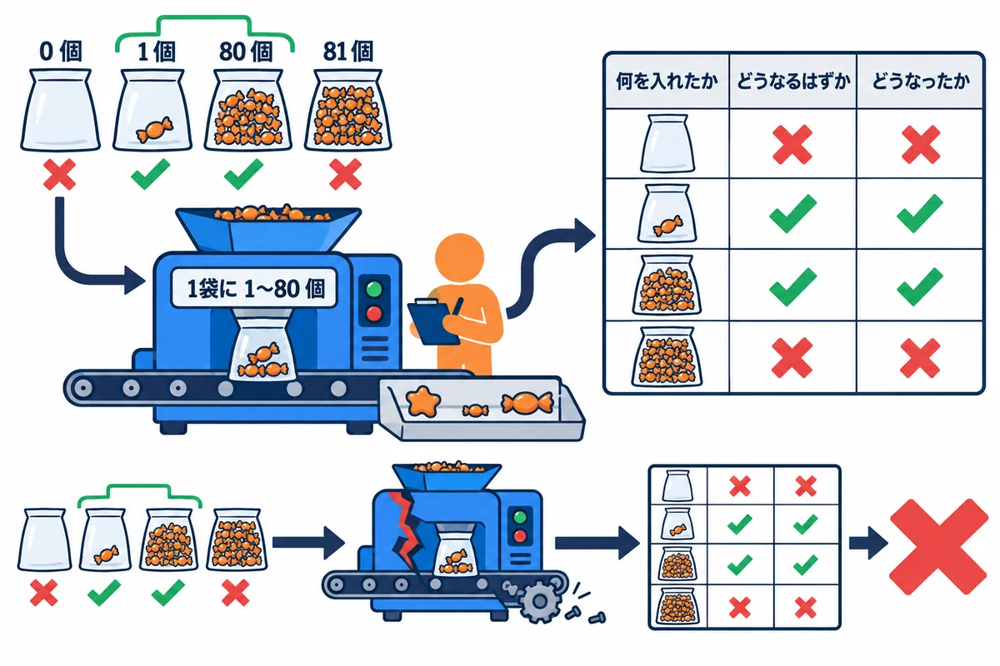
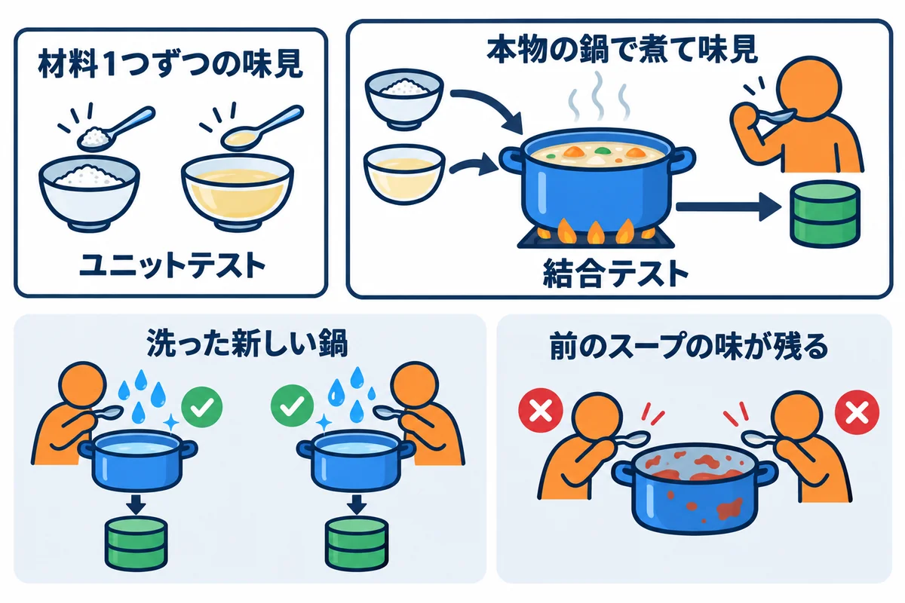
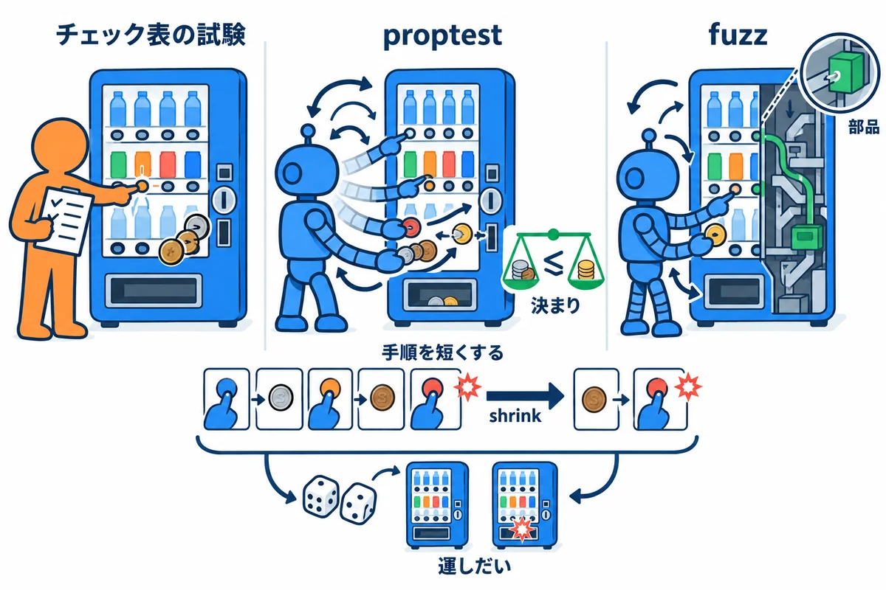
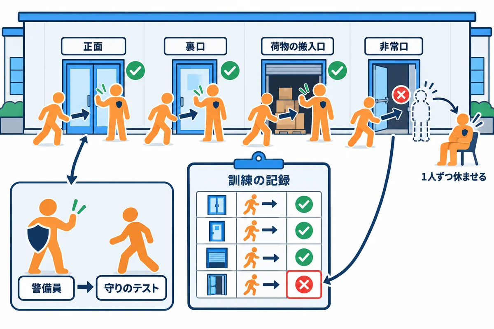
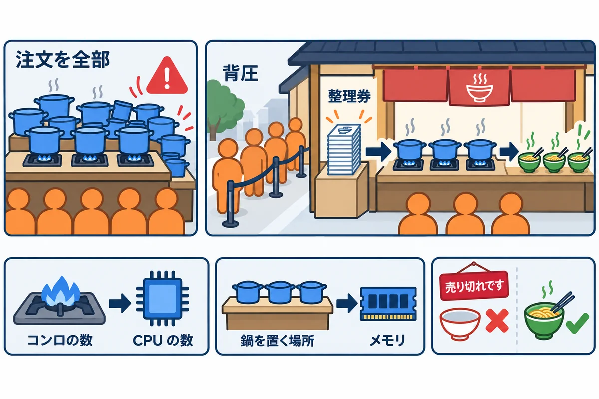

VOLUME 11 / RUST BACKEND MASTERY
品質保証 — テスト・セキュリティ・可観測性・性能
何を、どの段のテストで確かめるかを決め、ユニットテストから負荷試験・CI までを手を動かして身に付ける
色の付いた枠のコードの、右上の「コピー」ボタンを押してください。コピーしたら、ブラウザーの「戻る」で PDF に戻れます。
第10巻までで、RustNote の画面と機能は、ひととおりそろいました。けれども、「今日、動いた」ことと、「明日も、誰かが直したあとも、ちゃんと動く」ことは別の話です。次のような事故は、動くアプリでも起きます。
この巻では、こうした事故を、テスト・見張り（可観測性）・測定で、早く・自動で見つける方法を学びます。大事なのは、「とにかくテストをたくさん書く」ことではなく、何を、どの段のテストで確かめるかを決めることです。
この巻を終えると、次のことができるようになります。
| 単元 | テーマ | ひとことで言うと |
|---|---|---|
| UNIT 01 | ユニットテスト・境界値・表の形のテスト | 端の値を表に並べ、関数1つを速く確かめる |
| UNIT 02 | リポジトリの結合テスト | 本物の DB と SQL で、保存と読み出しを確かめる |
| UNIT 03 | HTTP のテスト | 状態コード・Location・クッキー・本文を確かめる |
| UNIT 04 | property test・fuzz・入力の読み取り | 思いつかない入力を、たくさん自動で試す |
| UNIT 05 | E2E・ブラウザ・アクセシビリティ | 大事な流れだけを、本物のブラウザで確かめる |
| UNIT 06 | 守りの回帰テスト | 攻撃が止まることを、毎回確かめる |
| UNIT 07 | tracing・メトリクス・health・SLO | 動いている様子を外から見えるようにする |
| UNIT 08 | benchmark・profile・メモリの使い方 | 遅いところを、測ってから直す |
| UNIT 09 | 負荷試験・背圧・容量 | たくさん来たときの限界と、壊れ方を決める |
| UNIT 10 | CI・依存・供給網・事故の対応 | 毎回同じ確かめを自動で回し、部品の安全も見る |
chars().count() で数えること（第2巻 UNIT 05）。UNIT 01 の表に、日本語と絵文字の行が出てきます。#[test]・assert!・assert_eq!。第4巻 UNIT 10）。NoteTitle・Email・Password・NoteId）と、その決まり（第9巻 UNIT 03）。この巻のテストも、第9巻と同じ形（tests/ に足して cargo test --test 名前）で書きます。テストは、「通った」だけでは、本当に役に立っているかが分かりません。各単元では、次の順番で進めてください。
この巻のコードは、すべて次の環境で実際にコンパイル・実行し、実行結果とエラーメッセージは実際の出力をそのまま載せています（パソコンのユーザー名などを含む部分は ... に置き換えています）。
| 項目 | 版・内容 |
|---|---|
| OS | Windows 11（ARM64）。コマンドは PowerShell を主に、WSL / macOS / Linux は補足で示します |
| Rust | 1.99 以上（本書シリーズの基準。Topcoat 0.11 が 1.99 以上を求めます）。動作確認は rustc 1.99.1 / cargo 1.99.1（aarch64-pc-windows-msvc） |
| RustNote | 教材の Rust/rustnote/（rustnote 0.1.0）。この巻では src/ を変えずに、tests/ と examples/ に確かめ用のファイルを足す（UNIT 03 からは、練習用のコピーの Cargo.toml の dev-dependencies にも足す） |
| scraper | 0.29.0（UNIT 03。HTML を読んで、CSS セレクターで要素を探す） |
| proptest | 1.12.0（UNIT 04。property test） |
| cargo-fuzz | 0.13.2（UNIT 04。WSL の Ubuntu 24.04（aarch64）で、rustc 1.101.0-nightly とともに使う） |
| Playwright | @playwright/test 1.64.1（UNIT 05。Node.js v25.9.0。ブラウザは、パソコンに入っている Google Chrome 155.0.8059.80 を使う） |
| axe | @axe-core/playwright 4.14.0（UNIT 05。アクセシビリティの自動の検査） |
| cargo-mutants | 27.1.0（UNIT 06。WSL の Ubuntu で使う） |
| tracing | tracing 0.1.44・tracing-subscriber 0.3.23（UNIT 07。練習用のコピーの dependencies に足す） |
| criterion | 0.8.2（UNIT 08。ベンチマーク） |
| oha | 1.16.0（UNIT 09。負荷をかける道具。このパソコンは Snapdragon X 12 コア・32 GB） |
| cargo-audit | 0.22.2（UNIT 10。RustSec のデータベースは 2026-10-30 の時点のもの） |
| テストの道具 | Rust の標準の #[test]・assert!・assert_eq!（UNIT 01 では、外のクレートを足しません） |
第9巻と同じように、教材の Rust/rustnote/ を作業用のフォルダにコピーして使います。
# 教材の rustnote フォルダを、中身ごと（-Recurse）作業用のフォルダへコピーする
Copy-Item -Recurse "教材のフォルダ\Rust\rustnote" .\rustnote
cd rustnote
# このフォルダで使われる Rust の版を確かめる（1.99.1 になる）
rustup show active-toolchain

お菓子の工場で、袋詰めの機械を検査する場面を考えます。決まりは「1袋に 1〜80 個」です。
| お菓子の工場 | RustNote のテスト |
|---|---|
| 「1袋に 1〜80 個」の決まり | NoteTitle::parse の「前後の空白を除いて 1〜80 文字」 |
| 0・1・80・81 個の袋 | 境界値（決まりの端と、その外側） |
| 数え方を間違えやすいお菓子 | 全角の空白・日本語・絵文字・濁点を分けて書いた「が」 |
| 検査の表 | 表の形のテスト（入力と期待する結果を、1行ずつ並べたテスト） |
| 壊した機械で検査を試す | わざと間違えた版で、テストが失敗するかを見る |
用語: ユニットテスト（unit test：関数や型のような小さな部品1つを、ほかから切り離して確かめるテスト。DB もネットワークも使わないので速い）
用語: 境界値（きょうかいち：決まりが切り替わる境目の値。「1〜80 文字」なら、0・1・80・81 文字）
用語: 表の形のテスト（ひょうのかたちのテスト。table-driven test：入力と期待する結果の組を表（配列）に並べ、同じ確かめ方で1行ずつ試すテスト）
テストには、確かめる範囲の違う「段」があります。RustNote にもともと入っている 41 件のテストを、段ごとに分けると次のようになります。
境界値は、次の図のように選びます。
> と >= の書き間違い、len() と chars().count() の取り違えのような間違いは、真ん中の値では見つかりません。端と、その1つ外側で初めて、答えが変わるからです。▼ このコードがやること（先に日本語で）: タイトルの決まりを確かめる行（名前・入力・期待する結果）を、表（
Vec<Case>）に並べます。表のすべての行をNoteTitle::parseに渡し、期待どおりならok、違えばNGと、実際の結果を表示します。合わなかった行が1つでもあれば、テストを失敗させます。同じ表を、わざと間違えた版の関数（文字数をlen()で数える）にも当てて、表が間違いを見つけられるかも確かめます。
//! 第11巻 UNIT 01: NoteTitle::parse を、境界の値を並べた表で確かめる（表の形のテスト）。
//! 実行: cargo test --test u01_title_table -- --nocapture
use rustnote::domain::NoteTitle;
/// 期待する結果: 合格して入る値か、不合格のときのエラーの文
enum Expect {
Ok(String),
Err(&'static str),
}
/// 表の1行: 名前・入力・期待する結果
struct Case {
label: &'static str,
input: String,
expect: Expect,
}
fn ok(label: &'static str, input: impl Into<String>, value: impl Into<String>) -> Case {
Case {
label,
input: input.into(),
expect: Expect::Ok(value.into()),
}
}
fn err(label: &'static str, input: impl Into<String>, message: &'static str) -> Case {
Case {
label,
input: input.into(),
expect: Expect::Err(message),
}
}
/// タイトルの決まり（前後の空白を除いて 1〜80 文字）を、境界の値で並べた表
fn title_cases() -> Vec<Case> {
let a80 = "あ".repeat(80);
vec![
ok("ふつうの日本語", "牛乳を買う", "牛乳を買う"),
ok("前後の空白は取る", " 買い物 ", "買い物"),
err("空", "", "タイトルを入力してください"),
err("半角の空白だけ", " ", "タイトルを入力してください"),
err("全角の空白だけ", "\u{3000}", "タイトルを入力してください"),
ok("1文字（下の端）", "あ", "あ"),
ok("80文字（上の端）", a80.clone(), a80.clone()),
err(
"81文字（上の端 + 1）",
"あ".repeat(81),
"タイトルは80文字以内にしてください（現在81文字）",
),
ok("空白を除けば80文字", format!(" {a80} "), a80),
ok(
"絵文字の家族（見た目は1つ）",
"👨\u{200D}👩\u{200D}👧",
"👨\u{200D}👩\u{200D}👧",
),
]
}
/// 表のすべての行を `parse` で試し、合わなかった行の説明を返す
fn check(parse: impl Fn(&str) -> Result<String, String>) -> Vec<String> {
let mut failures = Vec::new();
for case in title_cases() {
let actual = parse(&case.input);
let matched = match (&case.expect, &actual) {
(Expect::Ok(value), Ok(got)) => value == got,
(Expect::Err(message), Err(got)) => message == got,
_ => false,
};
let mark = if matched { "ok " } else { "NG " };
let shown = match &actual {
Ok(got) if got.chars().count() > 10 => {
format!("Ok（{} 文字）", got.chars().count())
}
Ok(got) => format!("Ok({got:?})"),
Err(message) => format!("Err({message})"),
};
println!("{mark}{} → {shown}", case.label);
if !matched {
failures.push(case.label.to_string());
}
}
failures
}
/// RustNote の NoteTitle::parse を、表の形にそろえて呼ぶ
fn rustnote_parse(input: &str) -> Result<String, String> {
NoteTitle::parse(input)
.map(|title| title.as_str().to_string())
.map_err(|error| error.to_string())
}
#[test]
fn note_title_follows_the_table() {
let failures = check(rustnote_parse);
assert!(failures.is_empty(), "表と合わなかった行: {failures:?}");
}
/// わざと間違えた版: 文字数を len()（バイト数）で数えている
fn broken_parse(input: &str) -> Result<String, String> {
let trimmed = input.trim();
let len = trimmed.len();
if len == 0 {
return Err("タイトルを入力してください".to_string());
}
if len > 80 {
return Err(format!(
"タイトルは80文字以内にしてください（現在{len}文字）"
));
}
Ok(trimmed.to_string())
}
#[test]
fn the_table_catches_a_broken_version() {
let failures = check(broken_parse);
println!("わざと間違えた版で合わなかった行: {failures:?}");
// 表が、間違いを見つけられること（合わない行が1つ以上あること）を確かめる
assert!(!failures.is_empty(), "表が間違いを見つけられませんでした");
}
コピーした rustnote フォルダの tests/u01_title_table.rs として保存して実行します。
cargo test --test u01_title_table -- --nocapture --test-threads=1
▼ 実行結果（最初の1回は Compiling の行が続きます。ここでは省いています）
Finished `test` profile [unoptimized + debuginfo] target(s) in 0.87s
Running tests\u01_title_table.rs (target\debug\deps\u01_title_table-9a34595b02bbac44.exe)
running 2 tests
test note_title_follows_the_table ... ok ふつうの日本語 → Ok("牛乳を買う")
ok 前後の空白は取る → Ok("買い物")
ok 空 → Err(タイトルを入力してください)
ok 半角の空白だけ → Err(タイトルを入力してください)
ok 全角の空白だけ → Err(タイトルを入力してください)
ok 1文字（下の端） → Ok("あ")
ok 80文字（上の端） → Ok（80 文字）
ok 81文字（上の端 + 1） → Err(タイトルは80文字以内にしてください（現在81文字）)
ok 空白を除けば80文字 → Ok（80 文字）
ok 絵文字の家族（見た目は1つ） → Ok("👨\u{200d}👩\u{200d}👧")
ok
test the_table_catches_a_broken_version ... ok ふつうの日本語 → Ok("牛乳を買う")
ok 前後の空白は取る → Ok("買い物")
ok 空 → Err(タイトルを入力してください)
ok 半角の空白だけ → Err(タイトルを入力してください)
ok 全角の空白だけ → Err(タイトルを入力してください)
ok 1文字（下の端） → Ok("あ")
NG 80文字（上の端） → Err(タイトルは80文字以内にしてください（現在240文字）)
NG 81文字（上の端 + 1） → Err(タイトルは80文字以内にしてください（現在243文字）)
NG 空白を除けば80文字 → Err(タイトルは80文字以内にしてください（現在240文字）)
ok 絵文字の家族（見た目は1つ） → Ok("👨\u{200d}👩\u{200d}👧")
わざと間違えた版で合わなかった行: ["80文字（上の端）", "81文字（上の端 + 1）", "空白を除けば80文字"]
ok
test result: ok. 2 passed; 0 failed; 0 ignored; 0 measured; 0 filtered out; finished in 0.00s
Case は、表の1行です。label（行の名前）・input（入力）・expect（期待する結果）の3つを持ちます。ok(...) と err(...) は、行を短く書くための小さな関数です。"\u{3000}" は全角の空白、"\u{200D}" は、絵文字どうしをつなぐ「見えない文字」（ゼロ幅接合子）です。見えない文字は、ソースに直接書くと区別できないので、\u{...} の形で書きます。check は、表のすべての行に、同じ確かめ方を当てる関数です。比べたい関数を引数（parse）で受け取るので、RustNote の NoteTitle::parse にも、わざと間違えた版にも、同じ表を使えます。assert! で止めずに、合わなかった行の名前を failures に集めてから、最後にまとめて assert! しています。こうすると、1回の実行で、合わない行を全部見つけられます。note_title_follows_the_table）では、10 行すべてが ok でした。半角の空白だけ・全角の空白だけは「タイトルを入力してください」、81 文字は「タイトルは80文字以内にしてください（現在81文字）」です。前後に空白を付けた 82 文字の入力は、空白を除くと 80 文字なので合格でした。Ok("👨\u{200d}👩\u{200d}👧") と表示されました。{:?} で表示すると、見えない文字（ゼロ幅接合子）が \u{200d} と書き出されます。the_table_catches_a_broken_version）では、文字数を len()（バイト数）で数える版に、同じ表を当てました。NG になったのは、80 文字・81 文字・空白を除けば 80 文字の3行です。日本語の「あ」は1文字3バイトなので、80 文字は 240 バイトと数えられ、「長すぎる」と断られました。ok でした。短い日本語だけの表では、この間違いを見つけられないのです。境界値の行を入れておいたから、見つけられました。assert! で確かめています。表を直していて、うっかり境界値の行を消してしまったら、このテストが失敗して教えてくれます。タイトルの文字数は、chars().count() で数えています。でも、人が見て「1文字」と思うものと、プログラムの数え方は、いつも同じではありません。
▼ このコードがやること（先に日本語で）: いくつかの文字列について、
chars().count()（Unicode の文字の数）・len()（UTF-8 のバイト数）・encode_utf16().count()（UTF-16 の単位の数）の3つを表示し、NoteTitle::parseが合格にするかも表示します。
▶ 書く所と動かし方: コピーした rustnote フォルダの examples フォルダに、u01_counts.rs という名前の新しいファイルを作り、下のコードを貼り付けて保存します。rustnote のフォルダで cargo run -q --example u01_counts を実行します。
//! 1つの文字列の「長さ」を、3通りの数え方で比べる。
//! NoteTitle::parse は chars().count()（Unicode の文字の数）で数えている。
//! 実行: cargo run -q --example u01_counts
use rustnote::domain::NoteTitle;
fn main() {
let samples = [
("A", "A"),
("あ", "あ"),
("が（1文字で表した形）", "\u{304C}"),
("が（か + 濁点の2つで表した形）", "\u{304B}\u{3099}"),
("👍", "👍"),
("家族の絵文字", "👨\u{200D}👩\u{200D}👧"),
("ゼロ幅スペースだけ", "\u{200B}"),
];
for (label, text) in samples {
let parsed = match NoteTitle::parse(text) {
Ok(_) => "合格".to_string(),
Err(error) => format!("不合格（{error}）"),
};
println!("[{label}]");
println!(
" 文字 {} ／ バイト {} ／ UTF-16 {} ／ NoteTitle::parse は {parsed}",
text.chars().count(),
text.len(),
text.encode_utf16().count()
);
}
}
▶ ここで初めて出てくるコード
.encode_utf16()（文字列）: 文字列を、UTF-16（ブラウザーの JavaScript が使う文字の数え方）の単位で並べるメソッド。.count()と合わせて、ブラウザーのmaxlengthと同じ数え方で長さを数えます。
cargo run -q --example u01_counts
▼ 実行結果
[A]
文字 1 ／ バイト 1 ／ UTF-16 1 ／ NoteTitle::parse は 合格
[あ]
文字 1 ／ バイト 3 ／ UTF-16 1 ／ NoteTitle::parse は 合格
[が（1文字で表した形）]
文字 1 ／ バイト 3 ／ UTF-16 1 ／ NoteTitle::parse は 合格
[が（か + 濁点の2つで表した形）]
文字 2 ／ バイト 6 ／ UTF-16 2 ／ NoteTitle::parse は 合格
[👍]
文字 1 ／ バイト 4 ／ UTF-16 2 ／ NoteTitle::parse は 合格
[家族の絵文字]
文字 5 ／ バイト 18 ／ UTF-16 8 ／ NoteTitle::parse は 合格
[ゼロ幅スペースだけ]
文字 1 ／ バイト 3 ／ UTF-16 1 ／ NoteTitle::parse は 合格
NoteTitle::parse を通ってしまいます。第9巻 UNIT 03 で見つけた、RustNote に残っている改善点です（コードは変えていません）。maxlength（入力できる長さの上限）は、HTML の決まりでは UTF-16 の単位で数えます。RustNote の作成のフォームは maxlength=(MAX_TITLE_CHARS)（80）を付けているので、決まりどおりに数えるブラウザでは、👍 のように UTF-16 で 2 単位の絵文字だけのタイトルは、40 個までしか入りません。サーバーは 80 文字（80 個）まで受け付けるので、ブラウザのほうが先に止めることになります。実際のブラウザでの数え方は、ブラウザを使ったテストで確かめます（UNIT 05）。どの数え方で「長さ」を決めるかは、仕様として決めて、表のテストに書いておきます。注意: 人が見て「1文字」と思う単位（書記素クラスタ）で数えるには、標準ライブラリではなく、
unicode-segmentationのような外のクレートが必要です。RustNote は、SQLite のlength()と同じ数え方（Unicode の文字の数）にそろえることを優先して、chars().count()を使っています（第2巻 UNIT 05・第9巻 UNIT 03）。
この節で作るテストのファイルは、確かめ終わったら必ず消してください。tests/ に残しておくと、cargo test のたびに失敗したり、コンパイルが止まったりします。
表の「期待する答え」を、まちがえて書いた場合です（tests/e01_wrong_row.rs）。
use rustnote::domain::NoteTitle;
#[test]
fn title_length_rows() {
// 表の2行目の「期待する答え」を、まちがえて true（合格）にしてしまった
let cases = [
("80文字", "あ".repeat(80), true),
("81文字", "あ".repeat(81), true),
];
for (label, input, should_pass) in cases {
assert_eq!(
NoteTitle::parse(&input).is_ok(),
should_pass,
"{label} の行が合いません"
);
}
}
cargo test --test e01_wrong_row
Finished `test` profile [unoptimized + debuginfo] target(s) in 2.63s
Running tests\e01_wrong_row.rs (target\debug\deps\e01_wrong_row-ee6ba07e72d8d14e.exe)
running 1 test
test title_length_rows ... FAILED
failures:
---- title_length_rows stdout ----
thread 'title_length_rows' (218780) panicked at tests\e01_wrong_row.rs:11:9:
assertion `left == right` failed: 81文字 の行が合いません
left: false
right: true
note: run with `RUST_BACKTRACE=1` environment variable to display a backtrace
failures:
title_length_rows
test result: FAILED. 0 passed; 1 failed; 0 ignored; 0 measured; 0 filtered out; finished in 0.00s
error: test failed, to rerun pass `--test e01_wrong_row`
assertion left == right failed: 81文字 の行が合いません は、「assert_eq! の左（実際の結果）と右（期待）が違いました。81文字 の行です」という意味です。left: false は、NoteTitle::parse が不合格（is_ok() が false）を返したこと、right: true は、表に「合格のはず」と書いたことです。assert_eq! の3つ目の引数に {label} を入れたので、表のどの行で失敗したかが、すぐ分かりました。名前が無いと、left: false と right: true だけでは、何の行か分かりません。DB を使うテストを書くときに、async の関数に、ふつうの #[test] を付けてしまった場合です（tests/e02_async.rs）。
use rustnote::domain::NoteTitle;
// async fn に、ふつうの #[test] を付けてしまった
#[test]
async fn title_is_checked() {
assert!(NoteTitle::parse("買い物").is_ok());
}
cargo test --test e02_async
Compiling rustnote v0.1.0 (...\rustnote)
error: async functions cannot be used for tests
--> tests\e02_async.rs:5:1
|
5 | async fn title_is_checked() {
| ^----
| |
| _`async` because of this
| |
6 | | assert!(NoteTitle::parse("買い物").is_ok());
7 | | }
| |_^
error: could not compile `rustnote` (test "e02_async") due to 1 previous error
#[test] は、関数を呼ぶだけなので、async の関数の中身（.await で待つ部分）を動かせません。#[tokio::test] を付けます。Tokio のランタイムを用意してから、関数を動かしてくれます（第5巻 UNIT 02・第9巻 UNIT 01）。この例の NoteTitle::parse は async ではないので、async を消して、ふつうの fn にするのが正しい直し方です。わざと間違えた版の関数を呼んでいるのに、結果を確かめていないテストです（tests/e03_no_assert.rs）。
/// わざと間違えた版: 文字数を len()（バイト数）で数えている
fn broken_parse(input: &str) -> Result<String, String> {
let len = input.trim().len();
if len == 0 || len > 80 {
return Err("不合格".to_string());
}
Ok(input.trim().to_string())
}
#[test]
fn eighty_characters() {
// 呼ぶだけで、結果を確かめていない
let _ = broken_parse(&"あ".repeat(80));
}
cargo test --test e03_no_assert
Finished `test` profile [unoptimized + debuginfo] target(s) in 1.00s
Running tests\e03_no_assert.rs (target\debug\deps\e03_no_assert-18f51359142ae564.exe)
running 1 test
test eighty_characters ... ok
test result: ok. 1 passed; 0 failed; 0 ignored; 0 measured; 0 filtered out; finished in 0.00s
ok でした。let _ = ... で結果を捨てているので、何が返ってきても失敗しません。テストは、panic したら失敗、しなければ成功という仕組みだからです。RustNote の src/domain.rs の最後には、#[cfg(test)] のユニットテストが入っています。タイトルの境界値のテストは、次の形です（抜き出しています）。
#[test]
fn note_title_counts_characters_not_bytes() {
// 日本語 80 文字は 240 バイトだが、文字数では 80 なので合格
let eighty = "あ".repeat(80);
assert!(NoteTitle::parse(&eighty).is_ok());
let eighty_one = "あ".repeat(81);
assert_eq!(
NoteTitle::parse(&eighty_one),
Err(TitleError::TooLong { len: 81, max: 80 })
);
}
#[cfg(test)] の付いた mod tests は、cargo test のときだけコンパイルされます。本番の実行ファイルには入りません。len() の取り違えに気づけません。is_err() で「失敗した」ことだけでなく、Err(TitleError::TooLong { len: 81, max: 80 }) と、どう失敗したかまで比べています。違う理由で失敗している（たとえば「空です」と言われている）間違いも見つけられます。RustNote の 19 件のユニットテストは、次のコマンドで一覧にできます。--lib は「ライブラリの中の #[cfg(test)] のテストだけ」という指定です。
cargo test --lib -- --list
問1: Email::parse の決まり（前後の空白を除いて小文字にそろえる・@ の前後が空でない・ドメインに . がある・空白が無い・254 バイトまで）を、例1-1と同じ表の形のテストにしてください。境界値として、254 バイトと 255 バイトの行も入れます。
問2: URL の /notes/{id} の {id} は、"42".parse::<NoteId>() で NoteId にします。"1"・"0"・"-1"・"9223372036854775807"（i64 の最大値）・"9223372036854775808"（最大値 + 1）・"abc"・" 1"（前に空白）・"01" を試して、それぞれどうなるかを表示してください。結果で気になる点はありますか。
問3: Password::parse の境界（8〜128 文字）を確かめてください。7・8・128・129 文字のほかに、「空白 7 つ + a」と「日本語 8 文字」の行も入れます。パスワードの空白は、タイトルと同じように取り除かれるでしょうか。
問1の解答:
tests/u01_q1.rs です。例1-1の Case を使わずに、タプル（名前, 入力, 期待）の Vec で、もっと短く書いています。
//! 問1の解答: Email::parse を、境界と「よくある書き間違い」を並べた表で確かめる。
//! 実行: cargo test --test u01_q1 -- --nocapture
use rustnote::domain::Email;
#[test]
fn email_follows_the_table() {
let long_ok = format!("{}@example.com", "a".repeat(242));
let long_ng = format!("{}@example.com", "a".repeat(243));
// （名前, 入力, 期待: Ok なら そろえた値、Err なら エラーの文）
let cases: Vec<(&str, String, Result<String, &str>)> = vec![
(
"ふつう",
"alice@example.com".into(),
Ok("alice@example.com".into()),
),
(
"空白と大文字",
" Alice@Example.COM ".into(),
Ok("alice@example.com".into()),
),
(
"@ が無い",
"alice".into(),
Err("メールアドレスに @ がありません"),
),
(
"@ の前が空",
"@example.com".into(),
Err("メールアドレスの形式が正しくありません"),
),
(
"@ の後ろが空",
"alice@".into(),
Err("メールアドレスの形式が正しくありません"),
),
(
"ドメインに . が無い",
"alice@example".into(),
Err("メールアドレスの形式が正しくありません"),
),
(
"ドメインが . で始まる",
"alice@.example.com".into(),
Err("メールアドレスの形式が正しくありません"),
),
(
"途中に空白",
"al ice@example.com".into(),
Err("メールアドレスの形式が正しくありません"),
),
(
"@ が2つ",
"a@b@example.com".into(),
Err("メールアドレスの形式が正しくありません"),
),
("254 バイト（上の端）", long_ok.clone(), Ok(long_ok)),
(
"255 バイト（上の端 + 1）",
long_ng,
Err("メールアドレスが長すぎます"),
),
];
let mut failures = Vec::new();
for (label, input, expected) in cases {
let actual = Email::parse(&input)
.map(|email| email.as_str().to_string())
.map_err(|error| error.to_string());
let matched = match (&expected, &actual) {
(Ok(value), Ok(got)) => value == got,
(Err(message), Err(got)) => message == got,
_ => false,
};
let shown = match &actual {
Ok(got) if got.len() > 30 => format!("Ok（{} バイト）", got.len()),
Ok(got) => format!("Ok({got:?})"),
Err(message) => format!("Err({message})"),
};
println!("{} {label} → {shown}", if matched { "ok" } else { "NG" });
if !matched {
failures.push(label);
}
}
assert!(failures.is_empty(), "表と合わなかった行: {failures:?}");
}
cargo test --test u01_q1 -- --nocapture
Finished `test` profile [unoptimized + debuginfo] target(s) in 0.65s
Running tests\u01_q1.rs (target\debug\deps\u01_q1-bce08f7bd283041f.exe)
running 1 test
ok ふつう → Ok("alice@example.com")
ok 空白と大文字 → Ok("alice@example.com")
ok @ が無い → Err(メールアドレスに @ がありません)
ok @ の前が空 → Err(メールアドレスの形式が正しくありません)
ok @ の後ろが空 → Err(メールアドレスの形式が正しくありません)
ok ドメインに . が無い → Err(メールアドレスの形式が正しくありません)
ok ドメインが . で始まる → Err(メールアドレスの形式が正しくありません)
ok 途中に空白 → Err(メールアドレスの形式が正しくありません)
ok @ が2つ → Err(メールアドレスの形式が正しくありません)
ok 254 バイト（上の端） → Ok（254 バイト）
ok 255 バイト（上の端 + 1） → Err(メールアドレスが長すぎます)
test email_follows_the_table ... ok
test result: ok. 1 passed; 0 failed; 0 ignored; 0 measured; 0 filtered out; finished in 0.00s
" Alice@Example.COM " は、空白が取られ、小文字の alice@example.com にそろいました（第9巻 UNIT 03）。a を 242 個 + @example.com（12 バイト）で作っています。上限はバイト数（normalized.len()）で決めているので、境界値もバイト数で作ります。決まりがどの数え方かによって、境界値の作り方も変わります。"a@b@example.com" は、最初の @ で分けると、ドメインが b@example.com になり、その中に @ があるので断られました。問2の解答:
tests/u01_q2.rs です。
//! 問2の解答: URL の /notes/{id} の {id} を NoteId にするときの境界を確かめる。
//! 実行: cargo test --test u01_q2 -- --nocapture
use rustnote::domain::NoteId;
#[test]
fn note_id_boundaries() {
let inputs = [
"1",
"0",
"-1",
"9223372036854775807",
"9223372036854775808",
"abc",
" 1",
"01",
];
for input in inputs {
match input.parse::<NoteId>() {
Ok(id) => println!("{input:?} → Ok({})", id.get()),
Err(error) => println!("{input:?} → Err({error})"),
}
}
// 下の端と上の端を、assert で固定する
assert!("0".parse::<NoteId>().is_err());
assert!("1".parse::<NoteId>().is_ok());
assert!("9223372036854775807".parse::<NoteId>().is_ok());
assert!("9223372036854775808".parse::<NoteId>().is_err());
}
cargo test --test u01_q2 -- --nocapture
Finished `test` profile [unoptimized + debuginfo] target(s) in 0.61s
Running tests\u01_q2.rs (target\debug\deps\u01_q2-07596b0af0a888f4.exe)
running 1 test
"1" → Ok(1)
"0" → Err(ID は 1 以上の数です)
"-1" → Err(ID は 1 以上の数です)
"9223372036854775807" → Ok(9223372036854775807)
"9223372036854775808" → Err(ID は数字で指定してください)
"abc" → Err(ID は数字で指定してください)
" 1" → Err(ID は数字で指定してください)
"01" → Ok(1)
test note_id_boundaries ... ok
test result: ok. 1 passed; 0 failed; 0 ignored; 0 measured; 0 filtered out; finished in 0.00s
"1" が合格、"0" と "-1" が「ID は 1 以上の数です」でした。上の端は、i64 の最大値 9223372036854775807 が合格、1 つ大きい 9223372036854775808 が不合格です。9223372036854775808 は数なのに、「ID は数字で指定してください」と言われました。NoteId は、まず i64 として読み、読めなければ「数字ではない」としているからです（src/domain.rs の from_str）。大きすぎる数も「数字ではない」になります。URL の ID は利用者が手で打つものではないので大きな問題ではありませんが、エラーの文が正確でないことは、テストを書いて初めて分かります。"01" は 1 として合格しました。つまり /notes/01 と /notes/1 は、同じノートを開きます。困ることはありませんが、「同じものを指す URL が2つある」ことは、知っておくと、ログを調べるときに迷いません。" 1"（前に空白）は不合格でした。i64 の parse は、空白を取り除かないからです。タイトルの trim() と比べると、型ごとに空白の扱いが違うことが分かります。問3の解答:
tests/u01_q3.rs です。
//! 問3の解答: Password::parse の境界（8〜128 文字）と、空白の扱いを確かめる。
//! 実行: cargo test --test u01_q3 -- --nocapture
use rustnote::domain::Password;
#[test]
fn password_boundaries() {
let cases = [
("7文字（下の端 - 1）", "a".repeat(7), false),
("8文字（下の端）", "a".repeat(8), true),
("128文字（上の端）", "a".repeat(128), true),
("129文字（上の端 + 1）", "a".repeat(129), false),
("空白7つ + a（8文字）", format!("{}a", " ".repeat(7)), true),
("日本語8文字（24 バイト）", "あ".repeat(8), true),
];
for (label, input, should_pass) in cases {
let result = Password::parse(&input);
match &result {
Ok(password) => println!("{label} → Ok({password:?})"),
Err(error) => println!("{label} → Err({error})"),
}
assert_eq!(result.is_ok(), should_pass, "{label} の行が合いません");
}
}
cargo test --test u01_q3 -- --nocapture
Finished `test` profile [unoptimized + debuginfo] target(s) in 0.60s
Running tests\u01_q3.rs (target\debug\deps\u01_q3-ead5ae5e7277cf12.exe)
running 1 test
7文字（下の端 - 1） → Err(パスワードは8文字以上にしてください)
8文字（下の端） → Ok(Password(***))
128文字（上の端） → Ok(Password(***))
129文字（上の端 + 1） → Err(パスワードは128文字以内にしてください)
空白7つ + a（8文字） → Ok(Password(***))
日本語8文字（24 バイト） → Ok(Password(***))
test password_boundaries ... ok
test result: ok. 1 passed; 0 failed; 0 ignored; 0 measured; 0 filtered out; finished in 0.00s
Password(***) と表示され、中身は出ません（第9巻 UNIT 03）。a」も 8 文字として合格しました。パスワードは、タイトルと違って trim() しません。src/domain.rs のコメントに「パスワードは空白も含めて利用者が決めたものなので、trim しない」とあります。空白をこっそり取ると、利用者が決めたパスワードと違うものが保存されてしまうからです。chars().count()（文字の数）で数えています。NoteRepository など）を、偽物ではなく本物の DB（一時フォルダの libSQL ファイル）で確かめる理由を、SQL の細かい決まりの例で説明できる
レストランの厨房で、新しいスープの味を確かめる場面を考えます。
| 厨房 | RustNote のテスト |
|---|---|
| 材料1つずつの味見 | ユニットテスト（escape_like や NoteTitle::parse を、DB なしで確かめる。UNIT 01） |
| 本物の鍋で煮て味見 | リポジトリの結合テスト（本物の libSQL に、本物の SQL を流す） |
| 火加減・入れる順番 | SQL の細かい決まり（LIKE の ESCAPE・WHERE の条件・UNIQUE・ON DELETE CASCADE） |
| 洗った新しい鍋 | テストごとに作る一時フォルダの DB（common::test_db()） |
| 前のスープの味が残る | 前のテストのデータが残った DB。結果が実行のたびに変わる |
用語: 結合テスト（けつごうテスト：いくつかの部品を、本物どうしでつないで確かめるテスト。ここでは、リポジトリと本物の DB をつなぐ）
用語: Arrange・Act・Assert（アレンジ・アクト・アサート：テストを「準備する」「操作する」「確かめる」の3つに分けて書く形）
テストの段と、それぞれが確かめるものです。この単元は、下から2段目です。
テストごとに、新しい DB を用意します。
NoteRepository の6つのメソッドには、それぞれ約束があります（src/repository/notes.rs のコメント）。たとえば「他人のノート・存在しないノートは None」「expected_version が今の version と違えば VersionMismatch」です。これを、本物の DB で1つずつ確かめます。
▼ このコードがやること（先に日本語で）: 空の DB に alice と bob を登録します（準備）。alice のノートを作り、探す・更新する・完了にする・消す、を、alice と bob の両方から試します（操作）。それぞれの結果を、1行ずつ表示します（確かめ）。ここでは結果を見るために表示していますが、本物のテストでは
assert!で確かめます。
//! 第11巻 UNIT 02: NoteRepository の約束を、本物の DB（一時フォルダの libSQL ファイル）で1つずつ確かめる。
//! 実行: cargo test --test u02_contract -- --nocapture
mod common;
use rustnote::{
domain::{Email, NewNote, Note, NoteId},
error::RepoError,
repository::{LibsqlNoteRepository, LibsqlUserRepository, NoteRepository, UserRepository},
};
/// ノートの大事な所だけを、1行の文字列にする
fn brief(result: Result<Note, RepoError>) -> String {
match result {
Ok(note) => format!(
"Ok（id={} version={} done={} title={:?}）",
note.id, note.version, note.done, note.title
),
Err(error) => format!("Err({error:?})"),
}
}
fn new_note(title: &str) -> NewNote {
NewNote::parse(title, "").expect("テスト用のノート")
}
#[tokio::test]
async fn note_repository_contract() {
// Arrange: 空の DB と、2人のユーザー
let test = common::test_db().await;
let users = LibsqlUserRepository::new(test.db.clone());
let notes = LibsqlNoteRepository::new(test.db.clone());
let alice = users
.create(
&Email::parse("alice@example.com").unwrap(),
"$argon2id$dummy",
)
.await
.unwrap();
let bob = users
.create(&Email::parse("bob@example.com").unwrap(), "$argon2id$dummy")
.await
.unwrap();
// Act と Assert: 約束を1つずつ
let created = notes.insert(alice.id, &new_note("初版")).await.unwrap();
let id = created.id;
println!(
"insert（alice） → {}",
brief(Ok(created.clone()))
);
println!(
" 作成と更新の日時が同じ → {}",
created.created_at == created.updated_at
);
let found = notes.find(alice.id, id).await.unwrap();
println!(
"find（alice） → 見つかる: {}",
found.is_some()
);
let found = notes.find(bob.id, id).await.unwrap();
println!(
"find（bob） → 見つかる: {}",
found.is_some()
);
let result = notes.update(alice.id, id, &new_note("第2版"), 1).await;
println!("update（alice, version 1） → {}", brief(result));
let result = notes.update(alice.id, id, &new_note("古い画面"), 1).await;
println!("update（alice, version 1） → {}", brief(result));
let missing = NoteId::new(99).unwrap();
let result = notes.update(alice.id, missing, &new_note("無い"), 1).await;
println!("update（alice, id 99） → {}", brief(result));
let result = notes.update(bob.id, id, &new_note("乗っ取り"), 2).await;
println!("update（bob, version 2） → {}", brief(result));
let result = notes.toggle_done(alice.id, id).await;
println!("toggle_done（alice） → {}", brief(result));
println!(
"delete（bob） → {:?}",
notes.delete(bob.id, id).await
);
println!(
"delete（alice） → {:?}",
notes.delete(alice.id, id).await
);
println!(
"delete（alice, もう一度） → {:?}",
notes.delete(alice.id, id).await
);
}
コピーした rustnote フォルダの tests/u02_contract.rs として保存して実行します。
cargo test --test u02_contract -- --nocapture
▼ 実行結果
Finished `test` profile [unoptimized + debuginfo] target(s) in 0.62s
Running tests\u02_contract.rs (target\debug\deps\u02_contract-28783a9a9988e5a0.exe)
running 1 test
insert（alice） → Ok（id=1 version=1 done=false title="初版"）
作成と更新の日時が同じ → true
find（alice） → 見つかる: true
find（bob） → 見つかる: false
update（alice, version 1） → Ok（id=1 version=2 done=false title="第2版"）
update（alice, version 1） → Err(VersionMismatch)
update（alice, id 99） → Err(NotFound)
update（bob, version 2） → Err(NotFound)
toggle_done（alice） → Ok（id=1 version=3 done=true title="第2版"）
delete（bob） → Err(NotFound)
delete（alice） → Ok(())
delete（alice, もう一度） → Err(NotFound)
test note_repository_contract ... ok
test result: ok. 1 passed; 0 failed; 0 ignored; 0 measured; 0 filtered out; finished in 0.07s
common::test_db().await が、新しい一時フォルダに DB を作り、マイグレーション（表を作る SQL。第13巻 UNIT 02）を当てて渡します。だから、最初のノートの id は、いつも 1 です。LibsqlUserRepository::create で登録します。パスワードのハッシュは、ここでは関係ないので "$argon2id$dummy" という仮の文字列です。update は4回呼びました。正しい version（1）なら成功して version 2 に、同じ version 1 でもう一度なら VersionMismatch（版の食い違い。別のタブで先に更新された）、無い id 99 なら NotFound、bob からなら NotFound です。NotFound でした。「他人のノートは、あっても無いのと同じ」という約束です（第8巻 UNIT 07）。VersionMismatch にすると、「そのノートはある」と bob に教えてしまいます。NotFound、alice から → Ok(())、もう一度 → NotFound です。1回目と3回目の NotFound は、理由は違います（他人／もう無い）が、外から見ると同じです。tests/repository.rs の8つのテストも、まとめて 1 秒かかりません。本物の DB で確かめると、何が良いのでしょうか。SQL をわざと1か所壊して、確かめます。試すときは、練習用のコピーの src/repository/notes.rs を書き換え、確かめたら必ず元に戻してください。
検索の SQL の、ESCAPE '\'（\ のうしろの文字を、ただの文字として扱う、という指定）を消します。
// 元: "user_id = ?1 AND (title LIKE ?2 ESCAPE '\\' OR body LIKE ?2 ESCAPE '\\')"
let condition = "user_id = ?1 AND (title LIKE ?2 OR body LIKE ?2)";
まず、escape_like のユニットテスト（src/repository/notes.rs の中の like_special_characters_are_escaped）を動かします。
cargo test --lib like_special
running 1 test
test repository::notes::tests::like_special_characters_are_escaped ... ok
test result: ok. 1 passed; 0 failed; 0 ignored; 0 measured; 18 filtered out; finished in 0.00s
ユニットテストは通りました。次に、リポジトリの結合テストを動かします。
cargo test --test repository
running 8 tests
test migrations_are_applied_only_once ... ok
test duplicate_email_is_a_unique_violation ... ok
test update_uses_optimistic_locking ... ok
test deleting_a_session_logs_out ... ok
test sessions_expire ... ok
test notes_are_isolated_per_owner ... ok
test toggle_and_delete ... ok
test search_filters_by_keyword_and_paginates ... FAILED
failures:
---- search_filters_by_keyword_and_paginates stdout ----
thread 'search_filters_by_keyword_and_paginates' (215108) panicked at tests\repository.rs:198:5:
assertion `left == right` failed
left: 0
right: 1
note: run with `RUST_BACKTRACE=1` environment variable to display a backtrace
failures:
search_filters_by_keyword_and_paginates
test result: FAILED. 7 passed; 1 failed; 0 ignored; 0 measured; 0 filtered out; finished in 0.18s
error: test failed, to rerun pass `--test repository`
search_filters_by_keyword_and_paginates だけが失敗しました。198 行目は assert_eq!(percent.total_count, 1); で、「100%」で検索した件数が、1 のはずが 0 でした。escape_like は、100% を 100\% に書き換えます（これは正しいままです）。ところが SQL に ESCAPE '\' が無いと、\ は「次の文字をただの文字にする印」ではなく、ただの \ として読まれます。だから「100\ を含むノート」を探してしまい、1件も見つかりません。escape_like）と、SQL（ESCAPE '\'）は、2つそろって初めて正しく動きます。ユニットテストは片方しか見ていないので、もう片方が壊れても気づけません。偽物のリポジトリ（第4巻 UNIT 02）でも、SQL は動かないので気づけません。SQL を書いたら、本物の DB で動かすテストを置くのが、この単元の中心です。確かめたら、src/repository/notes.rs を元に戻します。assertion failed: matches!(…) だけで、何が返ったか分からない今度は、削除の SQL から、持ち主の条件 AND user_id = ?2 を消してみます（練習用のコピーで試し、必ず元に戻します）。
"DELETE FROM notes WHERE id = ?1",
cargo test --test repository
running 8 tests
test migrations_are_applied_only_once ... ok
test duplicate_email_is_a_unique_violation ... ok
test deleting_a_session_logs_out ... ok
test update_uses_optimistic_locking ... ok
test sessions_expire ... ok
test toggle_and_delete ... ok
test notes_are_isolated_per_owner ... FAILED
test search_filters_by_keyword_and_paginates ... ok
failures:
---- notes_are_isolated_per_owner stdout ----
thread 'notes_are_isolated_per_owner' (218972) panicked at tests\repository.rs:90:5:
assertion failed: matches!(notes.delete(bob.id, note.id).await, Err(RepoError::NotFound))
note: run with `RUST_BACKTRACE=1` environment variable to display a backtrace
failures:
notes_are_isolated_per_owner
test result: FAILED. 7 passed; 1 failed; 0 ignored; 0 measured; 0 filtered out; finished in 0.19s
error: test failed, to rerun pass `--test repository`
notes_are_isolated_per_owner が、90 行目で失敗しました。bob が alice のノートを消そうとしたら NotFound になるはずが、そうならなかった、という意味です。テストが無ければ、誰でも、他人のノートを id だけで消せるところでした（IDOR。第8巻 UNIT 01）。?2 を消したのに、params![id, owner] で2つの値を渡したままでも、エラーにはなりませんでした。libsql は、使われない値を黙って無視しました。コンパイルも、実行も通るので、テストだけが頼りです。assertion failed: matches!(…) は、実際に何が返ったかを表示しません。Ok(()) だったのか、別のエラーだったのか、この表示だけでは分かりません。直し方: assert! の2つ目の引数に、失敗したときの文と、実際の値を書いておきます（tests/u02_owner_delete.rs）。
//! 第11巻 UNIT 02 のエラー1の直し方: 失敗したときに「実際の値」が出る形で確かめる。
//! 実行: cargo test --test u02_owner_delete
mod common;
use rustnote::{
domain::{Email, NewNote},
error::RepoError,
repository::{LibsqlNoteRepository, LibsqlUserRepository, NoteRepository, UserRepository},
};
#[tokio::test]
async fn other_user_cannot_delete() {
let test = common::test_db().await;
let users = LibsqlUserRepository::new(test.db.clone());
let notes = LibsqlNoteRepository::new(test.db.clone());
let alice = users
.create(
&Email::parse("alice@example.com").unwrap(),
"$argon2id$dummy",
)
.await
.unwrap();
let bob = users
.create(&Email::parse("bob@example.com").unwrap(), "$argon2id$dummy")
.await
.unwrap();
let note = notes
.insert(alice.id, &NewNote::parse("買い物", "").unwrap())
.await
.unwrap();
let result = notes.delete(bob.id, note.id).await;
// 2つ目の引数に、失敗したときに出す文と、実際の値を書いておく
assert!(
matches!(result, Err(RepoError::NotFound)),
"bob の削除は NotFound のはずが、{result:?} だった"
);
let still_there = notes.find(alice.id, note.id).await.unwrap();
assert!(still_there.is_some(), "alice のノートが消えている");
}
壊したままの SQL で動かすと、次のように表示されます。
cargo test --test u02_owner_delete
running 1 test
test other_user_cannot_delete ... FAILED
failures:
---- other_user_cannot_delete stdout ----
thread 'other_user_cannot_delete' (215892) panicked at tests\u02_owner_delete.rs:35:5:
bob の削除は NotFound のはずが、Ok(()) だった
note: run with `RUST_BACKTRACE=1` environment variable to display a backtrace
failures:
other_user_cannot_delete
test result: FAILED. 0 passed; 1 failed; 0 ignored; 0 measured; 0 filtered out; finished in 0.05s
error: test failed, to rerun pass `--test u02_owner_delete`
Ok(()) だった」と、実際の値が出ました。「bob の削除が成功してしまった」と、すぐに分かります。test other_user_cannot_delete ... ok）。失敗したときに読む人のために、確かめる所に一言書いておくのが、良いテストです。テストごとに DB を作るのが面倒で、決まった1つのファイル（rustnote-shared-test.db）を、どのテストからも開くようにした場合です（tests/u02_shared.rs）。2つのテストは、どちらも alice を登録します。
//! 第11巻 UNIT 02 のエラー2: 2つのテストが、同じ DB ファイルを使い回したとき。
//! 実行: cargo test --test u02_shared
use rustnote::{
db::{self, Db},
domain::Email,
repository::{LibsqlUserRepository, UserRepository},
};
/// どのテストも、決まった1つのファイルを開いてしまう（一時フォルダを作らない）
async fn shared_db() -> Db {
let path = std::env::temp_dir().join("rustnote-shared-test.db");
let db = Db::open_local(path).await.expect("DB を開けません");
db::migrate(&db).await.expect("マイグレーションに失敗");
db
}
#[tokio::test]
async fn sign_up_alice() {
let users = LibsqlUserRepository::new(shared_db().await);
let email = Email::parse("alice@example.com").unwrap();
users.create(&email, "$argon2id$dummy").await.unwrap();
}
#[tokio::test]
async fn alice_can_be_found() {
let users = LibsqlUserRepository::new(shared_db().await);
let email = Email::parse("alice@example.com").unwrap();
users.create(&email, "$argon2id$dummy").await.unwrap();
assert!(users.find_by_email(&email).await.unwrap().is_some());
}
▶ ここで初めて出てくるコード
std::env::temp_dir()（ファイルとフォルダ）: OS の、一時的なファイルを置くフォルダの場所を返す関数（Windows ならC:\Users\you\AppData\Local\Temp）。
ファイルが無い状態から、1回目を動かします。
cargo test --test u02_shared
running 2 tests
test sign_up_alice ... ok
test alice_can_be_found ... FAILED
failures:
---- alice_can_be_found stdout ----
thread 'alice_can_be_found' (219836) panicked at tests\u02_shared.rs:29:51:
called `Result::unwrap()` on an `Err` value: UniqueViolation("SQLite failure: `UNIQUE constraint failed: users.email`")
note: run with `RUST_BACKTRACE=1` environment variable to display a backtrace
failures:
alice_can_be_found
test result: FAILED. 1 passed; 1 failed; 0 ignored; 0 measured; 0 filtered out; finished in 0.04s
error: test failed, to rerun pass `--test u02_shared`
sign_up_alice は通り、alice_can_be_found が UniqueViolation（同じメールアドレスが、もうある）で失敗しました。2つのテストは同時に動くので、先に alice を登録したほうが通り、あとのほうが失敗します。どちらが先かは、その時しだいです。同じことを、ファイルを消してから 20 回くり返すと、毎回1つは通り、もう1つの失敗の理由は、次のように変わりました。
| 失敗の理由 | 回数（20 回のうち） | どこで止まったか |
|---|---|---|
UniqueViolation（alice がもういる） |
17 回 | alice を登録するところ |
database is locked（ほかの接続が書いている最中） |
3 回 | DB を開くところ |
thread 'alice_can_be_found' (215524) panicked at tests\u02_shared.rs:13:41:
DB を開けません: SqliteFailure(5, "database is locked")
この 20 回では出ませんでしたが、前の版（Topcoat 0.10・Rust 1.99.0）で8回試したときには、マイグレーションのところで table notes already exists（表がもうある）で止まったことも1回ありました。
2つのテストが、同じファイルを同時に開いて、同時にマイグレーションを当てようとするので、「表を作る」「書き込む」がぶつかります。どこでぶつかるかは、毎回違います。
ファイルを消さずに、もう一度動かします。
running 2 tests
test sign_up_alice ... FAILED
test alice_can_be_found ... FAILED
failures:
---- sign_up_alice stdout ----
thread 'sign_up_alice' (218360) panicked at tests\u02_shared.rs:22:51:
called `Result::unwrap()` on an `Err` value: UniqueViolation("SQLite failure: `UNIQUE constraint failed: users.email`")
note: run with `RUST_BACKTRACE=1` environment variable to display a backtrace
---- alice_can_be_found stdout ----
thread 'alice_can_be_found' (218476) panicked at tests\u02_shared.rs:29:51:
called `Result::unwrap()` on an `Err` value: UniqueViolation("SQLite failure: `UNIQUE constraint failed: users.email`")
failures:
alice_can_be_found
sign_up_alice
test result: FAILED. 0 passed; 2 failed; 0 ignored; 0 measured; 0 filtered out; finished in 0.03s
error: test failed, to rerun pass `--test u02_shared`
common::test_db() で、テストごとに新しい一時フォルダの DB を作ります。テストの結果が「そのテストの中でしたこと」だけで決まるようにすると、同時に動かしても、何回動かしても、同じ結果になります。確かめたら、tests/u02_shared.rs と、一時フォルダ（PowerShell なら $env:TEMP）にできた rustnote-shared-test.db で始まるファイルを消しておきます。テストごとの DB は、tests/common/mod.rs の test_db が作ります（抜き出しています）。
/// 一時フォルダの DB。TempDir が消えるとフォルダごと削除される
pub struct TestDb {
pub db: Db,
_dir: TempDir,
}
/// マイグレーション済みの空の DB を作る
pub async fn test_db() -> TestDb {
let dir = tempfile::tempdir().expect("一時フォルダを作れません");
let db = Db::open_local(dir.path().join("test.db"))
.await
.expect("DB を開けません");
db::migrate(&db).await.expect("マイグレーションに失敗");
TestDb { db, _dir: dir }
}
▶ ここで初めて出てくるコード
TempDir（ファイルとフォルダ）:tempfileの部品の、一時的なフォルダの型。この値が片づけられると、フォルダも中身ごと自動で消えます。
tempfile::tempdir() は、ほかと重ならない名前の一時フォルダを作ります。テストが同時にいくつ動いても、それぞれ別のフォルダです。TestDb は、db と一緒に TempDir を持っています。テストが終わって TestDb が片付けられる（drop される）と、TempDir もフォルダごと消えます（第3巻 UNIT 01）。項目の名前が _dir と _ で始まるのは、「使わないが、持っておくこと自体に意味がある」という印です。TempDir を持っておくのは、テストの間はフォルダを残し、終わったら消すためです。db::migrate を当てるので、テストの DB の表は、いつも本番と同じ形です。マイグレーションを足せば、テストの DB にも自動で入ります。tests/repository.rs は、この test_db を使って、リポジトリの約束を8つのテストで確かめています。ユーザーを登録する手順は、何度も出てくるので、小さな関数にまとめています（抜き出しています）。
/// テスト用のユーザーを登録する
async fn create_user(users: &LibsqlUserRepository, email: &str) -> User {
let email = Email::parse(email).unwrap();
users.create(&email, "$argon2id$dummy").await.unwrap()
}
cargo test --test repository
running 8 tests
test migrations_are_applied_only_once ... ok
test duplicate_email_is_a_unique_violation ... ok
test update_uses_optimistic_locking ... ok
test deleting_a_session_logs_out ... ok
test sessions_expire ... ok
test notes_are_isolated_per_owner ... ok
test toggle_and_delete ... ok
test search_filters_by_keyword_and_paginates ... ok
test result: ok. 8 passed; 0 failed; 0 ignored; 0 measured; 0 filtered out; finished in 0.18s
問1: タイトル Rust 入門・本文 SQLite の LIKE のノートと、タイトル Äpfel kaufen のノートを作り、Rust・rust・RUST・ｒｕｓｔ（全角）・sqlite・Äpfel・äpfel で検索して、それぞれ何件見つかるかを表示してください。検索は、大文字と小文字を区別するでしょうか。
問2: セッションの期限を、決まった時刻 T にして作り、find_user を「T の1秒前」「T ちょうど」「T の1秒後」で呼んでください。delete_expired も「T の1秒前」と「T ちょうど」で呼び、何件消えたかを表示してください。期限ちょうどの時刻は、まだ使えるでしょうか。
問3: alice と bob に、ノートを2件ずつとセッションを1つずつ作ってから、SQL で alice を users 表から消し、users・notes・sessions の行の数が、消す前と後でどう変わるかを表示してください。
問1の解答:
tests/u02_q1.rs です。
//! 問1の解答: 検索（LIKE）は、大文字と小文字を区別するかを確かめる。
//! 実行: cargo test --test u02_q1 -- --nocapture
mod common;
use rustnote::{
domain::{Email, NewNote, NoteQuery},
repository::{LibsqlNoteRepository, LibsqlUserRepository, NoteRepository, UserRepository},
};
#[tokio::test]
async fn like_and_letter_case() {
let test = common::test_db().await;
let users = LibsqlUserRepository::new(test.db.clone());
let notes = LibsqlNoteRepository::new(test.db.clone());
let alice = users
.create(
&Email::parse("alice@example.com").unwrap(),
"$argon2id$dummy",
)
.await
.unwrap();
for (title, body) in [("Rust 入門", "SQLite の LIKE"), ("Äpfel kaufen", "")] {
notes
.insert(alice.id, &NewNote::parse(title, body).unwrap())
.await
.unwrap();
}
for keyword in [
"Rust",
"rust",
"RUST",
"ｒｕｓｔ",
"sqlite",
"Äpfel",
"äpfel",
] {
let page = notes
.search(alice.id, &NoteQuery::new(Some(keyword), None))
.await
.unwrap();
println!("{keyword:<8} → {} 件", page.total_count);
}
}
cargo test --test u02_q1 -- --nocapture
running 1 test
Rust → 1 件
rust → 1 件
RUST → 1 件
ｒｕｓｔ → 0 件
sqlite → 1 件
Äpfel → 1 件
äpfel → 0 件
test like_and_letter_case ... ok
test result: ok. 1 passed; 0 failed; 0 ignored; 0 measured; 0 filtered out; finished in 0.04s
Rust・rust・RUST は、どれも 1 件でした。SQLite の LIKE は、英字（ASCII）の大文字と小文字を区別しません。本文にだけある sqlite も見つかりました（タイトルと本文の両方を探す SQL だからです）。ｒｕｓｔ は 0 件、äpfel も 0 件でした。SQLite の LIKE が大文字と小文字を同じに扱うのは、ASCII の英字だけで、Ä と ä のような文字は、別の文字として比べます。全角と半角も、別の文字です。問2の解答:
tests/u02_q2.rs です。
//! 問2の解答: セッションの期限ちょうどの時刻で、探す・掃除するとどうなるかを確かめる。
//! 実行: cargo test --test u02_q2 -- --nocapture
mod common;
use std::time::{Duration, SystemTime, UNIX_EPOCH};
use rustnote::{
domain::Email,
repository::{
LibsqlSessionRepository, LibsqlUserRepository, SessionRepository, UserRepository,
},
};
use topcoat::session::TokenHash;
#[tokio::test]
async fn session_expiry_boundary() {
let test = common::test_db().await;
let users = LibsqlUserRepository::new(test.db.clone());
let sessions = LibsqlSessionRepository::new(test.db.clone());
let alice = users
.create(
&Email::parse("alice@example.com").unwrap(),
"$argon2id$dummy",
)
.await
.unwrap();
// 期限（T）を、決まった時刻にしておく（今の時刻に頼らない）
let t = UNIX_EPOCH + Duration::from_secs(2_000_000_000);
let second = Duration::from_secs(1);
let hash = TokenHash::new([7; 32]);
sessions.create(&hash, alice.id, t).await.unwrap();
for (label, now) in [
("T - 1秒", t - second),
("T ちょうど", t),
("T + 1秒", t + second),
] {
let found = sessions.find_user(&hash, now).await.unwrap();
println!("find_user（{label}）→ 見つかる: {}", found.is_some());
}
let before: SystemTime = t - second;
println!(
"delete_expired（T - 1秒）→ {} 件消した",
sessions.delete_expired(before).await.unwrap()
);
println!(
"delete_expired（T ちょうど）→ {} 件消した",
sessions.delete_expired(t).await.unwrap()
);
}
▶ ここで初めて出てくるコード
LibsqlSessionRepository::new()（RustNote で作る物）:LibsqlSessionRepositoryを、データベース（Db）を受け取って作る関数。TokenHash::new()（Topcoat）: セッションの印のハッシュを、決めた中身から作る関数（テスト用）。LibsqlSessionRepository（RustNote で作る物）:SessionRepository（セッションの出し入れ）の決まりを、libSQL のデータベースで守る（実装する）struct。全体のコードは第13巻に載っています。
cargo test --test u02_q2 -- --nocapture
running 1 test
find_user（T - 1秒）→ 見つかる: true
find_user（T ちょうど）→ 見つかる: false
find_user（T + 1秒）→ 見つかる: false
delete_expired（T - 1秒）→ 0 件消した
delete_expired（T ちょうど）→ 1 件消した
test session_expiry_boundary ... ok
test result: ok. 1 passed; 0 failed; 0 ignored; 0 measured; 0 filtered out; finished in 0.05s
find_user の SQL は s.expires_at > ?2（期限が今よりあとなら有効）で、delete_expired は expires_at <= ?1（期限が今か、今より前なら消す）です。T ちょうどは「使えない」側と「消す」側の両方に入るので、すき間も重なりもありません。> と >= を取り違えると、「期限ちょうどの1秒だけ、使えないのに消されない」セッションができます。SystemTime::now() ではなく、決まった時刻（UNIX_EPOCH から 20 億秒）にしたのは、テストの結果を、動かした時刻によって変えないためです（エラー2の「共有しているもの」の1つが、今の時刻です）。問3の解答:
tests/u02_q3.rs です。
//! 問3の解答: ユーザーを消すと、その人のノートとセッションはどうなるかを確かめる。
//! 実行: cargo test --test u02_q3 -- --nocapture
mod common;
use std::time::{Duration, SystemTime};
use rustnote::{
db::Db,
domain::{Email, NewNote},
repository::{
LibsqlNoteRepository, LibsqlSessionRepository, LibsqlUserRepository, NoteRepository,
SessionRepository, UserRepository,
},
};
use topcoat::session::TokenHash;
/// 表ごとの行の数を、1行の文字列にする
async fn counts(db: &Db) -> String {
let conn = db.connect().await.expect("DB に接続できません");
let mut parts = Vec::new();
for table in ["users", "notes", "sessions"] {
let mut rows = conn
.query(&format!("SELECT COUNT(*) FROM {table}"), ())
.await
.expect("数えられません");
let row = rows
.next()
.await
.expect("行を読めません")
.expect("行がない");
let count: i64 = row.get(0).expect("COUNT(*)");
parts.push(format!("{table}={count}"));
}
parts.join(" ")
}
#[tokio::test]
async fn deleting_a_user_cascades() {
let test = common::test_db().await;
let users = LibsqlUserRepository::new(test.db.clone());
let notes = LibsqlNoteRepository::new(test.db.clone());
let sessions = LibsqlSessionRepository::new(test.db.clone());
let expires = SystemTime::now() + Duration::from_secs(60);
for (n, email) in ["alice@example.com", "bob@example.com"]
.into_iter()
.enumerate()
{
let user = users
.create(&Email::parse(email).unwrap(), "$argon2id$dummy")
.await
.unwrap();
for title in ["1件目", "2件目"] {
notes
.insert(user.id, &NewNote::parse(title, "").unwrap())
.await
.unwrap();
}
let hash = TokenHash::new([n as u8; 32]);
sessions.create(&hash, user.id, expires).await.unwrap();
}
println!("消す前: {}", counts(&test.db).await);
// RustNote には「退会」の機能がまだ無いので、SQL で直接 alice を消す
let conn = test.db.connect().await.unwrap();
let deleted = conn
.execute("DELETE FROM users WHERE email = 'alice@example.com'", ())
.await
.unwrap();
println!("users から {deleted} 行消した");
println!("消した後: {}", counts(&test.db).await);
}
cargo test --test u02_q3 -- --nocapture
running 1 test
消す前: users=2 notes=4 sessions=2
users から 1 行消した
消した後: users=1 notes=2 sessions=1
test deleting_a_user_cascades ... ok
test result: ok. 1 passed; 0 failed; 0 ignored; 0 measured; 0 filtered out; finished in 0.07s
users から alice の1行を消すと、alice のノート2件とセッション1つも、一緒に消えました。bob の分は残っています。migrations の表の定義で、notes.user_id と sessions.user_id に REFERENCES users(id) ON DELETE CASCADE（参照先が消えたら、一緒に消す）と書いてあり、libSQL の接続では外部キーの検査が有効（foreign_keys=1。第13巻 UNIT 02）だからです。ESCAPE や WHERE の持ち主の条件が壊れていれば、ユニットテストは通ったままになる。assert! には、失敗したときの文と実際の値を書いておく。assert_redirect・cookie_attributes）を作り、#[track_caller] を付けて、失敗したときにテストのどの行かが出るようにできるcontains）ではなく、CSS セレクター（scraper）で「どの要素の中か」まで決めて確かめる理由を、通ってしまう間違いで説明できるSet-Cookie）が2つあるときの読み方と、順番に頼ったテストが、ときどきだけ失敗する理由を言える通販の荷物を受け取って、中身を確かめる（検品する）場面を考えます。
Location）も確かめます。| 荷物の検品 | HTTP のテスト |
|---|---|
| 伝票の印 | 状態コード（200 OK・303 See Other・404 Not Found など） |
| 転送先の住所 | Location ヘッダー |
| 会員証と注意書き | Set-Cookie ヘッダーと、その属性（HttpOnly・Max-Age など） |
| 会員証が2枚 | 同じ名前のヘッダーが2つ（get_all で全部読み、名前で探す） |
| 箱の中身 | 本文（HTML） |
| 仕切りの中で確かめる | CSS セレクターで、要素を決めて確かめる（例3-3） |
用語: ヘッダー（レスポンスの本文の前に付く「名前: 値」の行。移動先の
Location、クッキーを渡すSet-Cookie、本文の形を表すContent-Typeなど。同じ名前の行が、いくつあってもよい）
用語: CSS セレクター（HTML の中の要素を、
ul.note-list li a（note-listという class のulの中の、liの中のa）のように、場所で指定する書き方。CSS で見た目を当てるときと同じ書き方）
用語:
#[track_caller]（関数に付ける印。その関数の中で失敗（panic）したとき、失敗の場所として、その関数を呼んだ行が表示されるようになる）
RustNote の POST /signup のレスポンスの4つの部分と、それぞれの確かめ方です（例3-1の出力から）。
検索の画面で、「買う」という字が、どこにあるかです。
テストを書く前に、RustNote が本当に何を返しているかを、全部表示して見ます。
▼ このコードがやること（先に日本語で）: 登録のフォームを送り（
POST /signup）、返ってきた状態コードと、ヘッダーを全部表示します。セッションのトークンは、先頭の6文字と長さだけにします。次に、そのクッキーでノートの一覧（GET /notes）を開き、状態コード・ヘッダーと、本文の長さ・<title>・<h1>を表示します。
//! 第11巻 UNIT 03: 1つのレスポンスの4つの部分（状態コード・ヘッダー・クッキー・本文）を見る。
//! 実行: cargo test --test u03_parts -- --nocapture
mod common;
use common::{body_text, encode, session_cookie, test_app};
use topcoat::router::response::Response;
const PASSWORD: &str = "correct horse battery";
/// 状態コードと、ヘッダーを全部表示する（セッションのトークンは、先頭の6文字だけ）
fn show(label: &str, response: &Response) {
println!("--- {label}");
println!("状態コード: {}", response.status());
for (name, value) in response.headers() {
let value = value.to_str().unwrap_or("（文字にできない）");
let shown = match value.strip_prefix("__Host-session=") {
Some(rest) => {
let (token, attributes) = rest.split_once(';').unwrap_or((rest, ""));
format!(
"__Host-session={}…（{} 文字）;{attributes}",
&token[..6],
token.len()
)
}
None => value.to_string(),
};
println!("{name}: {shown}");
}
}
#[tokio::test]
async fn four_parts_of_a_response() {
let app = test_app().await;
// 1. 登録のフォームを送る（成功すると、303 でノートの一覧へ）
let form = format!(
"email={}&password={}&password_confirm={}",
encode("alice@example.com"),
encode(PASSWORD),
encode(PASSWORD)
);
let response = app.post_form("/signup", &form, None).await;
show("POST /signup", &response);
let cookie = session_cookie(&response).unwrap();
// 2. ログインしたクッキーで、ノートの一覧を開く
let response = app.get("/notes", Some(&cookie)).await;
show("GET /notes", &response);
let html = body_text(response).await;
println!("本文: {} バイト", html.len());
for tag in ["<title>", "<h1>"] {
let start = html.find(tag).unwrap();
let end = start + html[start..].find("</").unwrap();
println!("本文の {tag}: {}", &html[start + tag.len()..end]);
}
}
コピーした rustnote フォルダの tests/u03_parts.rs として保存して実行します。
cargo test --test u03_parts -- --nocapture
▼ 実行結果
Finished `test` profile [unoptimized + debuginfo] target(s) in 0.83s
Running tests\u03_parts.rs (target\debug\deps\u03_parts-76b358a1ad142f58.exe)
running 1 test
POST /signup -> 303 See Other (511.5942ms)
--- POST /signup
状態コード: 303 See Other
location: /notes
set-cookie: flash=signed_up; HttpOnly; SameSite=Lax; Path=/; Max-Age=300
set-cookie: __Host-session=Vr9LDo…（46 文字）; HttpOnly; SameSite=Lax; Secure; Path=/; Max-Age=2592000
GET /notes -> 200 OK (9.328ms)
--- GET /notes
状態コード: 200 OK
content-type: text/html; charset=utf-8
vary: Accept
vary: accept-encoding
本文: 1318 バイト
本文の <title>: RustNote
本文の <h1>: ノート
test four_parts_of_a_response ... ok
test result: ok. 1 passed; 0 failed; 0 ignored; 0 measured; 0 filtered out; finished in 0.55s
303 See Other と location: /notes が返りました。ブラウザは、この2つを見て、/notes を開き直します（PRG。第10巻 UNIT 02）。本文は空です。303 だけを確かめても、移動先が違えば、利用者は別の画面に行ってしまいます。303 と Location は、いつも組で確かめます（例3-2の assert_redirect）。set-cookie: の行が2つありました。お知らせの flash=signed_up と、ログインの __Host-session です。同じ名前のヘッダーが、2回出てきます。__Host-session の属性は、HttpOnly（JavaScript から読めない）・SameSite=Lax（ほかのサイトからの POST では送られない）・Secure（HTTPS だけ）・Path=/・Max-Age=2592000（2,592,000 秒＝30 日）です。flash は Max-Age=300（5 分）で、Secure がありません。どれも第8巻で確かめた守りなので、テストで、属性まで確かめます。flash が先ですが、先とは限りません（エラー2）。content-type: text/html; charset=utf-8 は、「本文は HTML で、文字は UTF-8」という意味です。RustNote は、HTML の中にも <meta charset="utf-8"> を書いていますが、ブラウザは、ヘッダーのほうを先に見ます。vary: は、Topcoat が付けた、「Accept・accept-encoding のヘッダーによって、返す中身が変わることがある」というキャッシュ向けの知らせです。<title> は RustNote、<h1> は ノート でした。X-Frame-Options のような、守りのためのヘッダーは1つもありませんでした（問2）。全部表示してみると、こうした「無いもの」にも気づけます。#[track_caller] を付ける例3-1で見た値を、assert で確かめます。「303 で、この URL へ」「このクッキーの属性は、これ」は何度も出てくるので、道具（小さな関数）にします。
▼ このコードがやること（先に日本語で）:
assert_redirectは、「303 で、toへ移動するか」を確かめます。cookie_attributesは、Set-Cookieを全部読んで、名前が合うものを探し、属性を並んだ順に返します。この2つの道具で、登録のレスポンス・ログインしていない人の移動先・Content-Type を確かめる、3つのテストを書きます。
▶ 書く所と動かし方: コピーした rustnote フォルダの tests フォルダに、u03_helpers.rs という名前の新しいファイルを作り、下のコードを貼り付けて保存します。rustnote のフォルダで cargo test --test u03_helpers を実行します。
//! 第11巻 UNIT 03: レスポンスを確かめる道具（ヘルパー）を作り、HTTP のテストを短く書く。
//! 道具に #[track_caller] を付けて、失敗したときに「テストのどの行か」が出るようにする。
//!
//! 実行: cargo test --test u03_helpers
mod common;
use common::{encode, location, test_app};
use topcoat::router::{StatusCode, header, response::Response};
const PASSWORD: &str = "correct horse battery";
/// 303 で `to` へ移動するレスポンスか
#[track_caller]
fn assert_redirect(response: &Response, to: &str) {
assert_eq!(response.status(), StatusCode::SEE_OTHER, "303 のはず");
assert_eq!(location(response), to, "移動先");
}
/// `name` のクッキーの属性（`HttpOnly`・`Path=/` など）を、並んだ順に返す。無ければ止まる
#[track_caller]
fn cookie_attributes(response: &Response, name: &str) -> Vec<String> {
let prefix = format!("{name}=");
let value = response
.headers()
.get_all(header::SET_COOKIE)
.iter()
.filter_map(|value| value.to_str().ok())
.find(|value| value.starts_with(&prefix))
.unwrap_or_else(|| panic!("{name} のクッキーがありません"));
value
.split(';')
.skip(1)
.map(|attribute| attribute.trim().to_string())
.collect()
}
#[tokio::test]
async fn signup_sets_two_cookies_and_redirects() {
let app = test_app().await;
let form = format!(
"email={}&password={}&password_confirm={}",
encode("alice@example.com"),
encode(PASSWORD),
encode(PASSWORD)
);
let response = app.post_form("/signup", &form, None).await;
assert_redirect(&response, "/notes");
// セッション: JavaScript から読めず・HTTPS だけ・ほかのサイトからの POST では送られず・30 日
assert_eq!(
cookie_attributes(&response, "__Host-session"),
[
"HttpOnly",
"SameSite=Lax",
"Secure",
"Path=/",
"Max-Age=2592000"
]
);
// お知らせ: 5 分だけ
assert_eq!(
cookie_attributes(&response, "flash"),
["HttpOnly", "SameSite=Lax", "Path=/", "Max-Age=300"]
);
}
#[tokio::test]
async fn pages_for_members_send_guests_to_login() {
let app = test_app().await;
for path in ["/notes", "/notes/1", "/notes/1/edit"] {
let response = app.get(path, None).await;
assert_redirect(&response, "/login");
}
}
#[tokio::test]
async fn html_pages_say_utf8() {
let app = test_app().await;
let response = app.get("/login", None).await;
assert_eq!(response.status(), StatusCode::OK);
assert_eq!(
response.headers()[header::CONTENT_TYPE],
"text/html; charset=utf-8"
);
}
▶ ここで初めて出てくるコード
#[track_caller]（テスト）: 付けた関数の中で止まった（パニックした）時に、その関数の中ではなく「呼んだ所」の行の番号を表示する印（属性）。テスト用の手伝いの関数に付けると、失敗の場所が分かりやすくなります。
cargo test --test u03_helpers
▼ 実行結果
running 3 tests
test html_pages_say_utf8 ... ok
test pages_for_members_send_guests_to_login ... ok
test signup_sets_two_cookies_and_redirects ... ok
test result: ok. 3 passed; 0 failed; 0 ignored; 0 measured; 0 filtered out; finished in 0.49s
cookie_attributes(&response, "__Host-session") と書けば、何を確かめているかが、読む人にもすぐ分かります。#[track_caller] は、失敗したときのための印です。違いを見るために、/notes/1 の移動先を、わざと /notes と書きまちがえたテストを、印の無い版と有る版で動かします（assert_redirect を3回呼び、2回目だけが間違い）。//! 第11巻 UNIT 03 例3-2: 道具に #[track_caller] が無いと、失敗の場所が道具の中になる。
//! 3つの URL のうち、どれか1つの期待を、わざと書きまちがえている。
//! 実行: cargo test --test e03_no_track
mod common;
use common::{location, test_app};
use topcoat::router::{StatusCode, response::Response};
fn assert_redirect(response: &Response, to: &str) {
assert_eq!(response.status(), StatusCode::SEE_OTHER, "303 のはず");
assert_eq!(location(response), to, "移動先");
}
#[tokio::test]
async fn guests_are_redirected() {
let app = test_app().await;
assert_redirect(&app.get("/notes", None).await, "/login");
assert_redirect(&app.get("/notes/1", None).await, "/notes");
assert_redirect(&app.get("/notes/1/edit", None).await, "/login");
}
印が無い版（tests/e03_no_track.rs）:
thread 'guests_are_redirected' (218940) panicked at tests\e03_no_track.rs:12:5:
assertion `left == right` failed: 移動先
left: "/login"
right: "/notes"
印が有る版（tests/e03_track.rs。違うのは #[track_caller] の1行だけ）:
thread 'guests_are_redirected' (217604) panicked at tests\e03_track.rs:20:5:
assertion `left == right` failed: 移動先
left: "/login"
right: "/notes"
e03_no_track.rs:12:5、つまり道具の中の assert_eq! の行です。3回呼んだうちの、どれが失敗したのかが分かりません。e03_track.rs:20:5、つまり2回目に呼んだ行が出ます。道具を作ったら、#[track_caller] を付けるのを、くせにします。本文の HTML を、文字の並びのまま調べるのではなく、HTML として読んで、要素を決めて調べます。HTML を読むクレート scraper を、練習用のコピーの dev-dependency（テストのときだけ使う依存）に足します。
cargo add --dev scraper@=0.29.0
Updating crates.io index
Adding scraper =0.29.0 to dev-dependencies
Features:
+ errors
+ main
- atomic
- deterministic
- serde
Updating crates.io index
Locking 28 packages to highest Rust 1.99 compatible versions
（このあと、scraper 自身と、scraper が使うクレートの、合わせて 28 個の Adding の行が続きます。）
▼ このコードがやること（先に日本語で）: alice で「牛乳を買う」「本を返す」の2つのノートを作り、「買う」で検索した一覧の画面を、2つのやり方で確かめます。1つ目は、本文に「買う」という字があるか（
contains）。2つ目は、ul.note-list li a（一覧のリンク）の文字を、上から順に取り出し、["牛乳を買う"]とまるごと比べます。
▶ 書く所と動かし方: コピーした rustnote フォルダの tests フォルダに、u03_body.rs という名前の新しいファイルを作り、下のコードを貼り付けて保存します。rustnote のフォルダで cargo test --test u03_body -- --nocapture を実行します。
//! 第11巻 UNIT 03: 本文の確かめ方を比べる。
//! 「本文に、その文字があるか」（contains）と、「一覧のリンクに、その題があるか」（scraper の CSS セレクター）。
//!
//! 実行: cargo test --test u03_body -- --nocapture
mod common;
use common::{body_text, test_app};
use scraper::{Html, Selector};
const PASSWORD: &str = "correct horse battery";
/// 一覧のページの、ノートのリンクの文字を、上から順に返す
fn listed_titles(html: &str) -> Vec<String> {
let document = Html::parse_document(html);
let links = Selector::parse("ul.note-list li a").unwrap();
document
.select(&links)
.map(|link| link.text().collect::<String>())
.collect()
}
#[tokio::test]
async fn search_by_contains() {
let app = test_app().await;
let alice = app.sign_up("alice@example.com", PASSWORD).await;
app.create_note(&alice, "牛乳を買う", "").await;
app.create_note(&alice, "本を返す", "").await;
let html = body_text(app.get("/notes?q=%E8%B2%B7%E3%81%86", Some(&alice)).await).await;
println!("contains(\"買う\") → {}", html.contains("買う"));
assert!(
html.contains("買う"),
"「買う」で検索すると、本文に「買う」がある"
);
}
#[tokio::test]
async fn search_by_selector() {
let app = test_app().await;
let alice = app.sign_up("alice@example.com", PASSWORD).await;
app.create_note(&alice, "牛乳を買う", "").await;
app.create_note(&alice, "本を返す", "").await;
let html = body_text(app.get("/notes?q=%E8%B2%B7%E3%81%86", Some(&alice)).await).await;
let titles = listed_titles(&html);
println!("一覧のリンク → {titles:?}");
assert_eq!(
titles,
["牛乳を買う"],
"「買う」で検索すると、一覧は「牛乳を買う」だけ"
);
}
▶ ここで初めて出てくるコード
.select()（テスト）:scraperの部品で、HTML の中から、CSS と同じ書き方（Selector）に合うタグを探すメソッド。テストで、返ってきた HTML の中身を確かめる時に使います。Selector（テスト）:scraperの部品の、「どのタグを探すか」（CSS と同じ書き方）を表す型。Selector::parse("a.nav")で作ります。
cargo test --test u03_body -- --nocapture --test-threads=1
▼ 実行結果
Finished `test` profile [unoptimized + debuginfo] target(s) in 1.57s
Running tests\u03_body.rs (target\debug\deps\u03_body-3a77394819c142a3.exe)
running 2 tests
test search_by_contains ... POST /signup -> 303 See Other (425.0911ms)
POST /notes -> 303 See Other (7.3585ms)
POST /notes -> 303 See Other (9.0424ms)
GET /notes -> 200 OK (5.4579ms)
contains("買う") → true
ok
test search_by_selector ... POST /signup -> 303 See Other (410.4965ms)
POST /notes -> 303 See Other (6.984ms)
POST /notes -> 303 See Other (8.6498ms)
GET /notes -> 200 OK (3.9642ms)
一覧のリンク → ["牛乳を買う"]
ok
test result: ok. 2 passed; 0 failed; 0 ignored; 0 measured; 0 filtered out; finished in 0.91s
--test-threads=1 は、2つのテストを1つずつ動かす指定です。同時に動かすと、アクセスログの行と println! の行が、行の途中で混ざって読みにくくなるので、ここでは1つずつにしました。link.text() は、要素の中の文字を返します。HTML の & のような書き方は、もとの文字（&）に戻ります（問3）。//! 第11巻 UNIT 03 エラー1: 本文を読んだあとで、同じレスポンスの状態コードを見ようとした。
//! 実行: cargo test --test e03_moved
mod common;
use common::{body_text, test_app};
use topcoat::router::StatusCode;
#[tokio::test]
async fn login_page_has_a_form() {
let app = test_app().await;
let response = app.get("/login", None).await;
let html = body_text(response).await;
assert!(html.contains("<form"));
assert_eq!(response.status(), StatusCode::OK);
}
cargo test --test e03_moved
Compiling rustnote v0.1.0 (...\rustnote)
error[E0382]: borrow of moved value: `response`
--> tests\e03_moved.rs:16:16
|
12 | let response = app.get("/login", None).await;
| -------- move occurs because `response` has type `http::response::Response<Body>`, which does not implement the `Copy` trait
13 |
14 | let html = body_text(response).await;
| -------- value moved here
15 | assert!(html.contains("<form"));
16 | assert_eq!(response.status(), StatusCode::OK);
| ^^^^^^^^ value borrowed here after move
|
note: consider changing this parameter type in function `body_text` to borrow instead if owning the value isn't necessary
--> tests\common\mod.rs:117:34
|
117 | pub async fn body_text(response: Response) -> String {
| --------- ^^^^^^^^ this parameter takes ownership of the value
| |
| in this function
For more information about this error, try `rustc --explain E0382`.
error: could not compile `rustnote` (test "e03_moved") due to 1 previous error
response は、14 行目で body_text に移された（move）ので、16 行目では、もう使えません」というエラーです。body_text(response: Response) は、レスポンスを引数として受け取って（所有権ごと）本文を読みます（第3巻）。 let status = response.status();
let html = body_text(response).await;
assert_eq!(status, StatusCode::OK);
問1の答えの tests/u03_q1.rs も、この順番で書いています。
//! 第11巻 UNIT 03 エラー2: 1つ目の Set-Cookie が、セッションのクッキーだと思い込んだテスト。
//! 実行: cargo test --test e03_first_cookie
mod common;
use common::{encode, test_app};
use topcoat::router::header;
const PASSWORD: &str = "correct horse battery";
#[tokio::test]
async fn first_set_cookie_is_the_session() {
let app = test_app().await;
let form = format!(
"email={}&password={}&password_confirm={}",
encode("alice@example.com"),
encode(PASSWORD),
encode(PASSWORD)
);
let response = app.post_form("/signup", &form, None).await;
// get は、同じ名前のヘッダーが2つあっても、1つ目しか返さない
let first = response.headers()[header::SET_COOKIE].to_str().unwrap();
assert!(
first.starts_with("__Host-session="),
"1つ目の Set-Cookie: {first}"
);
}
このテストを、10 回続けて動かしました。
1 回目: ok
2 回目: ok
3 回目: ok
4 回目: ok
5 回目: ok
6 回目: ok
7 回目: ok
8 回目: ok
9 回目: ok
10 回目: FAILED
失敗した回の出力です。
test first_set_cookie_is_the_session ... FAILED
thread 'first_set_cookie_is_the_session' (213976) panicked at tests\e03_first_cookie.rs:24:5:
1つ目の Set-Cookie: flash=signed_up; HttpOnly; SameSite=Lax; Path=/; Max-Age=300
test result: FAILED. 0 passed; 1 failed; 0 ignored; 0 measured; 0 filtered out; finished in 0.46s
Set-Cookie が flash=signed_up でした。もう一度 10 回試したときは、6 回失敗しました。RustNote は、1回も変わっていません。headers()[…]（と headers().get(…)）は、同じ名前のヘッダーが2つあっても、1つ目だけを返します。そして、Topcoat が使っている cookie 0.18.2 は、返すクッキーを HashSet（順番を持たない入れ物）にしまっています。HashSet の中の順番は、プログラムを動かすたびに変わるので、どちらが1つ目になるかは、その時しだいです。cookie_attributes のように、get_all で全部読んで、名前で探します。RustNote の tests/common/mod.rs の session_cookie も、この形です。HashSet・HashMap の並び・同時に動くテストの順番・時刻）に頼っていることがよくあります（UNIT 02 のエラー2も、同時に動くテストの順番でした）。検索の模様を作る行で、format!("%{}%", …)（どこかに含む）を、format!("{}%", …)（その字で始まる）と書きまちがえた場合です（練習用のコピーの src/repository/notes.rs で試し、必ず元に戻します）。
Some(keyword) => format!("{}%", escape_like(keyword)),
例3-3のテストを動かします。
test search_by_contains ... POST /signup -> 303 See Other (423.5922ms)
contains("買う") → true
test search_by_selector ... POST /signup -> 303 See Other (440.359ms)
一覧のリンク → []
thread 'search_by_selector' (198124) panicked at tests\u03_body.rs:48:5:
assertion `left == right` failed: 「買う」で検索すると、一覧は「牛乳を買う」だけ
left: []
right: ["牛乳を買う"]
test result: FAILED. 1 passed; 1 failed; 0 ignored; 0 measured; 0 filtered out; finished in 0.99s
[]）になりました。それなのに、contains("買う") の版は true のまま通りました。検索の欄に、入力した「買う」が、そのまま戻して表示されているからです。セレクターの版だけが、「一覧は []」と止まりました。tests/http.rs と tests/repository.rs も動かしました。test result: ok. 14 passed; 0 failed; 0 ignored; 0 measured; 0 filtered out; finished in 2.01s
test search_filters_by_keyword_and_paginates ... FAILED
thread 'search_filters_by_keyword_and_paginates' (211964) panicked at tests\repository.rs:203:5:
test result: FAILED. 7 passed; 1 failed; 0 ignored; 0 measured; 0 filtered out; finished in 0.19s
tests/http.rs の 14 個は、全部通りました。検索のテスト（list_searches_and_paginates）は「所有権」で探しますが、そのノートの本文は「所有権」そのもので、「所有権」で始まるので、前に一致でも見つかるからです。tests/repository.rs の検索のテストが、203 行目（_計算 で探す所）で気づきました。tests/http.rs は、ポートを開かずに、Router::handle へリクエストを直接渡して確かめます（tests/common/mod.rs の test_app・get・post_form）。この単元のテストも、同じ道具を使いました。common::session_cookie は、get_all で全部読み、__Host-session= で始まるものを探します（エラー2の直し方の形）。一方、notes_require_login は、get(header::SET_COOKIE) で1つ目を読んでいます。ログインしていない人へのレスポンスには、クッキーが flash の1つしかないので、今は正しく動きますが、クッキーが増えると、エラー2と同じことが起きます（改善点）。tests/http.rs の本文の確かめは、ほとんどが contains です。一覧の件数は html.matches("<li class=").count() で数えています。エラー3のように、contains が通ってしまう所が無いかを、scraper で見直す余地があります（改善点。RustNote の Cargo.toml には、scraper を足していません）。X-Frame-Options などの守りのヘッダーを返していません（問2、改善点）。問1: ログインしていない人が GET /notes を開いたときの、状態コード・Location・Set-Cookie・本文を、例3-1のように表示し、assert で確かめてください。移動先のログイン画面に「ログインしてください」が出ることも確かめてください。
問2: GET /login と、ログインした人の GET /notes のレスポンスに、次の6つのヘッダーがあるかを表示してください。x-content-type-options・x-frame-options・content-security-policy・referrer-policy・strict-transport-security・cache-control。無いと、どんなことが起こりうるでしょうか。
問3: 題が <b>太字</b> & "引用" のノートを作り、一覧の画面で、ul.note-list li a の文字が、入力した題と同じであることと、一覧の中に b 要素が1つも無いことを、scraper で確かめてください。本文の中では、どんな形で書かれているでしょうか。
問1の解答:
//! 第11巻 UNIT 03 問1: ログインしていない人が GET /notes を開いたときの、4つの部分を確かめる。
//! 実行: cargo test --test u03_q1 -- --nocapture
mod common;
use common::{body_text, location, test_app};
use topcoat::router::{StatusCode, header};
#[tokio::test]
async fn guest_opens_notes() {
let app = test_app().await;
let response = app.get("/notes", None).await;
let status = response.status();
let to = location(&response).to_string();
let cookies: Vec<String> = response
.headers()
.get_all(header::SET_COOKIE)
.iter()
.map(|value| value.to_str().unwrap().to_string())
.collect();
let html = body_text(response).await;
println!("状態コード: {status}");
println!("Location: {to}");
println!("Set-Cookie: {cookies:?}");
println!("本文: {} バイト", html.len());
assert_eq!(status, StatusCode::SEE_OTHER);
assert_eq!(to, "/login");
assert_eq!(
cookies,
["flash=login_required; HttpOnly; SameSite=Lax; Path=/; Max-Age=300"]
);
// 移動先のログイン画面で、お知らせが出る
let html = body_text(app.get("/login", Some("flash=login_required")).await).await;
println!(
"移動先に「ログインしてください」: {}",
html.contains("ログインしてください")
);
}
cargo test --test u03_q1 -- --nocapture
状態コード: 303 See Other
Location: /login
Set-Cookie: ["flash=login_required; HttpOnly; SameSite=Lax; Path=/; Max-Age=300"]
本文: 0 バイト
移動先に「ログインしてください」: true
303・/login・flash=login_required（5 分）の3つが、ログインの守り（require_user）の「出口」です。本文は 0 バイトでした。status・to・cookies を、body_text の前に取り出しています。Set-Cookie の値の flash=login_required を、そのまま Cookie として送りました。ブラウザが次のリクエストでするのと同じです。問2の解答:
//! 第11巻 UNIT 03 問2: 守りに関わるヘッダーが、レスポンスにあるかを確かめる。
//! 実行: cargo test --test u03_q2 -- --nocapture
mod common;
use common::test_app;
const NAMES: [&str; 6] = [
"x-content-type-options",
"x-frame-options",
"content-security-policy",
"referrer-policy",
"strict-transport-security",
"cache-control",
];
#[tokio::test]
async fn security_headers() {
let app = test_app().await;
let alice = app
.sign_up("alice@example.com", "correct horse battery")
.await;
for (path, cookie) in [("/login", None), ("/notes", Some(alice.as_str()))] {
let response = app.get(path, cookie).await;
println!("--- GET {path}（{}）", response.status());
for name in NAMES {
let value = response.headers().get(name);
println!(
"{name:<26} {}",
value.map_or("無い".to_string(), |v| v.to_str().unwrap().to_string())
);
}
}
}
--- GET /login（200 OK）
x-content-type-options 無い
x-frame-options 無い
content-security-policy 無い
referrer-policy 無い
strict-transport-security 無い
cache-control 無い
--- GET /notes（200 OK）
x-content-type-options 無い
x-frame-options 無い
content-security-policy 無い
referrer-policy 無い
strict-transport-security 無い
cache-control 無い
| ヘッダー | 無いと、起こりうること |
|---|---|
x-content-type-options: nosniff |
ブラウザが、Content-Type と違う種類のファイルだと推し量って、扱ってしまう |
x-frame-options（または CSP の frame-ancestors） |
ほかのサイトが、RustNote の画面を iframe の中に見えないように重ね、利用者に、知らずにボタンを押させる（クリックジャッキング） |
content-security-policy |
もし HTML に、ほかの人のスクリプトが紛れ込んでも（XSS）、ブラウザが止めない |
referrer-policy |
ほかのサイトへのリンクを押したとき、元の URL をどこまで相手に伝えるかが、ブラウザの既定まかせになる（今の多くのブラウザは、ほかのサイトにはドメインまでしか伝えないが、古いブラウザでは /notes?q=… の検索の言葉まで伝わる） |
strict-transport-security |
利用者が http:// で開くたびに、HTTPS へ移る前の最初のリクエストが、暗号化されないまま送られる（途中で書き換えられるおそれ） |
cache-control: no-store |
ログインした人だけの画面が、ブラウザのキャッシュや履歴（戻るボタン）に残ることがある |
SameSite=Lax（ほかのサイトの iframe の中では、ログインのクッキーが送られない）と、Topcoat のエスケープ（問3）で、いちばん大きな危険を防いでいます。それでも、何重にも守るために、これらのヘッダーを足す余地があります（改善点）。どの値にするかは、UNIT 06 の守りの回帰テストで、もう一度考えます。問3の解答:
//! 第11巻 UNIT 03 問3: 題に HTML の記号を入れたノートが、一覧で「ただの文字」として出るかを、
//! CSS セレクターで確かめる。
//! 実行: cargo test --test u03_q3 -- --nocapture
mod common;
use common::{body_text, test_app};
use scraper::{Html, Selector};
#[tokio::test]
async fn titles_are_text_not_html() {
let app = test_app().await;
let alice = app
.sign_up("alice@example.com", "correct horse battery")
.await;
let title = r#"<b>太字</b> & "引用""#;
app.create_note(&alice, title, "").await;
let html = body_text(app.get("/notes", Some(&alice)).await).await;
let document = Html::parse_document(&html);
let links: Vec<String> = document
.select(&Selector::parse("ul.note-list li a").unwrap())
.map(|link| link.text().collect())
.collect();
let bold = document
.select(&Selector::parse("ul.note-list b").unwrap())
.count();
let raw_start = html.find("<li class=\"note-item\">").unwrap();
let raw = &html[raw_start..raw_start + html[raw_start..].find("</a>").unwrap() + 4];
println!("本文の中の形: {raw}");
println!("リンクの文字: {links:?}");
println!("一覧の中の b 要素: {bold} 個");
assert_eq!(links, [title]);
assert_eq!(bold, 0);
}
本文の中の形: <li class="note-item"><a href="/notes/1"><b>太字</b> & "引用"</a>
リンクの文字: ["<b>太字</b> & \"引用\""]
一覧の中の b 要素: 0 個
< が <、> が >、& が & に書き換えられていました（Topcoat のエスケープ。第6巻）。" は、要素の中の文字なので、そのままです。scraper で読むと、リンクの文字は、入力した題とまったく同じに戻り、b 要素は 0 個でした。「HTML としてではなく、ただの文字として表示された」ことを、文字の並びの細かい形に頼らずに確かめられます。#[track_caller] を付ける。付けると、失敗の場所が、道具の中ではなく、テストの呼んだ行になる。本文を読む body_text はレスポンスを受け取るので、状態コードは先に取っておく（E0382）。get_all で全部読み、名前で探す。Set-Cookie の順番は決まっていない（cookie 0.18.2 の HashSet）ので、1つ目を読むテストは、ときどきだけ失敗する。本文は CSS セレクターで要素を決めて確かめる。contains は、検索の欄に戻した入力にも当たって、空の一覧でも通ってしまう。.proptest-regressions に保存される仕組みを説明できるlength()）まで追える
新しい自動販売機の、出荷前の試験を考えます。
| 自動販売機の試験 | RustNote のテスト |
|---|---|
| チェック表の試験 | UNIT 01 の表の形のテスト（人が選んだ端の値） |
| 決まり | property（「合格・不合格が、決まりと同じ」など） |
| でたらめに押すロボット | proptest（入力の作り方 = strategy を決めて、でたらめに作る） |
| 手順を短くする | shrink（失敗した入力を、小さく縮める） |
| 機械の中を見ながら押すロボット | cargo-fuzz（libFuzzer。通ったコードの道筋を見て、入力を変える） |
| 運しだい | 見つかる回と、見つからない回がある（例4-3） |
用語: property test（プロパティテスト：「どんな入力でも、この決まりが成り立つ」を、道具が作るたくさんの入力で確かめるテスト）
用語: strategy（ストラテジー：proptest で、入力の作り方を決めるもの。
"\\PC{0,100}"（制御文字を除く 0〜100 文字）やany::<u32>()など）
用語: fuzz（ファズ：入力を少しずつ変えながら、とても多く試して、パニックやクラッシュを探すこと。それを行う道具を fuzzer と呼ぶ）
用語: NUL（ヌル：番号が 0 の文字。目には見えない。C 言語や SQLite では、文字列の終わりの印として使われることがある）
入力の選び方の、3つのやり方です。
例4-3で見つかったバグの仕組みです。
proptest を、練習用のコピーの dev-dependency に足します。
cargo add --dev proptest@=1.12.0
Updating crates.io index
Adding proptest =1.12.0 to dev-dependencies
Updating crates.io index
Locking 15 packages to highest Rust 1.99 compatible versions
Adding proptest v1.12.0
（Features: の一覧と、proptest が使う 14 個のクレートの Adding の行は、省いています。）
▼ このコードがやること（先に日本語で）: 決まり「前後の空白を除いた文字数が 1〜80 なら合格」を、
ruleという関数で書きます。1つ目のテストは、proptest がどんな文字列を作るのかを、5つだけ表示します（種を決めたTestRunner::deterministic()なので、毎回同じものが出ます）。2つ目は「NoteTitle::parseの合格・不合格が、ruleと同じ」、3つ目は「合格した題を、もう一度parseしても同じ題になる」を、それぞれ 256 個のでたらめな文字列で確かめます。
▶ 書く所と動かし方: コピーした rustnote フォルダの tests フォルダに、u04_title_prop.rs という名前の新しいファイルを作り、下のコードを貼り付けて保存します。rustnote のフォルダで cargo test --test u04_title_prop -- --nocapture を実行します。
//! 第11巻 UNIT 04: NoteTitle::parse の決まりを、でたらめな文字列で、たくさん確かめる（property test）。
//!
//! 実行: cargo test --test u04_title_prop -- --nocapture
use proptest::prelude::*;
use proptest::strategy::ValueTree;
use proptest::test_runner::TestRunner;
use rustnote::domain::NoteTitle;
/// 決まり: 前後の空白を除いた文字数が 1〜80 なら合格
fn rule(input: &str) -> bool {
(1..=80).contains(&input.trim().chars().count())
}
// 1. proptest が作る入力を、少しだけのぞいてみる（種を決めた TestRunner なので、毎回同じ）
#[test]
fn look_at_inputs() {
let mut runner = TestRunner::deterministic();
let strategy = "\\PC{0,100}";
for _ in 0..5 {
let input = strategy.new_tree(&mut runner).unwrap().current();
println!(
"{} 文字: {:?}…",
input.chars().count(),
input.chars().take(12).collect::<String>()
);
}
}
proptest! {
// 2. どんな文字列でも、合格・不合格が、決まりと同じになる
#[test]
fn parse_follows_the_rule(input in "\\PC{0,100}") {
prop_assert_eq!(NoteTitle::parse(&input).is_ok(), rule(&input));
}
// 3. 合格した題を、もう一度 parse しても、同じ題になる
#[test]
fn parse_twice_is_the_same(input in any::<String>()) {
if let Ok(title) = NoteTitle::parse(&input) {
prop_assert_eq!(NoteTitle::parse(title.as_str()), Ok(title));
}
}
}
▶ ここで初めて出てくるコード
proptest!（テスト）:proptestの部品のマクロ。決まった値ではなく、たくさんのでたらめな入力を自動で作って、「どんな入力でも、この性質が成り立つか」を確かめるテスト（プロパティテスト）を書きます（第11巻）。prop_assert_eq!（テスト）:proptest!の中で使うassert_eq!。違った時に、失敗する入力を小さく絞り込んで教えてくれます。.new_tree()（テスト）:proptestの作り方（Strategy）から、でたらめな値を 1 つ作るメソッド（仕組みを確かめる用）。.current()（テスト）:proptestの値の木（ValueTree）から、今の値を取り出すメソッド。TestRunner::deterministic()（テスト）: 毎回同じでたらめな値の並びになるproptestの実行係を作る関数。結果を見比べたい時に使います。ValueTree（テスト）:proptestが作った値と、その値を小さくしていく道筋を持つ物の型。.current()で今の値を取り出します。TestRunner（テスト）:proptestの、テストを何回も動かす係の型。
cargo test --test u04_title_prop -- --nocapture --test-threads=1
▼ 実行結果
running 3 tests
test look_at_inputs ... 23 文字: "Ѩଳஆ𖢑$vvFzl="…
5 文字: "6🃆𑵢ᬳਫ਼"…
69 文字: "𑴈\"\u{ccb}bjﺽz$?:፩o"…
41 文字: "`ౡJ6´આ=🂠Ὶ¥𐀖"…
98 文字: "/\\*=\u{748}=dக𑌹YȺ¥"…
ok
test parse_follows_the_rule ... proptest: FileFailurePersistence::SourceParallel set, but failed to find lib.rs or main.rs
ok
test parse_twice_is_the_same ... proptest: FileFailurePersistence::SourceParallel set, but failed to find lib.rs or main.rs
ok
test result: ok. 3 passed; 0 failed; 0 ignored; 0 measured; 0 filtered out; finished in 0.13s
（test parse_… ... の行のうしろに出る proptest: FileFailurePersistence … は、解説3で説明します。）
"あ".repeat(80) → 合格」のように、入力ごとに答えを書きました。property test では、入力が何かは分からないので、「合格・不合格は rule と同じ」のように、どんな入力でも成り立つ決まりを書きます。rule と比べる）・「2回やっても同じ」（3つ目のテスト）・「元に戻せる」・「やってはいけないことが起きない」（パニックしない・500 にならない。例4-3）です。"\\PC{0,100}" は、「制御文字などの目に見えない文字（Unicode の分類 C）以外の文字を、0〜100 個」という正規表現です。Rust の文字列の中で \ を書くので、\\ と2つ重ねます（エラー1）。proptest! の中の #[test] は、何も指定しなければ、1つのテストにつき 256 個の入力を試します。FileFailurePersistence … failed to find lib.rs or main.rs は、「失敗したときに、その入力の種（seed）を保存するファイルの場所を、src/lib.rs の隣で探したが、見つからなかった」という知らせです。tests/ の中のテストでは、テストのファイルの隣（tests/u04_title_prop.proptest-regressions）に保存されます（例4-2）。失敗しなければ、ファイルは作られません。UNIT 01 の「わざと間違えた版」を、property test で確かめます。
▼ このコードがやること（先に日本語で）: 間違えた版を2つ用意します。
forgot_trimは前後の空白を除き忘れた版、counted_bytesは文字数ではなくバイト数（len()）で数えた版です。それぞれがruleと同じになるかを、例4-1と同じ作り方の文字列で確かめます。
//! 第11巻 UNIT 04: わざと間違えた parse を、property test で確かめる。
//! 失敗した入力を、proptest が「もっと小さい入力」に縮めていく（shrink）様子を見る。
//!
//! 実行: cargo test --test u04_shrink -- --test-threads=1
use proptest::prelude::*;
/// 決まり: 前後の空白を除いた文字数が 1〜80 なら合格
fn rule(input: &str) -> bool {
(1..=80).contains(&input.trim().chars().count())
}
/// わざと間違えた版1: 前後の空白を除き忘れた
fn forgot_trim(input: &str) -> bool {
(1..=80).contains(&input.chars().count())
}
/// わざと間違えた版2: 文字数ではなく、バイト数で数えた
fn counted_bytes(input: &str) -> bool {
(1..=80).contains(&input.trim().len())
}
proptest! {
#[test]
fn a_forgot_trim(input in "\\PC{0,100}") {
prop_assert_eq!(forgot_trim(&input), rule(&input));
}
#[test]
fn b_counted_bytes(input in "\\PC{0,100}") {
prop_assert_eq!(counted_bytes(&input), rule(&input));
}
}
cargo test --test u04_shrink -- --test-threads=1
▼ 実行結果（1回目）
test a_forgot_trim ... ok
test b_counted_bytes ... FAILED
proptest: Saving this and future failures in ...\rustnote\tests\u04_shrink.proptest-regressions
cc 640bbddc2c5ae147af9f417d90f563ee4180e8dd3ecc56ad94c7d51b4b0d4999
thread 'b_counted_bytes' (213640) panicked at tests\u04_shrink.rs:23:1:
Test failed: assertion failed: `(left == right)`
left: `false`,
right: `true` at tests\u04_shrink.rs:31.
minimal failing input: input = "טּ A0ￊ0a aA¡AA౦ 🀀Aa𝒞Σa𑿿a฿அ 0®ꭰA𐀼𐊠A ០ ໆ\u{cc6}𐀿"
successes: 1
test result: FAILED. 1 passed; 1 failed; 0 ignored; 0 measured; 0 filtered out; finished in 0.07s
counted_bytes の版が失敗し、proptest は minimal failing input（縮めた、失敗する入力）を表示しました。まだ長く見えますが、この間違いは「80 バイトを超え、80 文字以下」の文字列でしか表に出ないので、21 文字より短くは縮められません（1文字は多くても 4 バイトなので、20 文字では 80 バイトを超えません）。successes: 1 は、1つ通ったあとの、2つ目の入力で、もう失敗したという意味です。forgot_trim の版は、通ってしまいました。これは、エラー3でくわしく見ます。Saving this and future failures in …\tests\u04_shrink.proptest-regressions のとおり、失敗の種が保存されました。中身です。# Seeds for failure cases proptest has generated in the past. It is
# automatically read and these particular cases re-run before any
# novel cases are generated.
#
# It is recommended to check this file in to source control so that
# everyone who runs the test benefits from these saved cases.
cc 640bbddc2c5ae147af9f417d90f563ee4180e8dd3ecc56ad94c7d51b4b0d4999 # shrinks to input = "טּ A0ￊ0a aA¡AA౦ 🀀Aa𝒞Σa𑿿a฿அ 0®ꭰA𐀼𐊠A ០ ໆ\u{cc6}𐀿"
同じコマンドを、もう一度動かします。
▼ 実行結果（2回目）
test a_forgot_trim ... ok
test b_counted_bytes ... FAILED
minimal failing input: input = "טּ A0ￊ0a aA¡AA౦ 🀀Aa𝒞Σa𑿿a฿அ 0®ꭰA𐀼𐊠A ០ ໆ\u{cc6}𐀿"
successes: 0
test result: FAILED. 1 passed; 1 failed; 0 ignored; 0 measured; 0 filtered out; finished in 0.08s
successes: 0 のとおり、保存された種から、同じ入力が最初に試されて、同じように失敗しました。ファイルの先頭のコメントのとおり、このファイルを Git に入れておくと、ほかの人のパソコンや CI でも、同じ失敗を最初に試します。今度は、関数1つではなく、RustNote の入口（検索・ページ番号・作成のフォーム）に、でたらめな入力を送ります。決まりは「どんな入力でも、500 にならない」です。500 は「サーバーの故障」で、利用者の入力のまちがいなら、400 で返すのが約束です。
▼ このコードがやること（先に日本語で）: alice を1人だけ登録し、300 回、次の2つを送ります。①
GET /notes?q=…&page=…（検索の言葉は、でたらめなバイトを%XXの形にしたもの。ページ番号は、大きな数・負の数・数字でない文字）。②POST /notes（題と本文も、でたらめなバイト）。①は 200 か 400、②は 303 か 400 だけが返ることを確かめ、返った状態コードの回数を数えて表示します。proptest のTestRunnerを自分で動かし、tokioのRuntimeのblock_onで、非同期の処理を待ちます。
▶ 書く所と動かし方: コピーした rustnote フォルダの tests フォルダに、u04_http_prop.rs という名前の新しいファイルを作り、下のコードを貼り付けて保存します。rustnote のフォルダで cargo test --test u04_http_prop -- --nocapture を実行します。
//! 第11巻 UNIT 04: でたらめな入力を、HTTP の入口（検索・ページ番号・作成のフォーム）に送り、
//! どんな入力でも 500 にならず、決めた状態コードだけが返ることを確かめる。
//!
//! 実行: cargo test --test u04_http_prop -- --nocapture
mod common;
use std::cell::RefCell;
use std::collections::BTreeMap;
use common::test_app;
use proptest::prelude::*;
use proptest::test_runner::{Config, TestRunner};
/// バイトの並びを、全部 %XX の形にする（UTF-8 として正しくないバイトも送れる）
fn percent_all(bytes: &[u8]) -> String {
bytes.iter().map(|byte| format!("%{byte:02X}")).collect()
}
/// ページ番号として送る文字列: 大きな数・負の数・数字でないもの
fn page_text() -> impl Strategy<Value = String> {
prop_oneof![
any::<u64>().prop_map(|n| n.to_string()),
any::<i32>().prop_map(|n| n.to_string()),
"[-+0-9a-z.]{0,8}",
]
}
#[test]
fn random_inputs_never_give_500() {
let runtime = tokio::runtime::Runtime::new().unwrap();
let app = runtime.block_on(test_app());
let alice = runtime.block_on(app.sign_up("alice@example.com", "correct horse battery"));
let mut runner = TestRunner::new(Config::with_cases(300));
// run に渡す関数は Fn（外の変数を書き換えられない）なので、RefCell に入れて数える
let seen = RefCell::new(BTreeMap::new());
let strategy = (
proptest::collection::vec(any::<u8>(), 0..40),
page_text(),
proptest::collection::vec(any::<u8>(), 0..40),
proptest::collection::vec(any::<u8>(), 0..40),
);
let result = runner.run(&strategy, |(q, page, title, body)| {
runtime.block_on(async {
// 一覧の検索とページ送り
let uri = format!("/notes?q={}&page={page}", percent_all(&q));
let status = app.get(&uri, Some(&alice)).await.status();
*seen
.borrow_mut()
.entry(format!("GET /notes → {status}"))
.or_insert(0) += 1;
prop_assert!(
status.as_u16() == 200 || status.as_u16() == 400,
"{uri} → {status}"
);
// 作成のフォーム
let form = format!("title={}&body={}", percent_all(&title), percent_all(&body));
let status = app.post_form("/notes", &form, Some(&alice)).await.status();
*seen
.borrow_mut()
.entry(format!("POST /notes → {status}"))
.or_insert(0) += 1;
prop_assert!(
status.as_u16() == 303 || status.as_u16() == 400,
"{form} → {status}"
);
Ok(())
})
});
for (what, count) in seen.borrow().iter() {
println!("{what}: {count} 回");
}
result.unwrap();
}
▶ ここで初めて出てくるコード
prop_oneof!（テスト）: いくつかの作り方のうち、どれか 1 つをでたらめに選んで値を作るマクロ（proptest）。prop_assert!（テスト）:proptest!の中で使うassert!。.prop_map()（テスト）:proptestで作った値を、関数で変換して、別の形の値にするメソッド（any::<u64>().prop_map(|n| n.to_string())で「数字だけの文字列」）。TestRunner::new()（テスト）: 設定（Config::with_cases(300)など）を決めて、proptestの実行係を作る関数。proptest::collection::vec()（テスト）:proptestで、「中身をでたらめに作ったVec」を作る作り方。vec(any::<u8>(), 0..40)は、0〜39 個のでたらめなバイトの並び。Strategy（テスト）:proptestの「でたらめな値の作り方」を表す型（トレイト）。impl Strategy<Value = String>は「文字列を作る作り方」。
cargo test --test u04_http_prop -- --nocapture
▼ 実行結果
GET /notes → 200 OK: 127 回
GET /notes → 400 Bad Request: 178 回
POST /notes → 303 See Other: 155 回
POST /notes → 400 Bad Request: 3 回
POST /notes → 500 Internal Server Error: 147 回
thread 'random_inputs_never_give_500' (218344) panicked at tests\u04_http_prop.rs:75:12:
called `Result::unwrap()` on an `Err` value: Fail(Reason("title=%00&body= → 500 Internal Server Error at tests\\u04_http_prop.rs:65"), ([], "0", [0], []))
test random_inputs_never_give_500 ... FAILED
title=%00&body= → 500 Internal Server Error です。題が %00（NUL 1文字）のノートを作ると、RustNote が 500 を返しました。([], "0", [0], []) は、縮めた入力です（検索の言葉は空・ページは "0"・題は NUL の1バイト・本文は空）。でたらめな長い入力から始まって、「題が NUL 1バイト」という、いちばん小さい形まで縮めてくれました。POST /notes → 500 が 147 回あるのは、縮める途中で、失敗する入力を何度も試したからです。このとき、標準エラー出力には、RustNote の [error] サーバーの中でエラーが起きました <- DB の操作に失敗しました <- SQLite failure: CHECK constraint failed: length(title) BETWEEN 1 AND 80 という行が、147 行出ていました（上の出力からは省いています）。原因を、1つずつ確かめます。 題に NUL を含む4つの場合を、Rust・SQLite・HTTP の3か所で比べます（tests/u04_nul.rs）。
//! 第11巻 UNIT 04: property test が見つけた「題が NUL 文字だと 500」を、1つずつ確かめる。
//!
//! 実行: cargo test --test u04_nul -- --nocapture --test-threads=1
mod common;
use common::{encode, test_app};
use rustnote::domain::NoteTitle;
#[tokio::test]
async fn titles_with_nul() {
let app = test_app().await;
let alice = app
.sign_up("alice@example.com", "correct horse battery")
.await;
let conn = app.db.db.connect().await.unwrap();
for title in ["\0", "\0a", "a\0", "a\0b"] {
// Rust の側: NoteTitle::parse の結果と、文字数
let parsed = NoteTitle::parse(title).is_ok();
let chars = title.chars().count();
// SQLite の側: length() が数える文字数
let mut rows = conn.query("SELECT length(?1)", [title]).await.unwrap();
let sqlite: i64 = rows.next().await.unwrap().unwrap().get(0).unwrap();
// HTTP: 作成のフォームで送る
let form = format!("title={}&body=", encode(title));
let status = app.post_form("/notes", &form, Some(&alice)).await.status();
println!(
"題 {title:?}: chars().count()={chars}・parse の合格={parsed}・SQLite の length()={sqlite} → {status}"
);
}
// おまけ: UTF-8 として読めないバイト（%FF と、途中で切れた「あ」の %E3%81）を送ると
let status = app
.post_form("/notes", "title=%FFa%E3%81&body=", Some(&alice))
.await
.status();
let mut rows = conn
.query(
"SELECT title, hex(title) FROM notes ORDER BY id DESC LIMIT 1",
(),
)
.await
.unwrap();
let row = rows.next().await.unwrap().unwrap();
let stored: String = row.get(0).unwrap();
let hex: String = row.get(1).unwrap();
println!("題 %FFa%E3%81 → {status}・DB には {stored:?}（16 進数で {hex}）");
}
題 "\0": chars().count()=1・parse の合格=true・SQLite の length()=0 → 500 Internal Server Error
題 "\0a": chars().count()=2・parse の合格=true・SQLite の length()=0 → 500 Internal Server Error
題 "a\0": chars().count()=2・parse の合格=true・SQLite の length()=1 → 303 See Other
題 "a\0b": chars().count()=3・parse の合格=true・SQLite の length()=1 → 303 See Other
題 %FFa%E3%81 → 303 See Other・DB には "�a�"（16 進数で EFBFBD61EFBFBD）
chars().count() は NUL も1文字と数えるので、NoteTitle::parse は4つとも合格させます。ところが SQLite の length() は、NUL より前の文字だけを数えます（SQLite の決まり）。NUL で始まる題は length() が 0 になり、DB の CHECK (length(title) BETWEEN 1 AND 80) に断られます（図の2つ目）。RustNote は、DB の失敗をサーバーの故障として扱うので、500 になります。"a\0"・"a\0b"）は、length() が 1 なので、CHECK を通って保存されました。%FF・途中で切れた「あ」）は、断られずに、�（U+FFFD、16 進数で EFBFBD）に置き換えて受け取られました。直した版で確かめます。 練習用のコピーの src/domain.rs で、題に制御文字（NUL・タブなど）があれば断るようにします（教材の Rust/rustnote は変えていません）。
--- a/src/domain.rs
+++ b/src/domain.rs
@@ -214,6 +214,8 @@
Empty,
#[error("タイトルは{max}文字以内にしてください（現在{len}文字）")]
TooLong { len: usize, max: usize },
+ #[error("タイトルに制御文字（NUL・タブなどの見えない文字）は使えません")]
+ Control,
}
/// 検査済みのタイトル（前後の空白を除いて 1〜80 文字）
@@ -237,6 +239,10 @@
max: Self::MAX_CHARS,
});
}
+ // SQLite の length() は NUL より前しか数えないので、NUL で始まる題は DB の CHECK で断られる
+ if trimmed.chars().any(char::is_control) {
+ return Err(TitleError::Control);
+ }
Ok(NoteTitle(trimmed.to_string()))
}
題 "\0": chars().count()=1・parse の合格=false・SQLite の length()=0 → 400 Bad Request
題 "\0a": chars().count()=2・parse の合格=false・SQLite の length()=0 → 400 Bad Request
題 "a\0": chars().count()=2・parse の合格=false・SQLite の length()=1 → 400 Bad Request
題 "a\0b": chars().count()=3・parse の合格=false・SQLite の length()=1 → 400 Bad Request
題 %FFa%E3%81 → 303 See Other・DB には "�a�"（16 進数で EFBFBD61EFBFBD）
GET /notes → 200 OK: 73 回
GET /notes → 400 Bad Request: 227 回
POST /notes → 303 See Other: 45 回
POST /notes → 400 Bad Request: 255 回
test random_inputs_never_give_500 ... ok
cargo test --lib（19 個）と cargo test --test http（14 個）は全部通りました。POST /notes → 400 が 255 回に増えました。でたらめなバイトの多くに、制御文字（0〜31 番など）が入っているからです。運しだい、ということ。 直す前の版で、同じテスト（300 回）を 10 回くり返しました。
1 回目: 500 は見つからなかった
2 回目: title=%00&body= → 500 Internal Server Error
3 回目: 500 は見つからなかった
4 回目: 500 は見つからなかった
5 回目: 500 は見つからなかった
6 回目: title=%00&body= → 500 Internal Server Error
7 回目: title=%00&body= → 500 Internal Server Error
8 回目: 500 は見つからなかった
9 回目: 500 は見つからなかった
10 回目: 500 は見つからなかった
test random_inputs_never_give_500 ... ok と、通ってしまいました。TestRunner を自分で動かしたこのテストでは、proptest: FileFailurePersistence::SourceParallel set, but no source file known と表示され、失敗の種は保存されませんでした（proptest! で書いたテストとは違います）。だから、見つかった入力は、tests/u04_nul.rs のようなふつうのテストとして残します。次からは、毎回、必ず確かめられます。fuzz には、cargo-fuzz を使います。cargo-fuzz は、libFuzzer という fuzzer を使い、Rust の nightly（毎晩作られる、試しの版）が要ります。Windows（ARM64）ではなく、WSL の Ubuntu（aarch64）で動かしました。
# WSL（Ubuntu）の中で（1回だけ）
rustup toolchain install nightly --profile minimal
cargo install cargo-fuzz --locked
$ cargo +nightly fuzz --version
cargo-fuzz 0.13.2
$ rustc +nightly --version
rustc 1.101.0-nightly (92b5b8c87 2026-10-29)
aarch64
RustNote 全体は、DB（libSQL の C のコード）まで組み立てる必要があるので、ここでは、検査済みの型の src/domain.rs だけを取り込む、小さな練習用のクレート（fuzz_lab）を作ります。domain.rs は、標準ライブラリと thiserror だけを使うので、そのまま取り込めます。
[package]
name = "domain-lab"
version = "0.1.0"
edition = "2024"
publish = false
# RustNote の src/domain.rs だけを取り込んで fuzz するための、練習用のクレート
[dependencies]
thiserror = "=2.0.21"
//! RustNote の検査済みの型（src/domain.rs）を、そのまま取り込む。
//! domain.rs は標準ライブラリと thiserror だけを使うので、DB や Topcoat なしで動かせる。
#[path = "../../rustnote/src/domain.rs"]
pub mod domain;
▶ ここで初めて出てくるコード
#[path]（モジュール）:modで読み込むファイルの場所を、自分で指定する印（属性）。#[path = "../src/note.rs"] mod note;のように使います。
cd fuzz_lab
cargo +nightly fuzz init --target parsers
cargo +nightly fuzz add query_offset
▶ ここで初めて出てくるコード
cargo +nightly（cargo のコマンド）:+nightlyで、毎日作られている試し版（nightly）の Rust で cargo を動かします。ファズテスト（cargo fuzz）など、まだ安定版に無い機能を使う時に要ります。
fuzz/fuzz_targets/ に、fuzz の対象（fuzz target）を2つ書きます。
▼ このコードがやること（先に日本語で）:
parsersは、fuzzer が作る文字列を、RustNote の検査済みの型のparseに次々に渡し、パニックしないことと、「合格した値を、もう一度parseしても同じ」を確かめます。query_offsetは、NoteQueryを項目を直接書いて作り（pageはpub）、offsetがパニックしないかを試します。
//! 第11巻 UNIT 04: RustNote の検査済みの型の parse に、fuzzer が作るでたらめな文字列を、次々に渡す。
//! パニックしないことと、「合格した値を、もう一度 parse しても同じ」を確かめる。
#![no_main]
use domain_lab::domain::{Email, NoteBody, NoteId, NoteQuery, NoteTitle, Password};
use libfuzzer_sys::fuzz_target;
fuzz_target!(|input: &str| {
if let Ok(title) = NoteTitle::parse(input) {
assert_eq!(NoteTitle::parse(title.as_str()), Ok(title));
}
if let Ok(email) = Email::parse(input) {
assert_eq!(Email::parse(email.as_str()), Ok(email));
}
let _ = NoteBody::parse(input);
let _ = Password::parse(input);
let _ = input.parse::<NoteId>();
let query = NoteQuery::new(Some(input), None);
let _ = query.offset();
});
▶ ここで初めて出てくるコード
fuzz_target!（テスト）: ファズテスト（でたらめな入力を大量に与えて、止まらないかを確かめる）の中身を書くマクロ（libfuzzer-sysの部品）。
//! 第11巻 UNIT 04: NoteQuery を、項目を直接書いて作り（page は pub）、offset がパニックしないかを試す。
//! proptest の any::<u32>() 256 回では、見つからなかった入力を、fuzzer は見つけられるか。
#![no_main]
use domain_lab::domain::NoteQuery;
use libfuzzer_sys::fuzz_target;
fuzz_target!(|page: u32| {
let query = NoteQuery {
keyword: None,
page,
};
let _ = query.offset();
});
parsers を 60 秒だけ動かします。
cargo +nightly fuzz run parsers -- -max_total_time=60
INFO: Seed: 1219589596
INFO: A corpus is not provided, starting from an empty corpus
#2 INITED cov: 84 ft: 85 corp: 1/1b exec/s: 0 rss: 32Mb
#32768 pulse cov: 269 ft: 687 corp: 225/2567b lim: 53 exec/s: 16384 rss: 59Mb
#65536 pulse cov: 275 ft: 803 corp: 285/5825b lim: 135 exec/s: 13107 rss: 85Mb
#131072 pulse cov: 276 ft: 859 corp: 319/8994b lim: 341 exec/s: 16384 rss: 134Mb
#262144 pulse cov: 276 ft: 901 corp: 345/13534b lim: 958 exec/s: 18724 rss: 241Mb
#524288 pulse cov: 276 ft: 918 corp: 356/15894b lim: 2688 exec/s: 21845 rss: 462Mb
#1048576 pulse cov: 283 ft: 963 corp: 385/21Kb lim: 4096 exec/s: 27594 rss: 519Mb
#1847970 DONE cov: 289 ft: 1009 corp: 418/21Kb lim: 4096 exec/s: 30294 rss: 519Mb
Done 1847970 runs in 61 second(s)
cov（通ったコードの場所の数）は 289 まで増え、corp（「新しい場所を通った入力」として取っておいた入力）は 418 個になりました。fuzzer は、この取っておいた入力を少しずつ変えて、次の入力を作ります。domain.rs だけを取り込んだので、DB の CHECK は通らないからです。fuzz は、取り込んだ範囲の中だけを調べます。query_offset を動かします（見つかったら、そこで止まります）。
cargo +nightly fuzz run query_offset
#2 INITED exec/s: 0 rss: 31Mb
thread '<unnamed>' (198) panicked at fuzz_lab/src/../../rustnote/src/domain.rs:370:19:
attempt to subtract with overflow
SUMMARY: libFuzzer: deadly signal
MS: 2 ChangeByte-CMP- DE: "\000\000\000\000"-; base unit: 30a43079862afcbbee48b9c3416157b655454a44
Failing input:
fuzz/artifacts/query_offset/crash-87fc293da8f8dc8a90eb1c7141afe4533fc003dc
Output of `std::fmt::Debug`:
0
Reproduce with:
cargo fuzz run query_offset fuzz/artifacts/query_offset/crash-87fc293da8f8dc8a90eb1c7141afe4533fc003dc
domain.rs:370:19 の attempt to subtract with overflow（引き算で、桁があふれた）で止まりました。370 行目は u64::from(self.page - 1) * u64::from(PER_PAGE) です。Output of std::fmt::Debug: 0 のとおり、page が 0 のとき、0 - 1 が u32 で表せず、パニックします（fuzz の組み立ては、debug と同じく、あふれを確かめます）。MS: 2 ChangeByte-CMP- DE: "\000\000\000\000" は、入力の変え方の記録です。CMP は、「コードの中で比べている値（ここでは 0）を、入力に入れてみた」という意味です。fuzzer は、コードの中を見ているので、0 のような値を、すぐに試せます。any::<u32>()（256 回）でも確かめていました（tests/u04_query_prop.rs）。test offset_from_fields ... ok
test offset_from_new ... ok
test result: ok. 2 passed; 0 failed; 0 ignored; 0 measured; 0 filtered out; finished in 0.01s
page = 0 を見つけられず、通ってしまいました。u32 は 42 億通りあるので、256 回のでたらめでは、0 にまず当たりません。NoteQuery を、page を 1 以上にそろえる NoteQuery::new でしか作っていないので、このパニックは起きません（問3）。ただし、項目が pub なので、だれかが NoteQuery { page: 0, .. } と書けば起きます。型が、約束（page は 1 以上）を守っていないことを、fuzz が見つけました（改善点）。\ を、1つだけ書いた//! 第11巻 UNIT 04 エラー1: 正規表現の \ を、Rust の文字列の中で1つだけ書いた。
//! 実行: cargo test --test e04_escape
use proptest::prelude::*;
use rustnote::domain::NoteTitle;
proptest! {
#[test]
fn parse_never_panics(input in "\PC{0,100}") {
let _ = NoteTitle::parse(&input);
}
}
Compiling rustnote v0.1.0 (...\rustnote)
error: unknown character escape: `P`
--> tests\e04_escape.rs:9:38
|
9 | fn parse_never_panics(input in "\PC{0,100}") {
| ^ unknown character escape
|
= help: for more information, visit <https://doc.rust-lang.org/reference/tokens.html#literals>
help: if you meant to write a literal backslash (perhaps escaping in a regular expression), consider a raw string literal
|
9 | fn parse_never_panics(input in r"\PC{0,100}") {
| +
error[E0277]: the size for values of type `str` cannot be known at compilation time
error[E0277]: the size for values of type `str` cannot be known at compilation time
error: could not compile `rustnote` (test "e04_escape") due to 3 previous errors
"…" の中では、\ は「次の文字と組で、特別な文字を表す」印です（\n が改行、\t がタブ）。\P という組は無いので、unknown character escape（知らない組み合わせ）になりました。続く2つの E0277 は、最初のエラーのせいで出た、おまけのエラーです。最初のエラーから直します。"\\PC{0,100}" のように \ を2つ重ねるか、help: のとおり r"\PC{0,100}"（r を付けた、\ をそのまま書ける文字列）にします。run に渡す関数の中で、外の変数を書き換えた（E0596）例4-3の数えるための seen を、RefCell に入れずに let mut seen = BTreeMap::new(); と書いた場合です。
Compiling rustnote v0.1.0 (...\rustnote)
error[E0596]: cannot borrow `seen` as mutable, as it is a captured variable in a `Fn` closure
--> tests\e04_fnmut.rs:43:26
|
34 | let mut seen = BTreeMap::new();
| -------- `seen` declared here, outside the closure
...
42 | let result = runner.run(&strategy, |(q, page, title, body)| {
| - ------------------------ in this closure
| _________________________|
| |
43 | | runtime.block_on(async {
| | ^^^^^ cannot borrow as mutable
44 | | // 一覧の検索とページ送り
45 | | let uri = format!("/notes?q={}&page={page}", percent_all(&q));
46 | | let status = app.get(&uri, Some(&alice)).await.status();
47 | | *seen.entry(format!("GET /notes → {status}")).or_insert(0) += 1;
| | ---- mutable borrow occurs due to use of `seen` in closure
... |
62 | | })
63 | | });
| |______- expects `Fn` instead of `FnMut`
For more information about this error, try `rustc --explain E0596`.
error: could not compile `rustnote` (test "e04_fnmut") due to 1 previous error
TestRunner::run は、渡す関数を Fn（外の変数を、読むだけの関数）として受け取ります（expects Fn instead of FnMut）。その中で seen を書き換えようとしたので、「Fn のクロージャーの中で、seen を書き換えのために借りられない」と言われました（第3巻の借用の決まり）。RefCell::new(BTreeMap::new()) に入れ、使うときに seen.borrow_mut() で書き換えます。RefCell は、「書き換えのための借用を、コンパイルのときではなく、動かしているときに確かめる」入れ物です（第3巻 UNIT 09）。例4-2の forgot_trim は、間違えた版なのに、256 回の試しを通りました。
forgot_trim が rule と違う答えを出すのは、「空白だけの文字列」か、「前後に空白があって、ちょうど 80 文字の境目をまたぐ文字列」のときだけです。"\\PC{0,100}" は、いろいろな国の文字を、まんべんなく作るので、空白だけの文字列は、ほとんど作られません。a だけで、0〜85 文字の文字列を作ります（tests/u04_spaces.rs）。//! 第11巻 UNIT 04: 入力の作り方を、間違いが出やすい形に寄せる。
//! 空白（半角・全角・タブ）と「a」だけで、0〜85 文字の文字列を作る。
//!
//! 実行: cargo test --test u04_spaces
use proptest::prelude::*;
/// 決まり: 前後の空白を除いた文字数が 1〜80 なら合格
fn rule(input: &str) -> bool {
(1..=80).contains(&input.trim().chars().count())
}
/// わざと間違えた版: 前後の空白を除き忘れた
fn forgot_trim(input: &str) -> bool {
(1..=80).contains(&input.chars().count())
}
proptest! {
#[test]
fn forgot_trim_with_spaces(input in "[ \t\u{3000}a]{0,85}") {
prop_assert_eq!(forgot_trim(&input), rule(&input));
}
}
3回動かしました（毎回、保存された種を消してから）。
minimal failing input: input = "a \t\u{3000}\t\u{3000}aa\t\t\u{3000}\t\u{3000}\u{3000} \u{3000}\t\t\u{3000}a\t a\u{3000}\u{3000}\t\t\u{3000}a\ta\u{3000}\u{3000}\u{3000}\t\u{3000}\t\u{3000}\t a \taaa\u{3000}\t a a\t\u{3000}\t\u{3000} \u{3000} a\u{3000}\u{3000}\ta\u{3000} a \ta \u{3000}\t a\u{3000}\t"
successes: 9
successes は 9・0・37 で、10 個目・1 個目・38 個目の入力で失敗しました（上は1回目）。3回とも、81 文字（前後の空白を除くと 78〜80 文字）の文字列まで縮みました。forgot_trim は 81 文字なので不合格、rule は前後の空白を除くと 80 文字以下なので合格、という「80 文字の境目」での食い違いです。" " や、タブ1つの "\t"（空白だけの食い違い）まで縮んだこともありました。どちらの食い違いを先に見つけたかで、縮み方が変わります。Rust/rustnote のコードは変えていません。直すなら、例4-3の差分のように、NoteTitle::parse で制御文字を断ります（本文の NoteBody には CHECK が無いので、NUL が入っても 500 にはなりません）。NoteQuery の項目は pub なので、page = 0 で作るとパニックします（例4-4）。項目を pub でなくし、NoteQuery::new だけで作れるようにすると、型が約束を守れます（改善点）。� に置き換えて受け取られます。断りたいときは、parse で \u{FFFD} を断る方法があります（今は受け付けています）。tests/ には、property test も fuzz もありません。この単元のテストは、練習用のコピーにだけ足しました（Cargo.toml の proptest も同じ）。問1: Email::parse について、「合格したアドレスを、もう一度 parse しても同じ」と「合格したアドレスには、空白も大文字も無く、@ はちょうど1つ」を、property test で確かめてください。でたらめな文字列では、ほとんど合格しないので、「メールアドレスらしい形」の作り方を考えてください。
問2: 例4-3の、直した版の結果では、GET /notes → 400 が 227 回、200 が 73 回でした。検索の言葉は、どんなバイトでも 200 になります。では、400 は、どの入力から来たのでしょうか。page_text() の作り方から考えてください。
問3: 例4-4の query_offset を、URL から作るときと同じ NoteQuery::new(None, page)（page は Option<u32>）で作る版にして、30 秒動かすと、どうなるでしょうか。
問1の解答:
//! 第11巻 UNIT 04 問1: Email::parse の決まりを、property test で確かめる。
//! 実行: cargo test --test u04_q1 -- --nocapture
use proptest::prelude::*;
use rustnote::domain::Email;
/// メールアドレスらしい形（大文字・空白・全角も混ぜる）
fn email_like() -> impl Strategy<Value = String> {
"[ ]{0,2}[a-zA-Z0-9.Ａ_]{0,10}@[a-zA-Z0-9.Ｂ-]{0,10}[ ]{0,2}"
}
proptest! {
// 合格したアドレスを、もう一度 parse しても同じ
#[test]
fn parse_twice_is_the_same(input in email_like()) {
if let Ok(email) = Email::parse(&input) {
prop_assert_eq!(Email::parse(email.as_str()), Ok(email));
}
}
// 合格したアドレスには、空白も大文字も無く、@ はちょうど1つ
#[test]
fn accepted_addresses_are_tidy(input in email_like()) {
if let Ok(email) = Email::parse(&input) {
let text = email.as_str();
prop_assert!(!text.contains(char::is_whitespace));
prop_assert_eq!(text, text.to_lowercase());
prop_assert_eq!(text.matches('@').count(), 1);
}
}
}
// どのくらいの割合が合格するかも見ておく（合格が少なすぎると、上の確かめが空回りする）
#[test]
fn how_many_are_accepted() {
use proptest::strategy::ValueTree;
use proptest::test_runner::TestRunner;
let mut runner = TestRunner::deterministic();
let strategy = email_like();
let mut accepted = 0;
for _ in 0..1000 {
let input = strategy.new_tree(&mut runner).unwrap().current();
if Email::parse(&input).is_ok() {
accepted += 1;
}
}
println!("1000 個のうち、合格は {accepted} 個");
}
test accepted_addresses_are_tidy ... proptest: FileFailurePersistence::SourceParallel set, but failed to find lib.rs or main.rs
ok
test how_many_are_accepted ... 1000 個のうち、合格は 179 個
ok
test parse_twice_is_the_same ... proptest: FileFailurePersistence::SourceParallel set, but failed to find lib.rs or main.rs
ok
test result: ok. 3 passed; 0 failed; 0 ignored; 0 measured; 0 filtered out; finished in 0.15s
how_many_are_accepted のとおり、この作り方では 1000 個のうち 179 個が合格します。合格する入力が少なすぎると、if let Ok(…) の中の確かめが、ほとんど動かずに「通って」しまうので、割合も見ておきます。Ａ・Ｂ）・. や - を混ぜました。parse が、空白を除いて小文字にそろえることを、確かめるためです。問2の解答:
page_text() は、3つの作り方から1つを、同じくらいの割合で選びます。①any::<u64>() の数: ほとんどが u32 の上限（約 42 億）より大きいので、?page= を u32 として読めず 400。②any::<i32>() の数: 半分くらいが負の数なので 400。③"[-+0-9a-z.]{0,8}": 数字だけになることは少なく、多くは 400。問3の解答:
//! 第11巻 UNIT 04 問3: NoteQuery を、URL から作るときと同じ NoteQuery::new で作り、offset を試す。
#![no_main]
use domain_lab::domain::NoteQuery;
use libfuzzer_sys::fuzz_target;
fuzz_target!(|page: Option<u32>| {
let query = NoteQuery::new(None, page);
let _ = query.offset();
});
cargo +nightly fuzz run query_new -- -max_total_time=30
#10639929 DONE cov: 45 ft: 47 corp: 4/8b lim: 4096 exec/s: 343223 rss: 605Mb
Done 10639929 runs in 31 second(s)
NoteQuery::new は、page.unwrap_or(1).max(1) で、0 を 1 にそろえるからです。cov が 45 で止まったのは、調べる場所が少ないからです。offset でも、作り方の入口（new か、項目を直接書くか）で、結果が変わります。入口を new の1つにしぼれば、約束を型が守れます。proptest! なら種を .proptest-regressions に保存する。決まりは「別の方法と同じ」「2回やっても同じ」「500 にならない・パニックしない」などの形で書く。length() は NUL より前だけを数えるので、DB の CHECK で断られる。ただし、見つかったのは 10 回中 3 回。見つかった入力は、ふつうのテストとして残す。NoteQuery { page: 0 } のパニックを、proptest の 256 回が見逃したのに、すぐに見つけた。property test は作り方の外を試さないので、間違いが出やすい形に作り方を寄せ、UNIT 01 の表も残す。webServer）を書けるmaxlength の数え方（UTF-16）を、本物のブラウザで確かめられるlandmark-unique）を読んで直せる新しいお店の、開店前の日を考えます。
| 開店前の日 | RustNote のテスト |
|---|---|
| お客さんの役で、通しで歩く | E2E のテスト（Playwright で、本物の Chrome を動かす） |
| いちばん大事な道すじだけ | 登録 → 作成 → 一覧 → ログアウト の1本（例5-1） |
| 毎朝、店を空にしてから始める | テストのたびに、新しい DB でサーバーを起動する（webServer） |
| 棚の名札で品物を探す | ラベルやボタンの文字で、入力欄を探す（getByLabel・getByRole） |
| 点検表 | axe（例5-3） |
用語: E2E（End to End：利用者と同じ入口（ブラウザ）から、サーバー・DB まで、全部を本物でつないで確かめるテスト）
用語: Playwright（プレイライト：ブラウザを、プログラムから動かす道具。Node.js で動き、Chrome・Firefox・Safari の元になるエンジンを動かせる）
用語: アクセシビリティ（障害のある人や、キーボードだけ・画面の読み上げを使う人も、同じように使えること。a11y と略す）
用語: ランドマーク（画面の大きな区切り。
header・nav・mainなど。画面の読み上げを使う人は、ランドマークの一覧から、行きたい区切りへ飛ぶ）
テストの段と、それぞれの数・時間です（RustNote と、この巻で足したテスト）。
Playwright のテストが動く仕組みです。
E2E のテストは、Node.js の道具の Playwright で書きます。RustNote のフォルダとは別に、e2e という練習用のフォルダを作り、Playwright と、例5-3で使う axe を入れます。ブラウザは、パソコンに入っている Google Chrome を使うので、PLAYWRIGHT_SKIP_BROWSER_DOWNLOAD=1 で、ブラウザのダウンロードを止めておきます。
mkdir e2e
cd e2e
npm init -y
$env:PLAYWRIGHT_SKIP_BROWSER_DOWNLOAD = "1"
npm install --save-dev --save-exact @playwright/test@1.64.1 @axe-core/playwright@4.14.0
npx playwright --version
▶ ここで初めて出てくるコード
npm init（Node.js）: Node.js のプロジェクトを始めるコマンド。package.json（使う部品やコマンドを書くファイル）を作ります。-yを付けると、質問に全部「既定のまま」と答えます。npm install（Node.js）: Node.js の部品を入れるコマンド。--save-devは「作る時・試す時だけ使う部品」として、--save-exactは版を固定して、package.jsonに書きます。npx playwright（Node.js）:npxは、入れた部品のコマンドを動かす道具。npx playwright install chromiumで、Playwright（ブラウザーを自動で操作してテストする道具）が使うブラウザーを入れ、npx playwright testでテストを動かします。
added 5 packages, and audited 6 packages in 4s
found 0 vulnerabilities
Version 1.64.1
Playwright が実際に使った Chrome の版です（chrome_version.mjs）。
Chrome 155.0.8059.80
RustNote のほうは、先に CSS の束と実行ファイルを作っておきます（Rust/rustnote のコピーで）。
topcoat asset bundle
cargo build
▼ このコードがやること（先に日本語で）:
playwright.config.tsは、テストの前に、RustNote の実行ファイルを127.0.0.1:3011で起動します。DB は、実行のたびに一時フォルダの新しいファイルにします。/healthが答えるまで待ってから、パソコンの Chrome でテストを始めます。flow.spec.tsは、登録 → ノートを作る → 一覧に出る → ログアウト → 一覧がログインを求める、を1本で確かめます。
// 第11巻 UNIT 05: Playwright の設定。
// - テストの前に、RustNote のサーバーを、新しい DB ファイルで起動する（webServer）
// - ブラウザは、パソコンに入っている Google Chrome を使う（channel: "chrome"。ブラウザをダウンロードしない）
import { defineConfig } from "@playwright/test";
import { tmpdir } from "node:os";
import { join } from "node:path";
// RustNote の実行ファイル（topcoat asset bundle と cargo build を済ませておく）
const server = process.env.RUSTNOTE_EXE ?? "../rustnote/target/debug/rustnote";
// 実行のたびに、別の DB ファイル（前の実行のデータが残らないように）
const database = join(tmpdir(), `rustnote-e2e-${Date.now()}.db`);
export default defineConfig({
testDir: "./tests",
// 1つずつ順に動かす（同じサーバーと DB を使うため）
workers: 1,
reporter: "list",
use: {
baseURL: "http://127.0.0.1:3011",
channel: "chrome",
},
webServer: {
command: server,
url: "http://127.0.0.1:3011/health",
env: { HOST: "127.0.0.1", PORT: "3011", DATABASE_URL: database },
reuseExistingServer: false,
},
});
▶ ここで初めて出てくるコード
export（JavaScript・TypeScript）: 「このファイルの外から使ってよい」という印。export default 値は、そのファイルのいちばんの物を 1 つ外に出します。default（JavaScript・TypeScript）:export defaultは、そのファイルから「いちばんの物」を 1 つ外に出す書き方。読み込む側はimport 名前 from "./ファイル"と、好きな名前で受け取れます。
// 第11巻 UNIT 05 例5-1: いちばん大事な流れを、本物のブラウザで1本だけ確かめる。
// 登録 → ノートを作る → 一覧に出る → ログアウト → 一覧はログインを求める
import { expect, test } from "@playwright/test";
test("登録してノートを作り、ログアウトする", async ({ page }) => {
// 1. 登録する（入力欄は、画面に書かれた名前（ラベル）で探す）
await page.goto("/signup");
await page.getByLabel("メールアドレス").fill("alice@example.com");
await page.getByLabel("パスワード（8文字以上）").fill("correct horse battery");
await page.getByLabel("パスワード（確認）").fill("correct horse battery");
await page.getByRole("button", { name: "登録する" }).click();
await expect(page).toHaveURL("/notes");
await expect(page.getByText("登録しました。ようこそ RustNote へ！")).toBeVisible();
// 2. ノートを作る（「新しいノートを書く」を開いてから書く）
await page.getByText("新しいノートを書く").click();
await page.getByLabel("タイトル（80文字まで）").fill("牛乳を買う");
await page.getByLabel("本文（10000文字まで）").fill("低脂肪のもの");
await page.getByRole("button", { name: "作成する" }).click();
await expect(page).toHaveURL(/\/notes\/\d+$/);
await expect(page.getByRole("heading", { level: 1 })).toHaveText("牛乳を買う");
// 3. 一覧に出る
await page.goto("/notes");
await expect(page.getByRole("link", { name: "牛乳を買う" })).toBeVisible();
// 4. ログアウトすると、一覧はログインを求める
await page.getByRole("button", { name: "ログアウト" }).click();
await expect(page).toHaveURL("/login");
await page.goto("/notes");
await expect(page).toHaveURL("/login");
await expect(page.getByText("ログインしてください")).toBeVisible();
});
▶ ここで初めて出てくるコード
.goto()（Playwright）: Playwright で、ブラウザーを指定した URL へ移動させるメソッド。await page.goto("/signup")。.getByLabel()（Playwright）: ラベル（<label>）の文字で、入力欄を探すメソッド。利用者が見るのと同じ文字で探すので、テストが読みやすく、壊れにくくなります。.fill()（Playwright）: 入力欄に文字を入れるメソッド。await page.getByLabel("メールアドレス").fill("alice@example.com")。.getByRole()（Playwright）: 役割（ボタン・見出し・リンクなど）と名前で、画面の部品を探すメソッド。page.getByRole("button", { name: "登録する" })。.click()（Playwright）: Playwright で、見つけたボタンやリンクをクリックするメソッド。await page.getByRole("button", { name: "登録する" }).click()。.toHaveURL()（Playwright）: 「今のページの URL が、これになっているか」を確かめるメソッド（expect(page).toHaveURL("/notes")）。少し待ってくれます。.getByText()（Playwright）: 表示されている文字で、部品を探すメソッド。.toBeVisible()（Playwright）: 「その部品が画面に見えているか」を確かめるメソッド。.toHaveText()（Playwright）: 「その部品の文字が、これと同じか」を確かめるメソッド。
$env:RUSTNOTE_EXE = "…\target\debug\rustnote.exe"
npx playwright test tests/flow.spec.ts
▼ 実行結果
[WebServer] マイグレーションを適用しました: 0001_users
[WebServer] マイグレーションを適用しました: 0002_notes
[WebServer] マイグレーションを適用しました: 0003_sessions
[WebServer] RustNote を起動しました: http://127.0.0.1:3011
Running 1 test using 1 worker
✓ 1 tests\flow.spec.ts:5:5 › 登録してノートを作り、ログアウトする (1.3s)
1 passed (3.1s)
[WebServer] の行は、Playwright が起動した RustNote が書いた行です。3つのマイグレーションを当てているので、DB が新しいファイルだと分かります。前の実行で登録した alice は残っていません（UNIT 02 のエラー2と同じ考え方）。[WebServer] には、アクセスログも出ていました。その中に、次の2行がありました。[WebServer] GET /_topcoat/assets/style-e9b983efabcfc6c3.css -> 200 OK (814.9µs)
[WebServer] GET /favicon.ico -> 404 Not Found (311.7µs)
/_topcoat/assets/…）のほかに、頼まれなくても /favicon.ico（タブに出す小さな絵）を取りに来ます。RustNote には無いので 404 です。HTTP のテスト（UNIT 03）では見えない、ブラウザならではの動きです。getByLabel("メールアドレス") は、<label for="email">メールアドレス</label> が付いた入力欄を探します。getByRole("button", { name: "登録する" }) は、「登録する」という名前のボタンを探します。class や id で探す（page.locator("#email")）こともできますが、見た目の都合で class を変えると、テストが壊れます。利用者に見えている名前で探すほうが、壊れにくくなります。expect は、待ってくれるawait expect(page).toHaveURL("/notes") は、URL が /notes になるまで、少し待ってくれます（既定で 5 秒まで）。ボタンを押してから、次の画面が出るまでの時間を、自分で sleep で待つ必要はありません。toHaveText・toBeVisible も同じです。待たずに1回だけ確かめる書き方だと、速いパソコンでは通り、遅い CI では落ちる、「ときどき失敗するテスト」になります。UNIT 01 では、「HTML の決まりでは、入力欄の maxlength は UTF-16 の単位で数える」と書き、本物のブラウザで確かめるのは、この単元に回しました。RustNote の題の入力欄は maxlength="80" です。
▼ このコードがやること（先に日本語で）: 登録して「新しいノートを書く」を開いたあと、題の入力欄に、半角の
a・ひらがなのあ・絵文字の😀を、それぞれ 100 個、キーボードで1文字ずつ打ちます（pressSequentially）。入った文字数と、UTF-16 の数（JavaScript のlength）を表示し、そのまま作成して、詳細の画面の題が同じかを確かめます。最後に、fill（まとめて入れる）でも試します。
// 第11巻 UNIT 05 例5-2: 題の入力欄（maxlength="80"）に、ブラウザでは何文字まで入るか。
// UNIT 01 で「HTML の決まりでは、maxlength は UTF-16 の単位で数える」と書いたことを、本物の Chrome で確かめる。
import { expect, test } from "@playwright/test";
test.beforeEach(async ({ page }) => {
// 登録して、一覧の「新しいノートを書く」を開く
await page.goto("/signup");
await page.getByLabel("メールアドレス").fill(`user${Date.now()}@example.com`);
await page.getByLabel("パスワード（8文字以上）").fill("correct horse battery");
await page.getByLabel("パスワード（確認）").fill("correct horse battery");
await page.getByRole("button", { name: "登録する" }).click();
await page.getByText("新しいノートを書く").click();
});
for (const [name, one] of [
["半角の a", "a"],
["ひらがなの あ", "あ"],
["絵文字の 😀", "😀"],
]) {
test(`${name} を 100 個打つ`, async ({ page }) => {
const title = page.getByLabel("タイトル（80文字まで）");
// キーボードで1文字ずつ打つ（人が打つのと同じ）
await title.pressSequentially(one.repeat(100));
const value = await title.inputValue();
console.log(
`${name}: 入った文字数 ${[...value].length}・UTF-16 の数 ${value.length}`,
);
// そのまま作成すると、サーバーはどう受け取るか
await page.getByRole("button", { name: "作成する" }).click();
await expect(page.getByRole("heading", { level: 1 })).toHaveText(value);
console.log(`${name}: 作成した → ${page.url().replace(/^.*(\/notes\/\d+)$/, "$1")}`);
});
}
test("fill で入れると、maxlength はどうなるか", async ({ page }) => {
const title = page.getByLabel("タイトル（80文字まで）");
await title.fill("a".repeat(100));
const value = await title.inputValue();
console.log(`fill: 入った文字数 ${value.length}`);
});
▼ 実行結果
Running 4 tests using 1 worker
半角の a: 入った文字数 80・UTF-16 の数 80
半角の a: 作成した → /notes/1
✓ 1 tests\maxlength.spec.ts:20:7 › 半角の a を 100 個打つ (1.0s)
ひらがなの あ: 入った文字数 80・UTF-16 の数 80
ひらがなの あ: 作成した → /notes/2
✓ 2 tests\maxlength.spec.ts:20:7 › ひらがなの あ を 100 個打つ (987ms)
絵文字の 😀: 入った文字数 40・UTF-16 の数 80
絵文字の 😀: 作成した → /notes/3
✓ 3 tests\maxlength.spec.ts:20:7 › 絵文字の 😀 を 100 個打つ (996ms)
fill: 入った文字数 80
✓ 4 tests\maxlength.spec.ts:36:5 › fill で入れると、maxlength はどうなるか (841ms)
4 passed (5.9s)
▶ ここで初めて出てくるコード
.beforeEach()（Playwright）:test.beforeEach(async ({ page }) => { … })は、それぞれのテストの前に、毎回動かす準備（ログインなど）を書く所です。.pressSequentially()（Playwright）: キーボードで 1 文字ずつ打つように、入力欄に文字を入れるメソッド。maxlengthなどで止まるかを確かめる時に使います。.repeat()（JavaScript・TypeScript）: JavaScript・TypeScript で、文字列をくり返してつないだ新しい文字列を作るメソッド。"あ".repeat(100)。.inputValue()（Playwright）: 入力欄に今入っている文字を取り出すメソッド。.replace()（JavaScript・TypeScript）: JavaScript・TypeScript で、文字列の一部を置きかえた新しい文字列を返すメソッド。正規表現で探す所を決め、"$1"で、かっこで囲んだ部分を使えます。
a と あ は 80 個まで入りました。😀 は、40 個で止まりました。😀 は、UTF-16 では2つ分（サロゲートペア）なので、40 個で 80 になるからです。本物の Chrome でも、HTML の決まりのとおりでした。NoteTitle::parse は、chars().count() で数えるので、絵文字も 80 個まで受け付けます（問2）。ブラウザのほうが、厳しいことになります。絵文字だけの題を書く人は、40 個で打てなくなります。fill でも 80 個で止まりました。Playwright の fill も、maxlength を守って入れます。axe（アックス）は、画面を調べて、「ラベルの無い入力欄」「色の差が小さすぎる文字」「名前の無いボタン」など、決まった点検の項目を、自動で確かめる道具です。@axe-core/playwright で、Playwright のテストの中から動かせます。
▼ このコードがやること（先に日本語で）: 登録してノートを1つ作り、一覧・詳細・編集の画面と、ログアウトしたあとのログインの画面を、axe で調べます。違反（守れていない点検の項目）と合格の数を表示し、違反があれば、どの要素か（
target）と、直し方の要約を表示します。
// 第11巻 UNIT 05 例5-3: axe（アクセシビリティの自動の検査）で、RustNote の画面を調べる。
import AxeBuilder from "@axe-core/playwright";
import { test } from "@playwright/test";
test("4つの画面を axe で調べる", async ({ page }) => {
// 登録して、ノートを1つ作る（一覧と詳細に、中身がある状態にする）
await page.goto("/signup");
await page.getByLabel("メールアドレス").fill(`a11y${Date.now()}@example.com`);
await page.getByLabel("パスワード（8文字以上）").fill("correct horse battery");
await page.getByLabel("パスワード（確認）").fill("correct horse battery");
await page.getByRole("button", { name: "登録する" }).click();
await page.getByText("新しいノートを書く").click();
await page.getByLabel("タイトル（80文字まで）").fill("牛乳を買う");
await page.getByRole("button", { name: "作成する" }).click();
const detail = new URL(page.url()).pathname;
for (const path of ["/notes", detail, `${detail}/edit`]) {
await page.goto(path);
await report(page, path);
}
// ログアウトして、ログインの画面も調べる
await page.getByRole("button", { name: "ログアウト" }).click();
await report(page, "/login");
});
async function report(page: import("@playwright/test").Page, path: string) {
const results = await new AxeBuilder({ page }).analyze();
console.log(`--- ${path}: 違反 ${results.violations.length} 種類・合格 ${results.passes.length} 種類`);
for (const violation of results.violations) {
console.log(`${violation.id}（${violation.impact}）: ${violation.nodes.length} か所`);
for (const node of violation.nodes) {
console.log(` ${node.target.join(" ")}: ${node.failureSummary?.split("\n")[1]?.trim()}`);
}
}
}
▼ 実行結果
Running 1 test using 1 worker
--- /notes: 違反 1 種類・合格 28 種類
landmark-unique（moderate）: 1 か所
header > nav: The landmark must have a unique aria-label, aria-labelledby, or title to make landmarks distinguishable
--- /notes/1: 違反 0 種類・合格 21 種類
--- /notes/1/edit: 違反 0 種類・合格 25 種類
--- /login: 違反 0 種類・合格 31 種類
✓ 1 tests\a11y.spec.ts:5:5 › 4つの画面を axe で調べる (2.4s)
1 passed (4.3s)
▶ ここで初めて出てくるコード
.analyze()（Playwright）:@axe-core/playwrightの部品で、ページのアクセシビリティ（目の見えにくい人なども使えるか）の問題を調べるメソッド。
/notes）の landmark-unique（ランドマークが見分けられない）の1つだけでした。一覧の画面には、上の帯のメニューと、下のページ送りの、2つの nav があります。どちらにも名前が無いので、画面の読み上げのランドマークの一覧では、「ナビゲーション」「ナビゲーション」と、同じ名前が2つ並びます。nav に aria-label で名前を付けることです（問1）。詳細・編集・ログインの画面には、nav が1つしかないので、違反になりませんでした。// 第11巻 UNIT 05 エラー1: ラベルの一部だけで、入力欄を探した。
import { test } from "@playwright/test";
test("パスワードを入れる", async ({ page }) => {
await page.goto("/signup");
await page.getByLabel("パスワード").fill("correct horse battery");
});
✘ 1 tests\e05_strict.spec.ts:4:5 › パスワードを入れる (294ms)
Error: locator.fill: Error: strict mode violation: getByLabel('パスワード') resolved to 2 elements:
1) <input required="" id="password" name="password" type="password" autocomplete="new-password"/> aka getByRole('textbox', { name: 'パスワード（8文字以上）' })
2) <input required="" type="password" id="password_confirm" name="password_confirm" autocomplete="new-password"/> aka getByRole('textbox', { name: 'パスワード（確認）' })
Call log:
- waiting for getByLabel('パスワード')
Error Context: test-results\e05_strict-パスワードを入れる\error-context.md
getByLabel("パスワード") は、ラベルに「パスワード」を含む入力欄を探すので、登録の画面の「パスワード（8文字以上）」と「パスワード（確認）」の2つが見つかりました。Playwright は、どちらに入れるか決められないので、止まります（strict mode：1つに決まらないときは止まる）。1)・2) の行に、見つかった要素と、それぞれを1つに決める書き方（aka getByRole('textbox', { name: 'パスワード（8文字以上）' })）が出ています。getByLabel("パスワード（8文字以上）")）。「ちょうど同じ」にしたいときは、getByLabel("パスワード", { exact: true }) と書きます。// 第11巻 UNIT 05 エラー2: 画面に無いラベルで、入力欄を探した（「メールアドレス」を「Eメール」と書いた）。
import { test } from "@playwright/test";
test("メールアドレスを入れる", async ({ page }) => {
test.setTimeout(5_000);
await page.goto("/login");
await page.getByLabel("Eメール").fill("alice@example.com");
});
▶ ここで初めて出てくるコード
.setTimeout()（Playwright）:test.setTimeout(5_000)は、そのテストの制限時間（ミリ秒）を決める関数です。
✘ 1 tests\e05_missing.spec.ts:4:5 › メールアドレスを入れる (5.0s)
Test timeout of 5000ms exceeded.
Error: locator.fill: Test timeout of 5000ms exceeded.
Call log:
- waiting for getByLabel('Eメール')
Error Context: test-results\e05_missing-メールアドレスを入れる\error-context.md
test.setTimeout(5_000) の 5 秒。既定は 30 秒）で止まりました。Call log の waiting for getByLabel('Eメール') が、「何を待っていたか」です。時間切れのエラーは、たいてい「探し方が画面と合っていない」か、「前の操作で、思った画面に来ていない」かのどちらかです。Error Context のファイル（test-results/…/error-context.md）には、止まったときの画面の中身が書かれているので、それを見ます。topcoat asset bundle をせずに、実行ファイルだけを別のフォルダに置いた場合です（RUSTNOTE_EXE を、そのフォルダの実行ファイルにしました）。
[WebServer] Error: アセットの束（assets/）がありません。先に `topcoat asset bundle` を実行するか、`topcoat dev` で起動してください
[WebServer]
[WebServer] Caused by:
[WebServer] no asset bundle at ...\e2e_noassets\assets[WebServer]
Error: Process from config.webServer was not able to start. Exit code: 1
Process from config.webServer was not able to start（サーバーを起動できなかった）と報告しました。テストは1つも動いていません。assets/ を作ります（topcoat asset bundle）。CI で E2E を動かすときも、「組み立て → 束を作る → テスト」の順番にします（UNIT 10）。e2e フォルダは、練習用に作りました。足すなら、例5-1の1本（大事な流れ）から始め、HTTP のテストで確かめられることは、HTTP のテストに残します。nav に名前が無い（例5-3・問1）。題の入力欄の maxlength="80" は、絵文字だと 40 個で止まり、サーバーの決まり（80 文字）と合っていない（例5-2）。/favicon.ico が無く、ブラウザが毎回 404 をもらう（解説1。害は無い）。<label for> が付いているので、getByLabel で探せました。検索の欄だけは、ラベルが無く、placeholder（「キーワードで検索」）だけです。axe はこれを違反にしませんでしたが、placeholder は入力を始めると消えるので、ラベルを付けるほうが親切です。問1: 例5-3の landmark-unique を直すために、RustNote のコピーの src/views.rs の2つの nav に aria-label を付け、もう一度 axe で調べてください。
問2: 例5-2で、ブラウザでは絵文字が 40 個までしか入りませんでした。入力欄を通らずに、絵文字 80 個の題を、フォームの形で直接送ると、サーバーはどう答えるでしょうか。
問3: 一覧の画面で Tab を押していき、フォーカスが移る順番を、Playwright で記録してください。
問1の解答:
--- a/src/views.rs
+++ b/src/views.rs
@@ -33,7 +33,7 @@
Ok(view! {
<header class="site-header">
<a class="brand" href=(href!(crate::routes::home))>"RustNote"</a>
- <nav>
+ <nav aria-label="メニュー">
if let Some(user) = user {
<a href=(href!(crate::routes::notes::index))>"ノート一覧"</a>
<span class="user-email">(user.email.as_str())</span>
@@ -167,7 +167,7 @@
let next = page.has_next().then(|| link(page.page + 1));
Ok(view! {
- <nav class="pagination">
+ <nav class="pagination" aria-label="ページ送り">
if let Some(prev) = prev {
<a href=(prev)>"← 前へ"</a>
}
--- /notes: 違反 0 種類・合格 33 種類
--- /notes/1: 違反 0 種類・合格 26 種類
--- /notes/1/edit: 違反 0 種類・合格 30 種類
--- /login: 違反 0 種類・合格 36 種類
✓ 1 tests\a11y.spec.ts:5:5 › 4つの画面を axe で調べる (2.6s)
aria-label が付いたことで、axe が確かめる項目（名前の付け方の項目）が増えたからです。問2の解答:
// 第11巻 UNIT 05 問2: 入力欄を通らずに、絵文字 80 個の題を、フォームの形で直接送る。
import { expect, test } from "@playwright/test";
test("絵文字 80 個の題を、直接送る", async ({ page }) => {
await page.goto("/signup");
await page.getByLabel("メールアドレス").fill(`q2${Date.now()}@example.com`);
await page.getByLabel("パスワード（8文字以上）").fill("correct horse battery");
await page.getByLabel("パスワード（確認）").fill("correct horse battery");
await page.getByRole("button", { name: "登録する" }).click();
// page.request は、このページと同じクッキーで、HTTP のリクエストを直接送る
const title = "😀".repeat(80);
const response = await page.request.post("/notes", {
form: { title, body: "" },
maxRedirects: 0,
});
console.log(`状態コード: ${response.status()}・移動先: ${response.headers()["location"]}`);
await page.goto(response.headers()["location"]);
const shown = await page.getByRole("heading", { level: 1 }).textContent();
console.log(`詳細の題: ${[...(shown ?? "")].length} 文字（UTF-16 で ${shown?.length}）`);
expect([...(shown ?? "")].length).toBe(80);
});
▶ ここで初めて出てくるコード
.status()（Playwright）: Playwright の答え（レスポンス）から、HTTP の状態コード（200・303 など）を返すメソッド。.textContent()（Playwright）: 部品の中の文字を取り出すメソッド。.toBe()（Playwright）:expect(値).toBe(期待する値)で、「同じか」を確かめるメソッド。
状態コード: 303・移動先: /notes/1
詳細の題: 80 文字（UTF-16 で 160）
✓ 1 tests\q2_direct.spec.ts:4:5 › 絵文字 80 個の題を、直接送る (928ms)
303（作成）で受け付け、詳細の画面の題は 80 文字（UTF-16 では 160）でした。サーバーの決まりは「80 文字」で、ブラウザの maxlength は「80 UTF-16 の単位」なので、食い違っています。maxlength は、利用者の打ちまちがいを防ぐための手助けで、守りではありません。入力欄を通らない送り方は、いつでもできます。だから、決まりは、必ずサーバーの parse で確かめます（第9巻 UNIT 03）。そのうえで、ブラウザの手助けは、サーバーの決まりと同じ数え方にそろえるのが理想です（たとえば、maxlength をやめて、JavaScript で [...value].length を数えて知らせる、など）。問3の解答:
// 第11巻 UNIT 05 問3: 一覧の画面で Tab を押していき、フォーカスが移る順番を記録する。
import { test } from "@playwright/test";
test("Tab の順番", async ({ page }) => {
await page.goto("/signup");
await page.getByLabel("メールアドレス").fill(`q3${Date.now()}@example.com`);
await page.getByLabel("パスワード（8文字以上）").fill("correct horse battery");
await page.getByLabel("パスワード（確認）").fill("correct horse battery");
await page.getByRole("button", { name: "登録する" }).click();
await page.getByText("新しいノートを書く").click();
await page.getByLabel("タイトル（80文字まで）").fill("牛乳を買う");
await page.getByRole("button", { name: "作成する" }).click();
await page.goto("/notes");
for (let i = 1; i <= 8; i++) {
await page.keyboard.press("Tab");
// 今フォーカスがある要素を、タグの名前と、見えている文字（無ければ name か placeholder）で表す
const focused = await page.evaluate(() => {
const el = document.activeElement as HTMLElement | null;
if (!el || el === document.body) return "（ページ全体）";
const text = (el.innerText || el.getAttribute("placeholder") || el.getAttribute("name") || "").trim();
return `${el.tagName.toLowerCase()}「${text.split("\n")[0]}」`;
});
console.log(`Tab ${i} 回目: ${focused}`);
}
});
▶ ここで初めて出てくるコード
as（JavaScript・TypeScript）: TypeScript で「この値は、この型として扱う」と伝える書き方（値 as 型）。.press()（Playwright）: キーを 1 つ押すメソッド。await page.keyboard.press("Tab")は Tab キー（次の部品へ移る）。.evaluate()（Playwright）: ブラウザーの中で、JavaScript を動かして結果を受け取るメソッド。.getAttribute()（JavaScript・TypeScript）: タグの属性（placeholder・nameなど）の値を取り出すメソッド。無ければnullです。===（JavaScript・TypeScript）: JavaScript で「型も値も同じか」を比べる書き方。==は型を勝手にそろえて比べるので、ふつうは===を使います（違うかは!==）。
Tab 1 回目: a「RustNote」
Tab 2 回目: a「ノート一覧」
Tab 3 回目: button「ログアウト」
Tab 4 回目: input「キーワードで検索」
Tab 5 回目: button「検索」
Tab 6 回目: summary「新しいノートを書く」
Tab 7 回目: a「牛乳を買う」
Tab 8 回目: （ページ全体）
summary）にも、Tab で止まれます。閉じた details の中の入力欄には、止まりません（開くまで、見えないため）。第10巻 UNIT 10 で、人の手で確かめた順番と同じです。この順番をテストに残しておくと、HTML の並びを変えたときに、気づけます。webServer で、テストのたびに RustNote を新しい DB で起動し、/health が答えてから始める。入力欄は、ラベルやボタンの名前（getByLabel・getByRole）で探し、expect に待たせる。maxlength="80" は UTF-16 で数え、絵文字は 40 個で止まった。サーバーは 80 文字まで受け付けるので、ブラウザのほうが厳しい。maxlength は手助けで、守りはサーバーの parse がする。nav に名前が無い（landmark-unique）ことを見つけ、aria-label で 0 になった。ラベルの一部だけで探すと strict mode で止まり、画面に無いラベルで探すと時間切れになる。CSS の束が無いと、サーバーが起動できない。#[ignore = "理由"] で残しておき、--ignored で確かめられる
ビルの警備の、抜き打ちの訓練を考えます。
| ビルの警備 | RustNote の守りのテスト |
|---|---|
| 侵入者の役 | わざと攻撃の形で送るリクエスト |
| 全部の入口 | 状態を変える全部の URL（作成・編集・切り替え・削除・ログアウト・ログイン・登録） |
| 訓練の記録の表 | 攻撃の種類ごとのテスト関数と、入口の表（例6-1） |
| 警備員を1人ずつ休ませる | 守りを1つずつ外した版（例6-2）・cargo-mutants（例6-3） |
| まだ雇っていない警備員 | #[ignore] で置いておく、守りのヘッダーのテスト |
用語: 回帰テスト（一度できた守りや、一度直した間違いが、あとの変更で元に戻っていないかを、毎回確かめるテスト。第8巻 UNIT 10 で最初の1本を作った）
用語: ミューテーションテスト（mutation testing：プログラムを、少しずつ、わざと壊した版（mutant）をたくさん作り、テストがそれぞれに気づくか（mutant を「倒せるか」）を調べること。気づかなかった壊し方は、テストの抜けを指す）
用語:
#[ignore]（テストに付ける印。ふだんのcargo testでは動かさず、cargo test -- --ignoredのときだけ動かす。#[ignore = "理由"]と書くと、理由が表示される）
この単元の守りのテスト（tests/u06_attacks.rs）の、攻撃と入口の表です。
守りを1つずつ外した5つの版で、どのテストが止まったかです（例6-2の結果）。
第8巻 UNIT 10 の守りのテストは、5つの守りを1つのテスト関数で確かめたので、最初の失敗で止まり、残りの守りが確かめられませんでした。ここでは、攻撃の種類ごとに関数を分け、それぞれの中で、入口を表に並べます。
▼ このコードがやること（先に日本語で）: alice と bob を登録し、alice のノートを1つ作ります（本文にも、秘密の言葉を入れます）。そのうえで、①bob から、alice のノートの5つの入口を試して 404、②ほかのサイトから、状態を変える7つの入口に POST して 403、③HTML の入った題と本文が、3つの画面で、ただの文字になっていること、④bob が、いろいろな検索の言葉で、alice のノートを見られないこと、⑤ログインし直したときと、ログアウトしたときの、前のクッキーが使えないこと、を確かめます。①②では、止まったあとで、alice のノートが変わっていないことも確かめます。⑥守りのヘッダーのテストは、
#[ignore]で置いておきます。
▶ 書く所と動かし方: コピーした rustnote フォルダの tests フォルダに、u06_attacks.rs という名前の新しいファイルを作り、下のコードを貼り付けて保存します。rustnote のフォルダで cargo test --test u06_attacks を実行します。
//! 第11巻 UNIT 06: 守りの回帰テスト。攻撃の種類ごとにテスト関数を分け、
//! 攻撃の入口を表に並べて、全部の入口で止まることを確かめる。
//!
//! 実行: cargo test --test u06_attacks
mod common;
use common::{TestApp, body_text, encode, session_cookie, test_app};
use scraper::{Html, Selector};
use topcoat::router::{Body, Method, StatusCode, header, request::Request, response::Response};
const PASSWORD: &str = "correct horse battery";
/// alice と bob を登録し、alice のノートを1つ作る（本文にも、秘密の言葉を入れる）
async fn two_users() -> (TestApp, String, String) {
let app = test_app().await;
let alice = app.sign_up("alice@example.com", PASSWORD).await;
let bob = app.sign_up("bob@example.com", PASSWORD).await;
app.create_note(&alice, "alice の秘密", "金庫の番号は 1234")
.await;
(app, alice, bob)
}
/// フォームを送る。cross_site なら、ほかのサイトのページから送られた形にする
async fn post(app: &TestApp, path: &str, form: &str, cookie: &str, cross_site: bool) -> Response {
let mut builder = Request::builder()
.method(Method::POST)
.uri(path)
.header(header::COOKIE, cookie)
.header(header::CONTENT_TYPE, "application/x-www-form-urlencoded");
if cross_site {
builder = builder.header("sec-fetch-site", "cross-site");
}
app.router
.handle(builder.body(Body::from(form.to_string())).unwrap())
.await
}
/// alice のノートが、元のまま残っているか（題と、完了の印）
async fn alice_note_is_intact(app: &TestApp, alice: &str) -> bool {
let html = body_text(app.get("/notes/1", Some(alice)).await).await;
html.contains("alice の秘密") && !html.contains(r#"<span class="badge">完了</span>"#)
}
/// 他人のノート（IDOR）: bob からは、どの入口でも 404 で、alice のノートは変わらない
#[tokio::test]
async fn idor_every_entrance() {
let (app, alice, bob) = two_users().await;
for path in ["/notes/1", "/notes/1/edit"] {
let status = app.get(path, Some(&bob)).await.status();
assert_eq!(status, StatusCode::NOT_FOUND, "IDOR: GET {path}");
}
for (path, form) in [
("/notes/1/edit", "title=bob&body=&version=1"),
("/notes/1/toggle", ""),
("/notes/1/delete", ""),
] {
let status = post(&app, path, form, &bob, false).await.status();
assert_eq!(status, StatusCode::NOT_FOUND, "IDOR: POST {path}");
}
assert!(
alice_note_is_intact(&app, &alice).await,
"IDOR: alice のノートが変わった"
);
}
/// ほかのサイトからの POST（CSRF）: 状態を変えるどの入口でも 403 で、何も変わらない
#[tokio::test]
async fn csrf_every_post() {
let (app, alice, _bob) = two_users().await;
let signup = format!(
"email=carol%40example.com&password={0}&password_confirm={0}",
encode(PASSWORD)
);
let login = format!("email=alice%40example.com&password={}", encode(PASSWORD));
for (path, form) in [
("/notes", "title=x&body="),
("/notes/1/edit", "title=x&body=&version=1"),
("/notes/1/toggle", ""),
("/notes/1/delete", ""),
("/logout", ""),
("/login", login.as_str()),
("/signup", signup.as_str()),
] {
let status = post(&app, path, form, &alice, true).await.status();
assert_eq!(status, StatusCode::FORBIDDEN, "CSRF: POST {path}");
}
assert!(
alice_note_is_intact(&app, &alice).await,
"CSRF: alice のノートが変わった"
);
let status = app.get("/notes", Some(&alice)).await.status();
assert_eq!(status, StatusCode::OK, "CSRF: alice がログアウトさせられた");
}
/// 保存した HTML（stored XSS）: 題と本文の HTML は、一覧・詳細・編集のどこでも、ただの文字になる
#[tokio::test]
async fn stored_xss_is_text() {
let app = test_app().await;
let alice = app.sign_up("alice@example.com", PASSWORD).await;
let title = r#""><img src=x onerror=alert(1)>"#;
let body = "<script>alert(2)</script>";
app.create_note(&alice, title, body).await;
let injected = Selector::parse("main img, main script").unwrap();
let value = Selector::parse("input#title").unwrap();
for path in ["/notes", "/notes/1", "/notes/1/edit"] {
let html = body_text(app.get(path, Some(&alice)).await).await;
let document = Html::parse_document(&html);
let count = document.select(&injected).count();
assert_eq!(count, 0, "XSS: {path} に img か script の要素ができた");
if path.ends_with("/edit") {
let input = document.select(&value).next().unwrap();
assert_eq!(
input.value().attr("value"),
Some(title),
"XSS: 編集の欄の値が変わった"
);
}
}
}
/// 検索の言葉で、他人のノートが見えない（SQL の注入・LIKE の記号）
#[tokio::test]
async fn search_cannot_cross_owners() {
let (app, _alice, bob) = two_users().await;
for keyword in [
"%",
"_",
"' OR 1=1 --",
"%' OR user_id != '",
"秘密",
"金庫",
] {
let uri = format!("/notes?q={}", encode(keyword));
let html = body_text(app.get(&uri, Some(&bob)).await).await;
assert!(
!html.contains("alice の秘密"),
"検索: {keyword:?} で alice のノートが見えた"
);
}
}
/// セッション: ログインのたびにトークンが変わり、ログアウトしたクッキーは使えない
#[tokio::test]
async fn session_guards() {
let app = test_app().await;
let first = app.sign_up("alice@example.com", PASSWORD).await;
let form = format!("email=alice%40example.com&password={}", encode(PASSWORD));
let second = session_cookie(&post(&app, "/login", &form, &first, false).await).unwrap();
assert_ne!(
first, second,
"セッション: ログインしてもトークンが変わらない"
);
let status = app.get("/notes", Some(&first)).await.status();
assert_eq!(
status,
StatusCode::SEE_OTHER,
"セッション: 前のトークンが使える"
);
post(&app, "/logout", "", &second, false).await;
let status = app.get("/notes", Some(&second)).await.status();
assert_eq!(
status,
StatusCode::SEE_OTHER,
"セッション: ログアウトしたクッキーが使える"
);
}
/// 守りのヘッダー。まだ足していないので、ふだんは動かさない（cargo test -- --ignored で動く）
#[tokio::test]
#[ignore = "改善点: 守りのヘッダーを、まだ返していない（UNIT 03 の問2）"]
async fn security_headers() {
let app = test_app().await;
let response = app.get("/login", None).await;
for name in [
"x-content-type-options",
"x-frame-options",
"content-security-policy",
] {
assert!(
response.headers().contains_key(name),
"ヘッダー: {name} が無い"
);
}
}
▶ ここで初めて出てくるコード
#[ignore]（テスト）: 「ふだんは動かさないテスト」にする印（属性）。時間がかかるテストに付けておき、cargo test -- --ignoredの時だけ動かします。
cargo test --test u06_attacks
▼ 実行結果
running 6 tests
test security_headers ... ignored, 改善点: 守りのヘッダーを、まだ返していない（UNIT 03 の問2）
test stored_xss_is_text ... ok
test csrf_every_post ... ok
test idor_every_entrance ... ok
test session_guards ... ok
test search_cannot_cross_owners ... ok
test result: ok. 5 passed; 0 failed; 1 ignored; 0 measured; 0 filtered out; finished in 1.47s
ok か FAILED か）。assert_eq! の3つ目に "IDOR: POST {path}" のような名前を入れました。失敗したとき、どの攻撃の、どの入口かが、すぐ分かります（例6-2）。alice_note_is_intact で、alice のノートの題と完了の印が、元のままかを確かめます。②では、alice がログアウトさせられていないことも確かめます。/login と /signup も入れ、どちらも 403 でした。Topcoat の Origin の検査は、全部の POST にかかるからです（第8巻 UNIT 06）。ほかのサイトから、攻撃する人のアカウントでログインさせる、ログインの CSRF（第8巻 UNIT 09）も、ここで止まります。#[ignore = "理由"] で置いておくsecurity_headers は、ignored, 改善点: 守りのヘッダーを、まだ返していない（UNIT 03 の問2） と表示され、動きませんでした。今の RustNote では失敗するテストを、そのまま置くと、cargo test がいつも赤くなり、ほかの失敗に気づけなくなります。消してしまうと、守りが足りないことを忘れます。#[ignore] で、理由を書いて置いておきます（エラー1・問2）。守りのテストが本当に守っているかは、守りを外してみると分かります。練習用のコピーで、守りを1つずつ外した5つの版を作り（第8巻・この巻の UNIT 02 で使った置き換え表）、それぞれで、u06_attacks と、RustNote の tests/http.rs を動かしました（cap11_u06.sh の繰り返し）。
for name in toggle delete search origin logout; do
# 守りを1つ外す → 2つのテストを動かす → 失敗したテストを記録 → 元に戻す
done
toggle | u06_attacks: idor_every_entrance | http.rs: other_users_notes_are_404
delete | u06_attacks: idor_every_entrance | http.rs: other_users_notes_are_404
search | u06_attacks: search_cannot_cross_owners | http.rs: （全部通った）
origin | u06_attacks: csrf_every_post | http.rs: cross_site_post_is_403
logout | u06_attacks: session_guards | http.rs: login_and_logout
u06_attacks のどれかの関数が止まりました。止まった関数の名前が、そのまま「外された守り」を指しています（切り替え・削除の持ち主 → idor_every_entrance、Origin → csrf_every_post、ログアウト → session_guards、検索 → search_cannot_cross_owners）。tests/http.rs は、検索のかっこを外した版だけ、全部通ってしまいました（エラー3）。thread 'idor_every_entrance' (22452) panicked at tests\u06_attacks.rs:59:9:
assertion `left == right` failed: IDOR: POST /notes/1/toggle
left: 303
right: 404
thread 'other_users_notes_are_404' (215072) panicked at tests\http.rs:218:5:
assertion `left == right` failed
left: 303
right: 404
u06_attacks は「IDOR: POST /notes/1/toggle」と、攻撃と入口を言います。tests/http.rs は、行番号（218 行目）しか言わないので、ファイルを開いて、その行を読む必要があります。例6-2では、壊し方を人が5つ考えました。cargo-mutants は、関数の中身を「いつも Ok(true) を返す」「何もしないで Ok(()) を返す」のように、機械的に書き換えた版を作り、1つずつテストを動かします。テストが失敗すれば「倒した」（caught）、全部通れば「見逃した」（missed）です。
cargo-mutants 27.1.0 は、Windows（ARM64）では組み立てられなかったので（エラー2）、WSL の Ubuntu（aarch64）に入れて動かしました。壊した版ごとにテストを組み立て直すので、比べたいテスト（tests/http.rs と tests/u06_attacks.rs、あとで tests/repository.rs）だけを入れたコピーで動かしました。
# WSL（Ubuntu）の中で
cargo install cargo-mutants --version 27.1.0 --locked
cargo mutants --list --file src/auth.rs
▶ ここで初めて出てくるコード
cargo mutants（cargo のコマンド）: コードをわざと少しだけ変えて（>を>=にする など）、テストがそれに気付くかを確かめる道具（ミューテーションテスト）。気付かなければ、テストが足りない所です。
$ cargo mutants --version
cargo-mutants 27.1.0
$ cargo mutants --list --file src/auth.rs
src/auth.rs:38:5: replace hash_password -> Result<String, AppError> with Ok(String::new())
src/auth.rs:38:5: replace hash_password -> Result<String, AppError> with Ok("xyzzy".into())
src/auth.rs:55:5: replace verify_password -> Result<bool, AppError> with Ok(true)
src/auth.rs:55:5: replace verify_password -> Result<bool, AppError> with Ok(false)
src/auth.rs:91:5: replace authenticate -> Result<Option<User>, AppError> with Ok(None)
src/auth.rs:91:5: replace authenticate -> Result<Option<User>, AppError> with Ok(Some(Default::default()))
src/auth.rs:116:5: replace log_in -> Result<(), AppError> with Ok(())
src/auth.rs:134:5: replace log_out -> Result<(), AppError> with Ok(())
src/auth.rs:149:5: replace load_current_user -> Result<Option<User>, AppError> with Ok(None)
src/auth.rs:149:5: replace load_current_user -> Result<Option<User>, AppError> with Ok(Some(Default::default()))
src/auth.rs:161:5: replace current_user -> Result<Option<&User>, AppError> with Ok(None)
src/auth.rs:161:5: replace current_user -> Result<Option<&User>, AppError> with Ok(Some(Box::leak(Box::new(Default::default()))))
src/auth.rs:171:5: replace require_user -> Result<&User> with Ok(Box::leak(Box::new(Default::default())))
src/auth.rs の関数を、1つずつ「いつも決まった値を返すだけ」に書き換えた、13 個の版が作られます。たとえば verify_password を Ok(true)（どんなパスワードでも合っていることにする）にした版や、log_out を Ok(())（何もしないでログアウトしたことにする）にした版です。RustNote の tests/http.rs だけで、13 個を確かめます（-- のうしろは、cargo test に渡す引数です）。
cargo mutants --file src/auth.rs --timeout 300 -- --test http
Found 13 mutants to test
ok Unmutated baseline in 50s build + 7s test
13 mutants tested in 3m: 9 caught, 4 unviable
src/auth.rs:91:5: replace authenticate -> Result<Option<User>, AppError> with Ok(Some(Default::default()))
src/auth.rs:149:5: replace load_current_user -> Result<Option<User>, AppError> with Ok(Some(Default::default()))
src/auth.rs:161:5: replace current_user -> Result<Option<&User>, AppError> with Ok(Some(Box::leak(Box::new(Default::default()))))
src/auth.rs:171:5: replace require_user -> Result<&User> with Ok(Box::leak(Box::new(Default::default())))
Default::default() の User を返す」版で、RustNote の User に Default（決まった初めの値）が無いので、コンパイルできません。組み立てられない版は、テストを動かすまでもなく、ありえない壊し方です。tests/http.rs は、auth.rs の関数を丸ごと何もしない版にすると、どれでも気づきます。u06_attacks を足しても同じでした。Found 13 mutants to test
ok Unmutated baseline in 43s build + 14s test
13 mutants tested in 3m: 9 caught, 4 unviable
検索や削除の SQL がある src/repository/notes.rs でも、HTTP のテスト（tests/http.rs と u06_attacks）で試しました。
cargo mutants --file src/repository/notes.rs --timeout 300 -- --test http --test u06_attacks
Found 12 mutants to test
ok Unmutated baseline in 34s build + 8s test
12 mutants tested in 2m: 6 caught, 6 unviable
src/repository/notes.rs:78:9: replace <impl NoteRepository for LibsqlNoteRepository>::find -> Result<Option<Note>, RepoError> with Ok(None)
src/repository/notes.rs:190:9: replace <impl NoteRepository for LibsqlNoteRepository>::delete -> Result<(), RepoError> with Ok(())
src/repository/notes.rs:197:20: replace == with != in <impl NoteRepository for LibsqlNoteRepository>::delete
src/repository/notes.rs:213:34: replace != with == in row_to_note
src/repository/notes.rs:222:5: replace escape_like -> String with String::new()
src/repository/notes.rs:222:5: replace escape_like -> String with "xyzzy".into()
Note や NotePage に Default が無いので unviable）。削除で「消えた行の数が 0 か」を確かめる == を != にした版や、escape_like を空の文字列を返す版も、倒せました。--lib --test repository）も足して動かすと、次のとおりでした。Found 12 mutants to test
ok Unmutated baseline in 37s build + 7s test
12 mutants tested in 2m: 6 caught, 6 unviable
== などの記号）を壊しますが、SQL の文字列の中は壊しません。例6-2で、u06_attacks も tests/http.rs も見逃した「検索の条件のかっこを外す」は、SQL の文字列の中の間違いなので、cargo-mutants の一覧に、もともと入っていません。「見逃し 0」は、「cargo-mutants が作った壊し方は、全部倒した」という意味で、「守りに抜けが無い」という意味ではありません。SQL の守りは、例6-2のように、人が壊し方を考えて確かめます。--ignored で動かしたcargo test --test u06_attacks -- --ignored
running 1 test
test security_headers ... FAILED
thread 'security_headers' (220884) panicked at tests\u06_attacks.rs:182:9:
ヘッダー: x-content-type-options が無い
test result: FAILED. 0 passed; 1 failed; 0 ignored; 0 measured; 5 filtered out; finished in 0.04s
--ignored は、#[ignore] の付いたテストだけを動かします。x-content-type-options が無いので、1つ目の確かめで止まりました。今の RustNote では、これが正しい結果です（改善点がまだ直っていない、という記録）。#[ignore] を外して、ふだんのテストに戻します。全部を一度に動かすときは --include-ignored を使います（問2）。例6-3の cargo-mutants 27.1.0 を、Windows（ARM64）に cargo install cargo-mutants --version 27.1.0 --locked で入れようとした結果です。
Installing cargo-mutants v27.1.0
Compiling winapi v0.2.8
...
error[E0425]: cannot find type `ULONG_PTR` in this scope
--> ...\registry\winapi-0.2.8\src\basetsd.rs:86:19
|
86 | pub type SIZE_T = ULONG_PTR;
| ^^^^^^^^^ not found in this scope
|
note: found an item that was configured out
--> ...\registry\winapi-0.2.8\src\basetsd.rs:55:10
|
54 | #[cfg(target_arch = "x86")]
| ------------------- the item is gated behind the `x86` feature
55 | pub type ULONG_PTR = ::c_ulong;
| ^^^^^^^^^
...
（error[E0425] が全部で 285 個）
error: could not compile `winapi` (lib) due to 285 previous errors
error: failed to compile `cargo-mutants v27.1.0`, intermediate artifacts can be found at `...\cargo-install...`.
kernel32-sys 0.2.2 が使う winapi 0.2.8）が、32 ビット（x86）と 64 ビット（x86_64）の Windows のための型しか持っておらず、ARM64 の Windows では ULONG_PTR などの型が見つかりませんでした（285 個の E0425）。the item is gated behind the x86 feature が、その手がかりです。winapi を組み立てないので、入りました。道具の不具合は、エラーの先頭のクレートの名前（ここでは winapi）から、その道具の課題（issue）を探します。例6-2の表を、最初に作ったときの結果です。そのときの u06_attacks は、alice のノートの本文が空でした。
toggle | u06_attacks: idor_every_entrance | http.rs: other_users_notes_are_404
delete | u06_attacks: idor_every_entrance | http.rs: other_users_notes_are_404
search | u06_attacks: （全部通った）| http.rs: （全部通った）
origin | u06_attacks: csrf_every_post | http.rs: cross_site_post_is_403
logout | u06_attacks: session_guards | http.rs: login_and_logout
user_id = ?1 AND (title LIKE ?2 … OR body LIKE ?2 …) のかっこを外すと、user_id = ?1 AND title LIKE ?2 … OR body LIKE ?2 … になり、OR のうしろの「本文が合う」だけで、だれのノートでも見つかります（第8巻 UNIT 07）。ところが、テストの alice のノートは本文が空だったので、本文から漏れる道すじを、一度も試していませんでした。u06_attacks も tests/http.rs も、通ってしまいました。--- before
+++ after
@@ -11,12 +11,13 @@
const PASSWORD: &str = "correct horse battery";
-/// alice と bob を登録し、alice のノートを1つ作る
+/// alice と bob を登録し、alice のノートを1つ作る（本文にも、秘密の言葉を入れる）
async fn two_users() -> (TestApp, String, String) {
let app = test_app().await;
let alice = app.sign_up("alice@example.com", PASSWORD).await;
let bob = app.sign_up("bob@example.com", PASSWORD).await;
- app.create_note(&alice, "alice の秘密", "").await;
+ app.create_note(&alice, "alice の秘密", "金庫の番号は 1234")
+ .await;
(app, alice, bob)
}
@@ -123,7 +124,14 @@
#[tokio::test]
async fn search_cannot_cross_owners() {
let (app, _alice, bob) = two_users().await;
- for keyword in ["%", "_", "' OR 1=1 --", "%' OR user_id != '", "秘密"] {
+ for keyword in [
+ "%",
+ "_",
+ "' OR 1=1 --",
+ "%' OR user_id != '",
+ "秘密",
+ "金庫",
+ ] {
let uri = format!("/notes?q={}", encode(keyword));
let html = body_text(app.get(&uri, Some(&bob)).await).await;
assert!(
thread 'search_cannot_cross_owners' (220036) panicked at tests\u06_attacks.rs:137:9:
検索: "金庫" で alice のノートが見えた
tests/http.rs は、他人のノート（other_users_notes_are_404）・ほかのサイトからの POST（cross_site_post_is_403、/notes の1つだけ）・ログアウト（login_and_logout）を確かめています。例6-2のとおり、5つの壊し方のうち4つには気づきます。list_searches_and_paginates）は、bob から alice のノートが見えないことを確かめていないので、検索のかっこを外しても気づきません（エラー3）。CSRF は /notes しか確かめていないので、ほかの6つの入口も表にするとよいです。assert に、攻撃と入口の名前を書くと、失敗を読みやすくなります。守りのヘッダーは、まだありません（#[ignore] のテスト）。tests/u06_attacks.rs は、練習用のコピーにだけ足しました。CI で毎回動かす方法は、UNIT 10 で扱います。問1: 切り替え・削除・ログアウトの入口は、POST だけです。ほかのサイトのリンクから、GET で開かせたら、どうなるでしょうか。alice のノートと、ログインの状態は、どうなるでしょうか。
問2: #[ignore] のテストも含めて、全部を一度に動かすには、どうすればよいでしょうか。
問3: 例6-2で人が作った5つの壊し方のうち、cargo-mutants が作る壊し方の一覧（例6-3）に入っているのは、どれでしょうか。
問1の解答:
//! 第11巻 UNIT 06 問1: 状態を変える入口を、ほかのサイトのリンクから GET で開かせたら、どうなるか。
//! 実行: cargo test --test u06_q1 -- --nocapture
mod common;
use common::{body_text, test_app};
use topcoat::router::{Body, Method, header, request::Request};
#[tokio::test]
async fn state_changing_urls_by_get() {
let app = test_app().await;
let alice = app
.sign_up("alice@example.com", "correct horse battery")
.await;
app.create_note(&alice, "alice の秘密", "").await;
for path in ["/notes/1/toggle", "/notes/1/delete", "/logout"] {
// ほかのサイトのリンク（<a href>）を押すと、GET で開かれる。SameSite=Lax でも、移動の GET にはクッキーが付く
let request = Request::builder()
.method(Method::GET)
.uri(path)
.header(header::COOKIE, alice.as_str())
.header("sec-fetch-site", "cross-site")
.body(Body::empty())
.unwrap();
let response = app.router.handle(request).await;
let allow = response
.headers()
.get(header::ALLOW)
.map(|v| v.to_str().unwrap().to_string());
println!(
"ほかのサイトから GET {path} → {}（Allow: {allow:?}）",
response.status()
);
}
let html = body_text(app.get("/notes/1", Some(&alice)).await).await;
println!(
"alice のノートは残っている: {}・完了になっていない: {}",
html.contains("alice の秘密"),
!html.contains(r#"<span class="badge">完了</span>"#)
);
let status = app.get("/notes", Some(&alice)).await.status();
println!("alice はログインしたまま: {status}");
}
ほかのサイトから GET /notes/1/toggle → 405 Method Not Allowed（Allow: Some("POST")）
ほかのサイトから GET /notes/1/delete → 405 Method Not Allowed（Allow: Some("POST")）
ほかのサイトから GET /logout → 405 Method Not Allowed（Allow: Some("POST")）
alice のノートは残っている: true・完了になっていない: true
alice はログインしたまま: 200 OK
405 Method Not Allowed（その方法は受け付けない）で、Allow: POST（POST なら受け付ける）と返りました。ノートも、ログインの状態も、変わりませんでした。問2の解答:
cargo test --test u06_attacks -- --include-ignored
test security_headers ... FAILED
test stored_xss_is_text ... ok
test csrf_every_post ... ok
test idor_every_entrance ... ok
test search_cannot_cross_owners ... ok
test session_guards ... ok
ヘッダー: x-content-type-options が無い
test result: FAILED. 5 passed; 1 failed; 0 ignored; 0 measured; 0 filtered out; finished in 1.31s
--include-ignored は、ふだんのテストと、#[ignore] のテストを、両方動かします（--ignored は、#[ignore] のテストだけ）。5つが通り、守りのヘッダーの1つが失敗しました。cargo test（赤にならない）、週に1回などは --include-ignored で、「まだ直していない守り」を数える、という使い分けができます。問3の解答:
src/auth.rs でも src/repository/notes.rs でも 0 個でした。なので、ここでは逆に、「例6-2で人が作った5つの壊し方のうち、cargo-mutants の一覧に入っているのはどれか」を考えます。log_out を Ok(()) にする版は、「ログアウトで何もしない」ので、例6-2の「ログアウトで DB の記録を消さない」に近い壊し方です（cargo-mutants の版は、クッキーも消しません）。例6-2の版も、cargo-mutants の版も、tests/http.rs だけで倒せました。src/routes.rs）の1行で、cargo-mutants は作りません。だから、cargo-mutants で「見逃し 0」でも、例6-2のような、人が考えた壊し方の表は残しておきます。2つは、置き換えではなく、組み合わせて使います。assert に攻撃と入口の名前を書く。Topcoat の Origin の検査は、ログインと登録を含む全部の POST で 403 になった。#[ignore = "理由"] で置き、--ignored・--include-ignored で動かす。/metrics で Prometheus の形で返せる/health が知らせること（DB まで届くか）と、知らせないこと（速いか・エラーが多いか）を言える/metrics の数から、守れたかを計算できる旅客機の操縦室を考えます。
| 旅客機 | RustNote |
|---|---|
| 航海日誌 | tracing の構造化ログ（例7-1） |
| 計器 | /metrics の数（例7-2） |
| エンジンのランプ | /health（DB に SELECT 1 が届くか） |
| 定時の目標 | SLO（成功が 99.9% 以上・95% が 50 ms 以内、など。例7-3） |
| 遅れてよい便の数 | エラーの予算（1000 回なら 1 回） |
用語: 構造化ログ（ログを、文の1行ではなく、
"status":500のような項目の集まりで書いたもの。あとから項目で絞り込んだり、数えたりできる）
用語: メトリクス（動いている様子を表す数。リクエストの数・失敗の数・応答時間の分布など。ログより小さく、グラフにしやすい）
用語: SLO（Service Level Objective：サービスの目標。「成功の割合が 99.9% 以上」のように、利用者から見た良さを、測れる数で決めたもの）
用語: エラーの予算（error budget：SLO の残り。99.9% なら、0.1% までは失敗してよい。1000 回なら 1 回）
3つの見え方と、それぞれの使い道です。
SLO とエラーの予算です（例7-3の数）。
RustNote のアクセスログは、eprintln! で「POST /login -> 401 Unauthorized (398ms)」という文を書いています。人が読むには十分ですが、「500 だけ」「/login だけ」と絞り込むには、文を切り分ける必要があります。これを、tracing の構造化ログにします。練習用のコピーに、2つのクレートを足します。
cargo add tracing@=0.1.44
cargo add tracing-subscriber@=0.3.23 --features json,env-filter
Adding tracing =0.1.44 to dependencies
Adding tracing-subscriber =0.3.23 to dependencies
Adding matchers v0.2.0
Adding nu-ansi-term v0.50.3
Adding sharded-slab v0.1.7
Adding thread_local v1.1.10
Adding tracing-log v0.2.0
Adding tracing-serde v0.2.0
Adding tracing-subscriber v0.3.23
Adding valuable v0.1.1
アクセスログの層（src/routes.rs）と、500 の原因を書く所（src/views.rs）を、tracing の書き方に替えます。
--- a/src/routes.rs
+++ b/src/routes.rs
@@ -19,6 +19,7 @@
pub mod health;
pub mod login;
pub mod logout;
+pub mod metrics;
pub mod notes;
pub mod signup;
@@ -64,26 +65,28 @@
// error_boundary（404 の画面）まで届ける
not_found!();
-/// アクセスログ: 「GET /notes -> 200 OK (1.2ms)」のように標準エラー出力へ書く
+/// アクセスログ: 1つのリクエストを、項目に分けた1件の記録（構造化ログ）にし、数える
#[layer]
async fn access_log(cx: &Cx, body: Body, next: Next<'_>) -> Result<Response> {
let started = std::time::Instant::now();
let result = next.run(cx, body).await;
- // ヘルスチェックは数十秒ごとに来るので、ログに出さない
- if uri(cx).path() != "/health" {
- let status = match &result {
- Ok(response) => response.status().to_string(),
+ // ヘルスチェックと、数を読みに来る /metrics は、ログにも数にも入れない
+ if uri(cx).path() != "/health" && uri(cx).path() != "/metrics" {
+ let elapsed = started.elapsed();
+ let status: u16 = match &result {
+ Ok(response) => response.status().as_u16(),
// ページが Err(see_other(..)) で返したリダイレクトは、ここではまだ Err に見える
- Err(error) if error.downcast_ref::<SeeOther>().is_some() => "303 See Other".to_string(),
- Err(error) => format!("error ({error})"),
+ Err(error) if error.downcast_ref::<SeeOther>().is_some() => 303,
+ Err(_) => 500,
};
- eprintln!(
- "{} {} -> {} ({:?})",
- method(cx),
- uri(cx).path(),
+ tracing::info!(
+ method = %method(cx),
+ path = uri(cx).path(),
status,
- started.elapsed()
+ elapsed_ms = elapsed.as_secs_f64() * 1000.0,
+ "request"
);
+ metrics::METRICS.record(status, elapsed);
}
result
}
--- a/src/views.rs
+++ b/src/views.rs
@@ -244,6 +244,6 @@
fn log_if_internal(status: StatusCode, error: &Error) {
if status == StatusCode::INTERNAL_SERVER_ERROR {
let causes: Vec<String> = error.chain().map(|e| e.to_string()).collect();
- eprintln!("[error] {}", causes.join(" <- "));
+ tracing::error!(causes = causes.join(" <- "), "internal error");
}
}
▼ このコードがやること（先に日本語で）:
tracing::info!(method = %method(cx), path = …, status, elapsed_ms = …, "request")は、「requestという出来事を、method・path・status・elapsed_msの4つの項目つきで記録する」という意味です。%は「Display（ふだんの表示）で書く」印です。記録を、どこに・どんな形で書くかは、subscriber（受け取る人）が決めます。下のテストは、subscriber に「標準出力へ、JSON で」を入れてから、いくつかのリクエストを送ります。
▶ 書く所と動かし方: コピーした rustnote フォルダの tests フォルダに、u07_logs.rs という名前の新しいファイルを作り、下のコードを貼り付けて保存します。rustnote のフォルダで cargo test --test u07_logs -- --nocapture を実行します。
//! 第11巻 UNIT 07: tracing の構造化ログ。リクエストを送り、JSON の1行ずつの記録を見る。
//! （RustNote のコピーに、tracing と /metrics を足した版で動かす）
//!
//! 実行: cargo test --test u07_logs -- --nocapture
mod common;
use common::{encode, test_app};
#[tokio::test]
async fn structured_logs() {
// 受け取る人（subscriber）を入れる。テストでは、標準出力に JSON で書く
tracing_subscriber::fmt()
.json()
.with_writer(std::io::stdout)
.init();
let app = test_app().await;
let alice = app.sign_up("alice@example.com", "correct horse battery").await;
let form = format!("email={}&password=wrong", encode("alice@example.com"));
app.post_form("/login", &form, None).await;
app.get("/notes/99", Some(&alice)).await;
app.post_form("/notes", "title=%00&body=", Some(&alice)).await;
}
▶ ここで初めて出てくるコード
.with_writer()（ログ）: ログを書く先（標準出力・ファイルなど）を決めるメソッド。
cargo test --test u07_logs -- --nocapture
▼ 実行結果
{"timestamp":"2026-10-30T19:30:38.309230Z","level":"INFO","fields":{"message":"request","method":"POST","path":"/signup","status":303,"elapsed_ms":957.9676000000001},"target":"rustnote::routes"}
{"timestamp":"2026-10-30T19:30:38.686341Z","level":"INFO","fields":{"message":"request","method":"POST","path":"/login","status":401,"elapsed_ms":376.7552},"target":"rustnote::routes"}
{"timestamp":"2026-10-30T19:30:38.732042Z","level":"INFO","fields":{"message":"request","method":"GET","path":"/notes/99","status":404,"elapsed_ms":45.3889},"target":"rustnote::routes"}
{"timestamp":"2026-10-30T19:30:38.739513Z","level":"ERROR","fields":{"message":"internal error","causes":"サーバーの中でエラーが起きました <- DB の操作に失敗しました <- SQLite failure: `CHECK constraint failed: length(title) BETWEEN 1 AND 80`"},"target":"rustnote::views"}
{"timestamp":"2026-10-30T19:30:38.739745Z","level":"INFO","fields":{"message":"request","method":"POST","path":"/notes","status":500,"elapsed_ms":7.3384},"target":"rustnote::routes"}
"status":401 のように、項目が名前つきで入っているので、「status が 500 以上の行だけ」「path が /login の行だけ」と、文を切り分けずに絞り込めます。たくさんのサーバーのログを集める道具（ログの置き場）も、この形を読めます。"level":"ERROR" の行（原因の連なり causes）と、"level":"INFO" のアクセスログの行の、2行が出ました。level で、「ERROR だけ」を見ることもできます。elapsed_ms の 957.9676000000001 のような端数は、小数（f64）のかけ算でできる、ふつうの誤差です。読む人の画面では、丸めて表示します。timestamp は、世界の標準の時刻（UTC。日本の時刻から 9 時間引いたもの）です。たくさんのサーバーのログを並べても、時刻がずれないようにするためです。/metrics で、数を返すログは1件ずつなので、「今、1分に何回 500 が出ているか」を知るには、全部を数える必要があります。メトリクスは、はじめから数えておいた数を、決まった URL で返します。ここでは、数を集めて保存する道具 Prometheus が読める文字の形で、/metrics を返す部品を、練習用のコピーに足しました。
▼ このコードがやること（先に日本語で）:
METRICSは、アプリ全体で1つの数の入れ物です。AtomicU64（いくつのスレッドから同時に足しても、数がこわれない整数）で、状態コードの種類（1xx〜5xx）ごとの数と、応答時間が「5 ms 以下・10 ms 以下・…・1 秒以下」だった数（ヒストグラム）を数えます。例7-1のアクセスログの層が、リクエストのたびにMETRICS.record(status, elapsed)を呼びます。GET /metricsは、render()で、その数を文字にして返します。
//! GET /metrics : 動いている様子を数で返す（第11巻 UNIT 07 で、RustNote のコピーに足して試す）。
//!
//! Prometheus（数を集めて保存する道具）が読める、文字の形（text exposition format）で返す。
//! - rustnote_requests_total{class="2xx"} … 状態コードの種類ごとの、リクエストの数
//! - rustnote_request_duration_seconds … 応答にかかった時間の分布（ヒストグラム）
use std::fmt::Write as _;
use std::sync::atomic::{AtomicU64, Ordering};
use std::time::Duration;
use topcoat::{Result, context::Cx, router::route};
/// 応答時間の区切り（秒）。「この秒数以下だった数」を数える
const BUCKETS: [f64; 6] = [0.005, 0.01, 0.05, 0.1, 0.5, 1.0];
/// 数えるための入れ物。どのスレッドからも同時に足せるよう、AtomicU64 にする
pub struct Metrics {
by_class: [AtomicU64; 5],
buckets: [AtomicU64; BUCKETS.len()],
count: AtomicU64,
sum_micros: AtomicU64,
}
/// アプリ全体で1つの入れ物（AtomicU64::new は const fn なので、static で作れる）
pub static METRICS: Metrics = Metrics {
by_class: [const { AtomicU64::new(0) }; 5],
buckets: [const { AtomicU64::new(0) }; BUCKETS.len()],
count: AtomicU64::new(0),
sum_micros: AtomicU64::new(0),
};
impl Metrics {
/// 1つのリクエストの結果を数える
pub fn record(&self, status: u16, elapsed: Duration) {
let class = usize::from(status / 100).clamp(1, 5) - 1;
self.by_class[class].fetch_add(1, Ordering::Relaxed);
let seconds = elapsed.as_secs_f64();
for (bucket, limit) in self.buckets.iter().zip(BUCKETS) {
if seconds <= limit {
bucket.fetch_add(1, Ordering::Relaxed);
}
}
self.count.fetch_add(1, Ordering::Relaxed);
let micros = u64::try_from(elapsed.as_micros()).unwrap_or(u64::MAX);
self.sum_micros.fetch_add(micros, Ordering::Relaxed);
}
/// Prometheus の文字の形にする
pub fn render(&self) -> String {
let mut out = String::new();
out.push_str("# TYPE rustnote_requests_total counter\n");
for (i, counter) in self.by_class.iter().enumerate() {
let value = counter.load(Ordering::Relaxed);
let _ = writeln!(out, "rustnote_requests_total{{class=\"{}xx\"}} {value}", i + 1);
}
out.push_str("# TYPE rustnote_request_duration_seconds histogram\n");
for (bucket, limit) in self.buckets.iter().zip(BUCKETS) {
let value = bucket.load(Ordering::Relaxed);
let _ = writeln!(out, "rustnote_request_duration_seconds_bucket{{le=\"{limit}\"}} {value}");
}
let count = self.count.load(Ordering::Relaxed);
let sum = self.sum_micros.load(Ordering::Relaxed) as f64 / 1_000_000.0;
let _ = writeln!(out, "rustnote_request_duration_seconds_bucket{{le=\"+Inf\"}} {count}");
let _ = writeln!(out, "rustnote_request_duration_seconds_sum {sum}");
let _ = writeln!(out, "rustnote_request_duration_seconds_count {count}");
out
}
}
#[route(GET)]
pub async fn metrics(_cx: &Cx) -> Result<String> {
Ok(METRICS.render())
}
▶ ここで初めて出てくるコード
.clamp()（数）: 値を、決めた範囲（最小〜最大）に収めるメソッド。x.clamp(1, 5)は、1 より小さければ 1、5 より大きければ 5。usize::from()（数）: 小さい整数の型などを、usizeに変える関数（値が変わらない変換だけ）。
本物のサーバーでも確かめます。main.rs で、起動のときに subscriber を入れます（RUST_LOG で量を変えられるようにします）。
--- a/src/main.rs
+++ b/src/main.rs
@@ -22,6 +22,14 @@
async fn main() -> anyhow::Result<()> {
// .env が無くてもエラーにしない（本番では環境変数を直接設定する）
dotenvy::dotenv().ok();
+ // ログを JSON の1行ずつで標準出力へ。RUST_LOG で量を変えられる（既定は info）
+ tracing_subscriber::fmt()
+ .json()
+ .with_env_filter(
+ tracing_subscriber::EnvFilter::try_from_default_env()
+ .unwrap_or_else(|_| tracing_subscriber::EnvFilter::new("info")),
+ )
+ .init();
let config = Config::from_env().context("設定を読み込めませんでした")?;
topcoat asset bundle と cargo build のあと、サーバーを 127.0.0.1:3012 で起動し、GET /login・GET /notes（ログインしていないので 303）・GET /nothing-here（404）を送ってから、/metrics を読みました。
curl.exe -i http://127.0.0.1:3012/metrics
HTTP/1.1 200 OK
content-type: text/plain; charset=utf-8
vary: accept-encoding
content-length: 748
# TYPE rustnote_requests_total counter
rustnote_requests_total{class="1xx"} 0
rustnote_requests_total{class="2xx"} 1
rustnote_requests_total{class="3xx"} 1
rustnote_requests_total{class="4xx"} 1
rustnote_requests_total{class="5xx"} 0
# TYPE rustnote_request_duration_seconds histogram
rustnote_request_duration_seconds_bucket{le="0.005"} 3
rustnote_request_duration_seconds_bucket{le="0.01"} 3
rustnote_request_duration_seconds_bucket{le="0.05"} 3
rustnote_request_duration_seconds_bucket{le="0.1"} 3
rustnote_request_duration_seconds_bucket{le="0.5"} 3
rustnote_request_duration_seconds_bucket{le="1"} 3
rustnote_request_duration_seconds_bucket{le="+Inf"} 3
rustnote_request_duration_seconds_sum 0.001177
rustnote_request_duration_seconds_count 3
le="0.005" の 3 は「0.005 秒以下だったのが 3 回」、+Inf は全部の回数です。区切りは「以下の数」を数えるので、右へいくほど数が増えます（減ることはありません）。/health と /metrics 自身は、数えていません。見張りの道具が数十秒ごとに読みに来るので、数えると、利用者のリクエストの数が分からなくなるからです。サーバーの標準出力と、標準エラー出力です。
{"timestamp":"2026-10-30T19:31:33.585966Z","level":"INFO","fields":{"message":"request","method":"GET","path":"/login","status":200,"elapsed_ms":0.5281},"target":"rustnote::routes"}
{"timestamp":"2026-10-30T19:31:33.698385Z","level":"INFO","fields":{"message":"request","method":"GET","path":"/notes","status":303,"elapsed_ms":0.2939},"target":"rustnote::routes"}
{"timestamp":"2026-10-30T19:31:33.817840Z","level":"INFO","fields":{"message":"request","method":"GET","path":"/nothing-here","status":404,"elapsed_ms":0.35609999999999997},"target":"rustnote::routes"}
マイグレーションを適用しました: 0001_users
マイグレーションを適用しました: 0002_notes
マイグレーションを適用しました: 0003_sessions
RustNote を起動しました: http://127.0.0.1:3012
eprintln! のままなので、標準エラー出力に出ています。ログの置き場に送るときは、両方を集めるか、起動のときの行も tracing にそろえます。SLO は、「利用者から見て、どのくらい良ければ十分か」を、測れる数で決めたものです。ここでは、次の2つを決めます。
| SLO | 目標 | 数え方 |
|---|---|---|
| 成功の割合 | 99.9% 以上 | 5xx 以外の数 ÷ 全部の数（4xx は利用者のまちがいなので、成功に数える） |
| 速さ | 95% 以上が 50 ms 以内 | le="0.05" の数 ÷ 全部の数 |
▼ このコードがやること（先に日本語で）: alice を登録してから、1000 回のリクエストを送ります。900 回は一覧を見る、97 回はノートを作る、3 回は NUL で始まる題（UNIT 04 で見つけたバグ）です。そのあと
/metricsを読み、全部の数・5xx の数・50 ms 以内の数から、成功の割合・速さ・エラーの予算を計算して表示します。
▶ 書く所と動かし方: コピーした rustnote フォルダの tests フォルダに、u07_slo.rs という名前の新しいファイルを作り、下のコードを貼り付けて保存します。rustnote のフォルダで cargo test --test u07_slo -- --nocapture を実行します。
//! 第11巻 UNIT 07: 1日分のつもりのリクエスト（1000 回）を送り、/metrics の数から、
//! SLO（守ると決めた目標）を守れたかと、エラーの予算（あと何回まで失敗してよいか）を計算する。
//! （RustNote のコピーに、tracing と /metrics を足した版で動かす）
//!
//! 実行: cargo test --test u07_slo -- --nocapture
mod common;
use common::{body_text, test_app};
/// /metrics の本文から、名前とラベルが合う行の数を読む
fn read(metrics: &str, name: &str) -> f64 {
metrics
.lines()
.find(|line| line.starts_with(name) && line[name.len()..].starts_with(' '))
.and_then(|line| line.rsplit(' ').next())
.and_then(|value| value.parse().ok())
.unwrap_or(0.0)
}
#[tokio::test]
async fn one_day_of_traffic() {
let app = test_app().await;
let alice = app.sign_up("alice@example.com", "correct horse battery").await;
// 900 回は一覧を見る、97 回はノートを作る、3 回は NUL で始まる題（UNIT 04 のバグ）
for i in 0..1000 {
if i % 100 == 0 && i < 300 {
app.post_form("/notes", "title=%00&body=", Some(&alice)).await;
} else if i % 10 == 0 {
let form = format!("title=memo{i}&body=");
app.post_form("/notes", &form, Some(&alice)).await;
} else {
app.get("/notes", Some(&alice)).await;
}
}
let metrics = body_text(app.get("/metrics", None).await).await;
println!("{metrics}");
let total = read(&metrics, "rustnote_request_duration_seconds_count");
let errors = read(&metrics, r#"rustnote_requests_total{class="5xx"}"#);
let under_50ms = read(&metrics, r#"rustnote_request_duration_seconds_bucket{le="0.05"}"#);
let availability = (total - errors) / total * 100.0;
let fast = under_50ms / total * 100.0;
// SLO: 成功が 99.9% 以上・95% のリクエストが 50 ms 以内
let budget = total * (1.0 - 0.999);
println!("--- SLO の確かめ（登録の1回を含めて {total} 回）");
println!("成功の割合: {availability:.2}%（目標 99.9% 以上）");
println!("50 ms 以内の割合: {fast:.1}%（目標 95% 以上）");
println!("エラーの予算: {budget:.0} 回まで → 使った回数 {errors} 回（{:.0}%）", errors / budget * 100.0);
}
▶ ここで初めて出てくるコード
.rsplit()（文字列）: 文字列を、後ろから順に区切り文字で分けるメソッド。line.rsplit(' ').next()は、最後の単語です。
cargo test --test u07_slo -- --nocapture
▼ 実行結果
rustnote_requests_total{class="2xx"} 900
rustnote_requests_total{class="3xx"} 98
rustnote_requests_total{class="4xx"} 0
rustnote_requests_total{class="5xx"} 3
rustnote_request_duration_seconds_bucket{le="0.005"} 360
rustnote_request_duration_seconds_bucket{le="0.01"} 842
rustnote_request_duration_seconds_bucket{le="0.05"} 979
--- SLO の確かめ（登録の1回を含めて 1001 回）
成功の割合: 99.70%（目標 99.9% 以上）
50 ms 以内の割合: 97.8%（目標 95% 以上）
エラーの予算: 1 回まで → 使った回数 3 回（300%）
rustnote_requests_total{class="4xx"} 3
rustnote_requests_total{class="5xx"} 0
成功の割合: 100.00%（目標 99.9% 以上）
50 ms 以内の割合: 97.3%（目標 95% 以上）
エラーの予算: 1 回まで → 使った回数 0 回（0%）
health について: RustNote の /health は、DB に SELECT 1 を送り、届けば 200 {"status":"ok"}、届かなければ 503 を返します（第9巻 UNIT 10）。Fly.io は、これを見て、そのマシンにリクエストを送るかを決めます。ただし、/health は、遅い・500 が多いことは知らせません。上の SLO の計算では、5xx が 3 回ありましたが、/health の作り（DB に SELECT 1 を送るだけ）からすると、その間も 200 を返し続けます。「動いているか」は health、「良く動いているか」はメトリクスと SLO で見ます。
//! 第11巻 UNIT 07 エラー1: subscriber を入れずに、リクエストを送った。
//! 実行: cargo test --test e07_no_subscriber -- --nocapture
mod common;
use common::test_app;
#[tokio::test]
async fn logs_without_subscriber() {
let app = test_app().await;
app.get("/login", None).await;
app.get("/notes/99", None).await;
println!("2つのリクエストを送りました");
}
running 1 test
2つのリクエストを送りました
test logs_without_subscriber ... ok
test result: ok. 1 passed; 0 failed; 0 ignored; 0 measured; 0 filtered out; finished in 0.26s
tracing::info! は、「記録を作って、受け取る人（subscriber）に渡す」だけで、受け取る人がいなければ、何も書きません。エラーにもなりません。main や、テストの最初）で、tracing_subscriber::fmt()…init() を1回だけ呼びます。本番で「ログが出ない」ときは、まず subscriber を入れたか、RUST_LOG で絞りすぎていないか（問1）を確かめます。//! 第11巻 UNIT 07 エラー2: テストごとに subscriber を入れた（同じテストのファイルに2つ）。
//! 実行: cargo test --test e07_init_twice
mod common;
use common::test_app;
fn start_logging() {
tracing_subscriber::fmt().json().init();
}
#[tokio::test]
async fn first() {
start_logging();
test_app().await.get("/login", None).await;
}
#[tokio::test]
async fn second() {
start_logging();
test_app().await.get("/signup", None).await;
}
test first ... FAILED
test second ... ok
thread 'first' (220928) panicked at ...\mod.rs:520:14:
Unable to install global subscriber: SetGlobalDefaultError("a global default trace dispatcher has already been set")
test result: FAILED. 1 passed; 1 failed; 0 ignored; 0 measured; 0 filtered out; finished in 0.06s
init() は、プログラム全体で1つの subscriber（global default）を入れます。同じテストのファイルの2つのテストは、同じプログラムの中で同時に動くので、2回目の init() が「もう入っています」（a global default trace dispatcher has already been set）と panic しました。先に入れたほうは通り、/signup のログも出ています。どちらが先かは、その時しだいです。init() の代わりに try_init() を使い、2回目の失敗を無視します（let _ = tracing_subscriber::fmt().json().try_init();）。または、例7-1のように、1つのテストのファイルには、subscriber を入れるテストを1つだけにします。HashMap の static で作ろうとした（E0015）//! 第11巻 UNIT 07 エラー3: 数える入れ物を、HashMap の static で作ろうとした。
//! 実行: cargo test --test e07_static
use std::collections::HashMap;
use std::sync::Mutex;
/// 状態コードごとの数
static COUNTS: Mutex<HashMap<u16, u64>> = Mutex::new(HashMap::new());
#[test]
fn count_statuses() {
for status in [200, 200, 404] {
*COUNTS.lock().unwrap().entry(status).or_insert(0) += 1;
}
println!("{:?}", COUNTS.lock().unwrap());
}
error[E0015]: cannot call non-const associated function `HashMap::<u16, u64>::new` in statics
|
8 | static COUNTS: Mutex<HashMap<u16, u64>> = Mutex::new(HashMap::new());
| ^^^^^^^^^^^^^^
|
= note: calls in statics are limited to constant functions, tuple structs and tuple variants
= note: consider wrapping this expression in `std::sync::LazyLock::new(|| ...)`
error: could not compile `rustnote` (test "e07_static") due to 1 previous error
static の値は、プログラムが動き出す前に決まっていなければならないので、const fn（組み立てのときに計算できる関数）しか呼べません。HashMap::new() は const fn ではないので、E0015 になりました。note: のとおり、std::sync::LazyLock::new(|| Mutex::new(HashMap::new())) で、初めて使うときに作ります。例7-2の METRICS は、AtomicU64::new(0) が const fn なので、そのまま static で作れました。数える種類が決まっているなら、HashMap より、配列の AtomicU64 のほうが、ロックも要らず速いです。src/routes.rs の access_log）・500 の原因（src/views.rs の log_if_internal）・health の失敗（src/routes/health.rs）の3か所で、eprintln! の文を書いています。メトリクスと SLO の計算は、ありません。tracing と /metrics は、練習用のコピーにだけ足しました（教材の Rust/rustnote は変えていません）。足すときの注意（改善点）:/metrics は、だれでも読めると、リクエストの数や 500 の数が外から分かります（問2）。Fly.io では、内側の通信（6PN）だけで読めるようにする、決まった人しか読めない別のポートにする、などの方法があります。?form のように構造体ごと書きやすくなるので、注意します。eprintln! も、tracing にそろえると、ログの置き場で1つの形として扱えます。問1: 例7-2のサーバーを、RUST_LOG=warn を付けて起動し、同じリクエストを送ると、標準出力のログはどうなるでしょうか。500 のときの ERROR の行は、どうでしょうか。
問2: /metrics を、インターネットのだれでも読めるようにしておくと、何が困るでしょうか。
問3: 1日に 10 万回のリクエストがあるサービスで、成功の割合の SLO を 99.9%（1 か月 30 日）にすると、1 か月のエラーの予算は何回でしょうか。例7-3の NUL の題の 500 が、1日に 3 回ずつ起きると、何日で予算を使い切るでしょうか。
問1の解答:
$env:RUST_LOG = "warn"
.\target\debug\rustnote.exe
▶ ここで初めて出てくるコード
.\target\debug\rustnote.exe（PowerShell）:cargo buildで作った RustNote の実行ファイルを、直接動かす書き方。
標準出力（GET /login と GET /nothing-here を送ったあと）:
標準エラー出力:
マイグレーションを適用しました: 0001_users
マイグレーションを適用しました: 0002_notes
マイグレーションを適用しました: 0003_sessions
RustNote を起動しました: http://127.0.0.1:3012
info なので、warn 以上（warn と error）だけを書く設定では、捨てられます。起動のときの行は eprintln! なので、RUST_LOG と関係なく出ます。tracing::error! なので、warn でも書かれます。ふだんは info で動かし、ログが多すぎるときは warn にする、/login まわりだけ debug にする（RUST_LOG=rustnote::routes::login=debug）、のように、EnvFilter で細かく決められます。問2の解答:
rustnote_requests_total{class="5xx"} を見ると、「今、エラーが増えている」ことが、外から分かります。攻撃する人は、それを見て、「この入力で 500 が出る」と探す手がかりにできます。リクエストの数から、利用者の数の見当もつきます。render() の仕事が、サーバーの負担になります。/metrics は、見張りの道具だけが届く場所（内側の通信・別のポート・決まった人だけが知る合言葉）に置きます。問3の解答:
tracing で、アクセスログを、method・path・status・elapsed_ms の項目つきの JSON の1行にした。項目で絞り込め、500 は ERROR の行と原因の連なりで分かる。subscriber を入れないと何も書かれず、init() を2回呼ぶと panic する（テストでは try_init()）。RUST_LOG=warn で、info のアクセスログは出なくなる。/metrics で、状態コードの種類ごとの数と、応答時間のヒストグラムを、Prometheus の形で返した。数える入れ物は、AtomicU64 の配列なら static で作れる（HashMap は E0015、LazyLock を使う）。/metrics は、だれでも読めない場所に置く。/health は「動いているか」を答え、「良く動いているか」はメトリクスと SLO で見る。レストランの厨房で、「料理が出るのが遅い」と言われた場面を考えます。
| 厨房 | RustNote |
|---|---|
| 料理が出るまでの時間 | POST /login 全体の時間 |
| 下ごしらえ・焼く・盛りつけ | DB でユーザーを探す・パスワードの照合（Argon2）・セッションを作る |
| ストップウォッチで部分ごとに | 部分ごとに Instant で測る（例8-2） |
| 本番の火加減 | release ビルド（エラー1） |
| 何回も測る | criterion（例8-1） |
| 天板の大きさ | 1回の照合で借りるメモリ（19 MiB。例8-3） |
用語: ベンチマーク（benchmark：同じ処理を何回もくり返して、1回あたりの時間を測ること）
用語: プロファイル（profile：プログラムの時間やメモリが、どこで使われているかを調べること。全体の時間だけでなく、内訳を見る）
用語: release ビルド（
--releaseを付けた組み立て。時間をかけて最適化し、速いプログラムを作る。ふだんのcargo build・cargo testは、速く組み立てられる代わりに遅い debug ビルド）
POST /login 1回の時間の内訳です（例8-2の数。5回のうち、いちばん短い回）。
1回だけ Instant で測ると、ほかの仕事の影響や、たまたまの遅れで、数がぶれます。criterion は、決まった時間の中で何百万回もくり返し、統計を使って「1回あたり何秒か」と、そのばらつきを出します。練習用のコピーの dev-dependency に足します。
cargo add --dev criterion@=0.8.2
Updating crates.io index
Adding criterion =0.8.2 to dev-dependencies
Updating crates.io index
Locking 33 packages to highest Rust 1.99 compatible versions
（criterion 自身を含めて、33 個のクレートが足されました。）
ベンチマークは benches/ に置き、Cargo.toml に、次の3行を足します。
[[bench]]
name = "parse"
harness = false
▼ このコードがやること（先に日本語で）:
NoteTitle::parseに、半角のa・ひらがなのあ・絵文字の😀を、それぞれ 80 個並べた題を渡す速さと、Email::parseに、前後に空白のある大文字まじりのアドレスを渡す速さを測ります。black_boxは、「この値を、組み立てのときに計算し終えてしまわないで」とコンパイラーに伝える印です（解説2）。
//! 第11巻 UNIT 08: 検査済みの型の parse の速さを、criterion で測る。
//! 置き場所: benches/parse.rs（Cargo.toml に [[bench]] name = "parse"・harness = false）
//! 実行: cargo bench --bench parse
use std::hint::black_box;
use criterion::{Criterion, criterion_group, criterion_main};
use rustnote::domain::{Email, NoteTitle};
fn parse_titles(c: &mut Criterion) {
let ascii = "a".repeat(80);
let japanese = "あ".repeat(80);
let emoji = "😀".repeat(80);
let mut group = c.benchmark_group("NoteTitle::parse");
for (name, input) in [("ascii80", &ascii), ("japanese80", &japanese), ("emoji80", &emoji)] {
group.bench_function(name, |b| b.iter(|| NoteTitle::parse(black_box(input))));
}
group.finish();
}
fn parse_email(c: &mut Criterion) {
c.bench_function("Email::parse", |b| {
b.iter(|| Email::parse(black_box(" Alice@Example.COM ")))
});
}
criterion_group!(benches, parse_titles, parse_email);
criterion_main!(benches);
▶ ここで初めて出てくるコード
criterion_group!（性能）:criterion（速さを正確に測る部品）で、測る関数をまとめるマクロ。criterion_main!（性能）:criterionの測る仕組みの入り口（main）を作るマクロ。.benchmark_group()（性能）:criterionで、関係する測り方をまとめるグループを作るメソッド。.bench_function()（性能）:criterionで、1 つの処理の速さを何回も測るメソッド。Criterion（性能）:criterionの、速さを測る係の型。
cargo bench --bench parse
▼ 実行結果（抜き出しています）
Finished `bench` profile [optimized] target(s) in 1m 43s
Gnuplot not found, using plotters backend
Benchmarking NoteTitle::parse/ascii80
Benchmarking NoteTitle::parse/ascii80: Warming up for 3.0000 s
Benchmarking NoteTitle::parse/ascii80: Collecting 100 samples in estimated 5.0002 s (111M iterations)
Benchmarking NoteTitle::parse/ascii80: Analyzing
NoteTitle::parse/ascii80
time: [61.085 ns 63.692 ns 66.979 ns]
Found 19 outliers among 100 measurements (19.00%)
NoteTitle::parse/japanese80
time: [76.408 ns 79.937 ns 84.106 ns]
Found 12 outliers among 100 measurements (12.00%)
NoteTitle::parse/emoji80
time: [84.526 ns 86.609 ns 88.997 ns]
Found 21 outliers among 100 measurements (21.00%)
Email::parse time: [107.60 ns 111.78 ns 116.52 ns]
Found 16 outliers among 100 measurements (16.00%)
▶ ここで初めて出てくるコード
cargo bench（cargo のコマンド）: 速さを測るコード（ベンチマーク）を動かすコマンド。最適化した版（release）で動きます。
time: [61.085 ns 63.692 ns 66.979 ns] は、1回あたりの時間です。真ん中が「いちばんありそうな値」、左右が「たぶん、この間に入る」という幅（信頼区間）です。ns はナノ秒（10 億分の 1 秒）です。Collecting 100 samples in estimated 5.0002 s (111M iterations) は、「5 秒で、1 億 1100 万回くり返し、100 個の測った値（サンプル）を集めた」という意味です。Found 19 outliers は、100 個のうち 19 個が、ほかから外れていた（外れ値）という知らせです。パソコンでほかの仕事も動いているので、ある程度は出ます。多いときは、ほかのプログラムを閉じて測り直します。Gnuplot not found, using plotters backend は、グラフを描く道具 Gnuplot が無いので、別の描き方を使う、という知らせで、エラーではありません。グラフつきの報告は target/criterion/report/index.html にできます。black_box で、最適化に消されないようにするblack_box(input) は、「この値は、何か分からないもの」とコンパイラーに思わせ、計算を省かせない印です（標準ライブラリの std::hint::black_box）。criterion の b.iter(|| …) は、戻り値も black_box に通しています。「ログインが遅い」と感じたら、まず内訳を測ります。POST /login 全体と、その中の2つの部分（DB でユーザーを探す・パスワードの照合）を、別々に測ります。
▼ このコードがやること（先に日本語で）: alice を登録してから、①DB でユーザーを探す（
find_by_email）、②パスワードの照合（verify_password）、③POST /login全体、の3つを、それぞれ 5 回ずつ測り、いちばん短い時間（ほかの仕事の影響がいちばん少ない回）を表示します。照合が全体のどのくらいかも計算します。同じテストを、debug と release で動かします。
▶ 書く所と動かし方: コピーした rustnote フォルダの tests フォルダに、u08_login_parts.rs という名前の新しいファイルを作り、下のコードを貼り付けて保存します。rustnote のフォルダで cargo test --test u08_login_parts -- --nocapture を実行します。
//! 第11巻 UNIT 08: ログインの1回を、部分ごとに測る（どこが遅いかを、直す前に確かめる）。
//! 実行: cargo test --test u08_login_parts -- --nocapture
//! cargo test --release --test u08_login_parts -- --nocapture
mod common;
use std::time::{Duration, Instant};
use common::{encode, test_app};
use rustnote::auth::verify_password;
use rustnote::domain::Email;
use rustnote::repository::{LibsqlUserRepository, UserRepository};
/// 5回測って、いちばん短い時間（ほかの仕事の影響が少ない回）を返す
async fn fastest<F, Fut>(mut f: F) -> Duration
where
F: FnMut() -> Fut,
Fut: std::future::Future<Output = ()>,
{
let mut best = Duration::MAX;
for _ in 0..5 {
let started = Instant::now();
f().await;
best = best.min(started.elapsed());
}
best
}
#[tokio::test]
async fn where_does_login_spend_time() {
let app = test_app().await;
app.sign_up("alice@example.com", "correct horse battery").await;
let users = LibsqlUserRepository::new(app.db.db.clone());
let email = Email::parse("alice@example.com").unwrap();
let hash = users.find_by_email(&email).await.unwrap().unwrap().password_hash;
let lookup = fastest(|| async {
users.find_by_email(&email).await.unwrap();
})
.await;
let verify = fastest(|| async {
verify_password("correct horse battery", &hash).await.unwrap();
})
.await;
let form = format!("email={}&password={}", encode("alice@example.com"), encode("correct horse battery"));
let whole = fastest(|| async {
app.post_form("/login", &form, None).await;
})
.await;
let profile = if cfg!(debug_assertions) { "debug" } else { "release" };
println!("--- {profile} ビルド（5回のうち、いちばん短い時間）");
println!("DB でユーザーを探す : {lookup:>10.2?}");
println!("パスワードの照合 : {verify:>10.2?}");
println!("POST /login 全体 : {whole:>10.2?}");
println!("照合が全体に占める割合: {:.0}%", verify.as_secs_f64() / whole.as_secs_f64() * 100.0);
}
cargo test --test u08_login_parts -- --nocapture
cargo test --release --test u08_login_parts -- --nocapture
▼ 実行結果（debug）
--- debug ビルド（5回のうち、いちばん短い時間）
DB でユーザーを探す : 1.43ms
パスワードの照合 : 386.72ms
POST /login 全体 : 450.69ms
照合が全体に占める割合: 86%
▼ 実行結果（release）
--- release ビルド（5回のうち、いちばん短い時間）
DB でユーザーを探す : 2.20ms
パスワードの照合 : 20.27ms
POST /login 全体 : 35.12ms
照合が全体に占める割合: 58%
log_in）などです。Rust のプログラムは、String や Vec を作るたびに、メモリを借ります。借りる係（global allocator）は、ふつうは OS の係（System）ですが、#[global_allocator] で、自分の係に替えられます。ここでは、本物の係に任せつつ、数だけ数える係に替えて、主な操作が、メモリをどれだけ使うかを測ります。
▼ このコードがやること（先に日本語で）:
Countingは、借りる（alloc）たびに回数と量を足し、返す（dealloc）たびに量を引き、「同時に借りていた量」のいちばん多い所（ピーク）を覚えます。この係を、このテストのプログラムだけの global allocator にします。そのうえで、①20 件のノートの一覧（GET /notes）、②パスワードのハッシュ、③パスワードの照合、のそれぞれで、借りた回数と、始めより何 MiB 多く借りていたか（ピーク）を表示します。速さではなくメモリを見るので、release で動かします。
▶ 書く所と動かし方: コピーした rustnote フォルダの tests フォルダに、u08_memory.rs という名前の新しいファイルを作り、下のコードを貼り付けて保存します。rustnote のフォルダで cargo test --release --test u08_memory -- --nocapture --test-threads=1 を実行します。
//! 第11巻 UNIT 08: メモリの使い方を測る。
//! このテストのプログラムだけ、メモリを借りる係（global allocator）を「数える係」に替え、
//! 借りた回数・量と、同時に借りていた量のいちばん多い所（ピーク）を数える。
//!
//! 実行: cargo test --release --test u08_memory -- --nocapture --test-threads=1
mod common;
use std::alloc::{GlobalAlloc, Layout, System};
use std::sync::atomic::{AtomicUsize, Ordering};
use common::{body_text, test_app};
use rustnote::auth::{hash_password, verify_password};
use rustnote::domain::Password;
/// 本物の係（System）に任せつつ、数だけ数える係
struct Counting;
static ALLOCATIONS: AtomicUsize = AtomicUsize::new(0);
static IN_USE: AtomicUsize = AtomicUsize::new(0);
static PEAK: AtomicUsize = AtomicUsize::new(0);
unsafe impl GlobalAlloc for Counting {
unsafe fn alloc(&self, layout: Layout) -> *mut u8 {
ALLOCATIONS.fetch_add(1, Ordering::Relaxed);
let now = IN_USE.fetch_add(layout.size(), Ordering::Relaxed) + layout.size();
PEAK.fetch_max(now, Ordering::Relaxed);
// SAFETY: 受け取った layout を、そのまま本物の係に渡す
unsafe { System.alloc(layout) }
}
unsafe fn dealloc(&self, ptr: *mut u8, layout: Layout) {
IN_USE.fetch_sub(layout.size(), Ordering::Relaxed);
// SAFETY: alloc で本物の係から借りたものを、同じ layout で返す
unsafe { System.dealloc(ptr, layout) }
}
}
#[global_allocator]
static GLOBAL: Counting = Counting;
/// 数え始め（ピークを、今の量にそろえる）
fn start() -> (usize, usize) {
let in_use = IN_USE.load(Ordering::Relaxed);
PEAK.store(in_use, Ordering::Relaxed);
(ALLOCATIONS.load(Ordering::Relaxed), in_use)
}
/// 数え終わり: 借りた回数と、数え始めより何バイト多く借りていたか（ピーク）
fn finish(label: &str, (count, base): (usize, usize)) {
let allocations = ALLOCATIONS.load(Ordering::Relaxed) - count;
let peak = PEAK.load(Ordering::Relaxed) - base;
println!("{label}: 借りた回数 {allocations} 回・ピーク +{:.2} MiB", peak as f64 / 1024.0 / 1024.0);
}
#[tokio::test]
async fn memory_of_main_operations() {
let app = test_app().await;
let alice = app.sign_up("alice@example.com", "correct horse battery").await;
for i in 0..20 {
app.create_note(&alice, &format!("メモ{i:02}"), &"本文".repeat(50)).await;
}
let mark = start();
let html = body_text(app.get("/notes", Some(&alice)).await).await;
finish(&format!("GET /notes（20 件・本文 {} バイト）", html.len()), mark);
let password = Password::parse("correct horse battery").unwrap();
let mark = start();
let hash = hash_password(&password).await.unwrap();
finish("パスワードのハッシュ（Argon2id）", mark);
let mark = start();
verify_password("correct horse battery", &hash).await.unwrap();
finish("パスワードの照合（Argon2id）", mark);
}
▶ ここで初めて出てくるコード
unsafe（型とメソッド）: 「ここはコンパイラーが安全を確かめきれないので、書いた人が責任を持つ」という印。メモリを直接扱う所などで使います。ふつうのアプリのコードでは、ほとんど使いません。#[global_allocator]（性能）: プログラム全体のメモリの貸し出し係（アロケーター）を、自分の物に置きかえる印。使ったメモリの量を数える時などに使います。.size()（性能）:Layout（貸し出すメモリの形）の大きさ（バイト）を返すメソッド。.fetch_max()（スレッドと共有）: 今の値と比べて大きい方を、ぶつからずに入れるメソッド（AtomicUsizeなど）。最大の値を覚えておく時に使います。.fetch_sub()（スレッドと共有）: 数を、ほかのスレッドとぶつからずに引くメソッド。AtomicUsize::new()（スレッドと共有）: いくつものスレッドから安全に数えられるusizeの数を、最初の値で作る関数。GlobalAlloc（性能）: メモリの貸し出し係が持つ機能（トレイト）。Layout（性能）: 貸し出すメモリの大きさと並びの決まりを表す型。System（性能）: OS のふつうのメモリの貸し出し係。自分の係から、本当の貸し出しをこれに任せます。AtomicUsize（スレッドと共有）: いくつものスレッドから同時に読み書きしても壊れない、usizeの数の型。
cargo test --release --test u08_memory -- --nocapture --test-threads=1
▼ 実行結果
GET /notes（20 件・本文 3537 バイト）: 借りた回数 529 回・ピーク +0.07 MiB
パスワードのハッシュ（Argon2id）: 借りた回数 8 回・ピーク +19.00 MiB
パスワードの照合（Argon2id）: 借りた回数 4 回・ピーク +19.00 MiB
String をたくさん作っては返しています。m=19456（19,456 KiB ＝ 19 MiB。第8巻 UNIT 02 の PHC 文字列の m=19456）なので、そのとおりのメモリを、1回ごとに借りています。借りた回数は少なく（8 回・4 回）、大きな1かたまりを借りています。同じ計算（あ を 80 個並べた題の parse を 10 万回）を、debug と release で測りました。
//! 第11巻 UNIT 08 エラー1: 速さを debug ビルドで測ってしまう。
//! 同じ計算（題 80 文字の parse を 10 万回）を、debug と release で測って比べる。
//!
//! 実行: cargo test --test u08_debug_vs_release -- --nocapture
//! cargo test --release --test u08_debug_vs_release -- --nocapture
use std::hint::black_box;
use std::time::Instant;
use rustnote::domain::NoteTitle;
#[test]
fn parse_100k_titles() {
let input = "あ".repeat(80);
let started = Instant::now();
for _ in 0..100_000 {
let _ = black_box(NoteTitle::parse(black_box(&input)));
}
let elapsed = started.elapsed();
let profile = if cfg!(debug_assertions) { "debug" } else { "release" };
println!(
"{profile}: 10 万回で {elapsed:.2?}（1回あたり {:.0} ns）",
elapsed.as_nanos() as f64 / 100_000.0
);
}
▶ ここで初めて出てくるコード
.as_nanos()（時間）: 時間の長さを、ナノ秒（10 億分の 1 秒）の整数で返すメソッド。
debug: 10 万回で 39.34ms（1回あたり 393 ns）
release: 10 万回で 4.71ms（1回あたり 47 ns）
cargo bench は、何も書かなくても release の設定（bench プロファイル）で組み立てます）。cargo test で測るときは --release を付けます。harness = false を書き忘れたbenches/parse_noharness.rs（中身は例8-1と同じ）を、Cargo.toml に [[bench]] name = "parse_noharness" だけ書いて（harness = false なし）動かした場合です。
Running benches\parse_noharness.rs (target\release\deps\parse_noharness-7a6ad26694ed1cf5.exe)
running 0 tests
test result: ok. 0 passed; 0 failed; 0 ignored; 0 measured; 0 filtered out; finished in 0.00s
running 0 tests と出て、何も測られずに終わりました。エラーにはなりません。harness = false を書かないと、Rust の標準の試験の係（libtest）が、ベンチマークのプログラムの main を用意し、#[bench] や #[test] を探します。criterion の criterion_main! が作った main は使われず、探す物も無いので、0 個です。harness = false を書きます（例8-1の3行）。「速さの数が1つも出ない」ときは、まずここを確かめます。例8-2の release の出力から、アクセスログの行（POST /login 1回ずつの時間）を見ます。
POST /login -> 303 See Other (89.5227ms)
POST /login -> 303 See Other (104.773ms)
POST /login -> 303 See Other (50.0065ms)
POST /login -> 303 See Other (36.0014ms)
POST /login -> 303 See Other (35.0287ms)
POST /login 全体 : 35.12ms
spawn_blocking で別のスレッドに出しているので、照合の間も、ほかのリクエストは動けます（第8巻 UNIT 02）。Dockerfile は cargo build --release で組み立てます（第12巻）。debug の時間（450 ms）で心配しすぎないようにします。benches/ と、数える global allocator のテストは、練習用のコピーにだけ足しました（criterion も同じ）。問1: 例8-1で、NoteTitle::parse は、a が 63.692 ns、あ が 79.937 ns、😀 が 86.609 ns でした。文字数は、どれも 80 です。なぜ時間が違うのでしょうか。
問2: ログインを速くするために、Argon2 の設定（m・t）を小さくしてよいでしょうか。
問3: 例8-3の数から、同時に 50 人がログインしたとき、Argon2 だけで何 MiB 要るかを計算してください。メモリが 256 MiB のマシンでは、どうなりそうでしょうか。
問1の解答:
parse は、前後の空白を除き（trim）、chars().count() で文字を数え、to_string() で写します。どれも、文字ではなくバイトの数に比例して仕事が増えます。UTF-8 では、a は1バイト、あ は3バイト、😀 は4バイトなので、80 文字は 80・240・320 バイトです。String を作るためにメモリを借りる時間など、バイト数に関係しない部分が、半分以上を占めているからです。測ってみると、「バイト数に比例するはず」という予想よりも小さな差でした。問2の解答:
m=19456・t=2・p=1 は、OWASP が勧める最低の設定です。問3の解答:
benches/ に置き、harness = false を書く（忘れると running 0 tests で何も測らない）。black_box で、計算を最適化に消されないようにする。
ラーメン屋の、お昼どきを考えます。
| ラーメン屋 | RustNote |
|---|---|
| お客さんの数 | 同時のリクエストの数（oha の -c） |
| 1時間に作れる杯数 | 1秒あたりの回数（Requests/sec） |
| コンロの数 | CPU の数（このパソコンは 12） |
| 鍋を置く場所 | メモリ（Argon2 は1回 19 MiB。UNIT 08） |
| 整理券 | tokio::sync::Semaphore（同時の数の上限。例9-3） |
| 「売り切れです」 | 403・429・503 などの、断る返事（エラー1） |
用語: 負荷試験（たくさんのリクエストを、決まった数・決まった同時の数で送り、速さと、どこで限界が来るかを測ること）
用語: 背圧（はいあつ。back pressure：受け付けられる量を超えた分を、待たせたり断ったりして、中に入れすぎないようにすること）
用語: 容量（キャパシティ：1台のマシンで、どのくらいの量まで受け付けられるか。CPU・メモリ・DB のどれが先に足りなくなるかで決まる）
用語: パーセンタイル（応答時間を短い順に並べたとき、何 % の所の値か。
95.00% in 1.8 msは、95% のリクエストが 1.8 ms 以内だった、という意味）
ログイン（POST /login）を、同時の数を変えて送ったときの、1秒あたりの回数と、サーバーのメモリのピークです（例9-2・例9-3の数）。
背圧の仕組みです。
oha は、Rust で作られた、負荷をかける道具です。cargo install で入れます。
cargo install oha --version 1.16.0 --locked
CPU: 12 論理プロセッサ
oha 1.16.0
RustNote は、本番と同じ release で組み立てて、127.0.0.1:3013 で起動します（新しい DB。UNIT 08 のエラー1のとおり、debug で測っても意味がありません）。
cargo build --release
topcoat asset bundle --release
$env:PORT = "3013"
.\target\release\rustnote.exe
▶ ここで初めて出てくるコード
.\target\release\rustnote.exe（PowerShell）:cargo build --releaseで作った、最適化した（速い）RustNote の実行ファイルを、直接動かす書き方。
▼ このコマンドがやること（先に日本語で）: 別の画面から、
GET /loginを 5000 回、同時に 10 本ずつ送ります。--no-tuiは、動いている間のグラフの画面を出さずに、終わってから結果だけを表示する指定です。
oha --no-tui -n 5000 -c 10 http://127.0.0.1:3013/login
▼ 実行結果
Summary:
Success rate: 100.00%
Total: 393.4022 ms
Slowest: 10.1001 ms
Fastest: 0.1138 ms
Average: 0.7816 ms
Requests/sec: 12709.6391
Response time distribution:
10.00% in 0.2422 ms
25.00% in 0.3457 ms
50.00% in 0.5753 ms
75.00% in 1.1140 ms
90.00% in 1.5554 ms
95.00% in 1.8108 ms
99.00% in 2.5172 ms
99.90% in 7.2035 ms
99.99% in 10.1001 ms
Status code distribution:
[200] 5000 responses
▶ ここで初めて出てくるコード
oha（性能）: Web サーバーに、たくさんの頼みを一度に送って、速さを測る道具。oha -n 5000 -c 10 URLは、5000 回を、同時に 10 本ずつ送ります。
Success rate: 100.00% は、返事が返ってきた割合です（エラー1のとおり、200 かどうかではありません）。Requests/sec が、1秒あたりの回数です。ログインの画面は、1秒に 12,710 回返せました。Average（平均）は 0.78 ms ですが、Slowest（いちばん遅い）は 10.1 ms でした。平均だけでは、遅い回が見えません。Response time distribution は、応答時間を短い順に並べたときの、10%・25%・…・99.99% の所の値です。50.00% in 0.5753 ms は「半分は 0.58 ms 以内」、99.00% in 2.5172 ms は「100 回に 1 回は 2.5 ms より遅い」という意味です。95.00% の行で確かめられます。ログインした人の一覧（GET /notes、ノート 20 件）でも測りました。セッションのクッキーは -H "Cookie: __Host-session=…" で付けました。
Success rate: 100.00%
Average: 10.8760 ms
Requests/sec: 913.5340
50.00% in 7.2506 ms
95.00% in 33.9061 ms
99.00% in 52.8159 ms
[200] 5000 responses
ログイン（POST /login）は、Argon2 の照合があるので重い操作です（UNIT 08）。同時の数を 1・4・12・48 と変えて、それぞれ送りました（12 はこのパソコンの CPU の数です）。回数は、同時の数の 10 倍（少なくとも 60 回）にしました。1回ごとに、サーバーのメモリのピーク（PeakWorkingSet64）も読みました。
oha --no-tui -n 480 -c 48 -m POST -T application/x-www-form-urlencoded `
-d "email=alice%40example.com&password=correct+horse+battery" http://127.0.0.1:3013/login
▼ 実行結果（同時 48）
Success rate: 100.00%
Total: 10.2976 sec
Slowest: 3.1707 sec
Fastest: 0.2047 sec
Average: 0.9859 sec
Requests/sec: 46.6126
50.00% in 0.8960 sec
95.00% in 1.7633 sec
99.00% in 2.2789 sec
[303] 480 responses
4つの同時の数を、表にまとめます（それぞれの出力の数）。
| 同時の数 | 1秒あたり | 平均 | 95% | メモリのピーク |
|---|---|---|---|---|
| 1 | 14.7 回 | 67.9 ms | 106.9 ms | 42 MiB |
| 4 | 37.6 回 | 105.2 ms | 213.6 ms | 90 MiB |
| 12 | 61.4 回 | 189.2 ms | 559.9 ms | 160 MiB |
| 48 | 46.6 回 | 986 ms | 1763 ms | 654 MiB |
start: 30 MiB
after GET: 42 MiB
c=1: 42 MiB
c=4: 90 MiB
c=12: 160 MiB
c=48: 654 MiB
spawn_blocking は、重い計算を別のスレッドに出しますが、いくつ同時に出すかには上限がありません（tokio の既定では、こうしたスレッドを 512 本まで作ります）。Argon2 を同時に計算する数に、CPU の数までという上限を付けます。練習用のコピーの src/auth.rs に、整理券（tokio::sync::Semaphore）を足しました（教材の Rust/rustnote は変えていません）。
--- a/src/auth.rs
+++ b/src/auth.rs
@@ -32,10 +32,17 @@
// パスワード（Argon2id）
// ---------------------------------------------------------------------------
+/// Argon2 を同時に計算する数の上限（CPU の数）。超えた分は、ここで順番を待つ。
+/// 1回に 19 MiB 使うので、同時の数を決めると、使うメモリの上限も決まる
+static ARGON2_SLOTS: LazyLock<tokio::sync::Semaphore> = LazyLock::new(|| {
+ tokio::sync::Semaphore::new(std::thread::available_parallelism().map_or(4, |n| n.get()))
+});
+
/// パスワードを Argon2id でハッシュ化し、PHC 文字列（$argon2id$v=19$...）にする。
/// 塩（salt）は argon2 クレートが毎回ランダムに作る。
pub async fn hash_password(password: &Password) -> Result<String, AppError> {
let password = password.clone();
+ let _slot = ARGON2_SLOTS.acquire().await.map_err(AppError::internal)?;
// 重い計算なので、非同期の処理を止めないよう別スレッドで行う
let joined = tokio::task::spawn_blocking(move || {
Argon2::default()
@@ -54,6 +61,7 @@
pub async fn verify_password(password: &str, phc: &str) -> Result<bool, AppError> {
let password = password.to_string();
let phc = phc.to_string();
+ let _slot = ARGON2_SLOTS.acquire().await.map_err(AppError::internal)?;
let joined = tokio::task::spawn_blocking(move || {
// 保存してある文字列を読み取る。読めないならデータが壊れている（内部エラー）
let parsed = PasswordHash::new(&phc)?;
▼ このコードがやること（先に日本語で）:
ARGON2_SLOTSは、CPU の数（available_parallelism。このパソコンでは 12）の整理券です。hash_passwordとverify_passwordは、計算を始める前にacquire().awaitで券を1枚もらい、無ければ、券が返ってくるまで待ちます。_slotは、関数の終わりで片付けられる（drop される）ときに、券を返します。
同じ負荷（同時 12 と 48）を、組み立て直したサーバーに送りました。
Success rate: 100.00%
Average: 0.6587 sec
Requests/sec: 69.4526
50.00% in 0.5781 sec
95.00% in 1.1352 sec
99.00% in 2.1017 sec
[303] 480 responses
start: 30 MiB
c=12: 177 MiB
c=48: 218 MiB
| 同時 12 | 同時 48 | |
|---|---|---|
| 背圧なし | 61.4 回/秒・160 MiB | 46.6 回/秒・654 MiB |
| 背圧あり | 76.6 回/秒・177 MiB | 69.5 回/秒・218 MiB |
await で止まっているだけなので、メモリも CPU もほとんど使いません。try_acquire で券が無ければ、すぐ 503（今は受け付けられない）を返す作りもあります（問1）。ログインの負荷を、ほかのサイトのページから送られた形（Sec-Fetch-Site: cross-site）で送った場合です。
oha --no-tui -n 2000 -c 10 -m POST -T application/x-www-form-urlencoded `
-H "Sec-Fetch-Site: cross-site" -d "email=…&password=…" http://127.0.0.1:3013/login
Success rate: 100.00%
Average: 0.1467 ms
Requests/sec: 65403.0792
Status code distribution:
[403] 2000 responses
Success rate: 100.00%・1秒に 65,403 回と、ログインがとても速く見えます。ところが、Status code distribution は [403] 2000 responses で、全部が断られていました。Topcoat の Origin の検査が、Argon2 を計算する前に 403 を返したからです（第8巻 UNIT 06）。POST /login の行は、例9-2の 720 回分だけで、この 2000 回は1行もありませんでした（UNIT 07 と第8巻 UNIT 10 のとおり、403 はアクセスログの層より前で返る）。720
Status code distribution を見て、思った状態コード（ここでは 303）だけが返っているかを確かめます。断る返事（403・429・503）は、計算をしないので、とても速く見えます。oha --no-tui -n 20 -c 2 http://127.0.0.1:3013/login
Success rate: 0.00%
Total: 20429746400.0000 ns
Average: NaN ns
Requests/sec: 0.9790
Error distribution:
[20] 対象のコンピューターによって拒否されたため、接続できませんでした。 (os error 10061)
Success rate: 0.00% でした。平均などは NaN（数ではない）になりました。Windows では、断られた接続のたびに約 2 秒待ってから諦めるので（第9巻 UNIT 10）、同時 2 本で 20 回に、約 20 秒かかりました。exit=0（成功）で終わりました。CI などで負荷試験を自動で回すときは、終わり方だけでなく、Success rate と状態コードの内訳を読んで、合否を決めます。例9-1の GET /notes では、セッションのクッキーを、登録の返事の Set-Cookie から取り出して -H "Cookie: …" で付けました。「__Host-session は Secure なので、http の curl のクッキーの入れ物（jar）では送られないだろう」と考えたからです。確かめると、違いました。
$ curl.exe -s -o NUL -w "%{http_code}" -c jar.txt -X POST --data "email=…&password=…&password_confirm=…" http://127.0.0.1:3013/signup
303
$ curl.exe -s -o NUL -w "%{http_code}" -b jar.txt http://127.0.0.1:3013/notes
200
$ （jar.txt の中の __Host-session の行）
domain=#HttpOnly_127.0.0.1 secure=TRUE name=__Host-session value=KugU8H…
-c jar.txt・-b jar.txt）でも、127.0.0.1 へは Secure のクッキーが送られ、一覧は 200 でした。curl も、Chrome と同じく（第10巻）、127.0.0.1 への http には、Secure のクッキーを送りました。https:// の名前や、ほかのパソコンの http:// の名前では、Secure のクッキーは送られません。負荷試験の手順も、その場所で確かめてから使います。log_in）。DB に書く仕事は、SQLite では一度に1つずつなので、同時の数を増やしても、ここは速くなりません（問3も参照）。問1: 例9-3の背圧は、整理券が無いと待たせました。代わりに、券が無ければすぐ 503 Service Unavailable を返す（断る）と、利用者と、サーバーにとって、それぞれ何が変わるでしょうか。
問2: メモリが 256 MiB のマシンで、RustNote（起動したては約 30 MiB。例9-2の start）を動かします。背圧なしで、ログインが同時に 12 人来ると、Argon2 だけで何 MiB 要るでしょうか。CPU が 1 つのマシンで、例9-3の背圧（CPU の数まで）を入れると、どうなるでしょうか。
問3: 例9-1で、GET /login は 1秒に 12,710 回、GET /notes は 914 回でした。なぜ、14 倍も違うのでしょうか。
問1の解答:
Retry-After ヘッダーで、何秒後かを伝えられます）。サーバーは、仕事を増やさずに済みます。ただし、断った分は、UNIT 07 の SLO では失敗（5xx）に数えます。tokio::time::timeout で acquire に時間の上限を付ける）がよく使われます。問2の解答:
問3の解答:
GET /login（ログインしていない人）は、login_page の最初で current_user を呼びますが、セッションのクッキーが無いので、DB には問い合わせずに「ログインしていない」と分かります（token_hash が None）。小さな画面を作って返すだけです。GET /notes は、①クッキーのトークンのハッシュで、セッションを DB で探す、②ノートを 20 件と、全部の件数を DB で読む（UNIT 02 の search は、件数と一覧の2回）、③20 件の画面を作る、をします。DB に3回問い合わせ、画面も大きいので、1回あたりの時間が長くなります。Success rate: 100.00% と出て、速く見える。サーバーが無くても oha は exit=0 で終わる。spawn_blocking には、同時の数の上限が無い。Semaphore）で、Argon2 を同時に計算する数を CPU の数までにする背圧を入れると、同時 48 で 218 MiB・1秒に 69.5 回になった。背圧は待たせるか断るかを選び、容量は、メモリと待ち時間の、先に限界が来るほうで決まる。ci.yml）の3つの手順（cargo fmt --check・cargo clippy -- -D warnings・cargo test --locked）を手元で動かし、どれか1つでも失敗したら止まる理由を言えるCargo.lock と --locked で、毎回同じ版の部品を使う理由を、失敗の例で説明できるcargo tree -i でたどれるパン屋の、毎朝の仕事を考えます。
--locked）。| パン屋 | RustNote |
|---|---|
| 開店前の点検の手順 | CI（ci.yml の fmt・clippy・test） |
| ほかの会社の材料 | 依存クレート（crates.io の部品） |
| 仕入れの記録 | Cargo.lock（版と、中身のハッシュ） |
| 記録どおりでなければ焼かない | --locked |
| 回収のお知らせ | RustSec の勧告（cargo-audit が読む） |
| 材料をたどる | cargo tree -i（その部品を、だれが使っているか） |
| 使うパンを減らす | 使わない機能（feature）を外す |
| 様子を見ると記録する | audit.toml の ignore（理由と見直す日） |
用語: CI（Continuous Integration：変更を入れるたびに、決まった確かめ（整形・警告・テスト）を、自動で毎回動かすこと。GitHub Actions などで動かす）
用語: 供給網（サプライチェーン：自分のプログラムが使う部品と、その部品が使う部品…のつながり。どこか1つに弱点や悪意のある変更が入ると、自分のプログラムにも入る）
用語: RustSec（ラストセック：Rust のクレートの、知られている弱点や、手入れが止まったことの知らせ（勧告）を集めたデータベース。勧告には
RUSTSEC-2026-0258のような番号が付く）
用語: feature（フィーチャー：クレートの機能のスイッチ。使わない機能を外すと、その機能のための部品も組み立てなくなる）
RustNote の CI の手順と、この単元で足す確かめです。
RustNote の部品のうち、弱点の知らせがあったものと、そこまでのつながりです（例10-2の cargo tree -i）。
RustNote には、GitHub Actions の設定の見本 ci.yml があります（リポジトリの .github/workflows/ にコピーすると動きます）。
# GitHub Actions の CI 設定の例。
# 使うときは、リポジトリの .github/workflows/ci.yml にコピーする。
# RustNote のフォルダがリポジトリの一番上なら、working-directory と workspaces の行を消す。
name: CI
on:
push:
branches: [main]
pull_request:
jobs:
test:
runs-on: ubuntu-26.04
defaults:
run:
working-directory: Rust/rustnote
steps:
- uses: actions/checkout@v7
# rust-toolchain.toml と同じ 1.99.1 を入れる
- uses: dtolnay/rust-toolchain@master
with:
toolchain: 1.99.1
components: rustfmt, clippy
# 依存クレートのビルド結果をキャッシュして、2 回目から速くする
- uses: Swatinem/rust-cache@v2
with:
workspaces: Rust/rustnote
- name: 整形の確認
run: cargo fmt --check
- name: Clippy（警告もエラーとして扱う）
run: cargo clippy --all-targets --locked -- -D warnings
- name: テスト
run: cargo test --locked
docker:
# テストが通ったら、コンテナイメージがビルドできるかも確かめる
needs: test
runs-on: ubuntu-26.04
steps:
- uses: actions/checkout@v7
- name: docker build
run: docker build -t rustnote Rust/rustnote
▼ このコマンドがやること（先に日本語で）: CI の
testの仕事と同じ3つの手順を、教材と同じ RustNote のコピーで、同じ順に動かします。①cargo fmt --check（整形が決まりどおりか。直さずに、違いがあれば失敗）、②cargo clippy --all-targets --locked -- -D warnings（テストも含めて Clippy にかけ、警告も失敗にする）、③cargo test --locked（Cargo.lockの版のまま、全部のテスト）。
cargo fmt --check
cargo clippy --all-targets --locked -- -D warnings
cargo test --locked
▼ 実行結果（①は何も表示せず、exit=0 で終わります）
Checking rustnote v0.1.0 (...\rustnote)
Finished `dev` profile [unoptimized + debuginfo] target(s) in 32.05s
Running unittests src\lib.rs (target\debug\deps\rustnote-c39f4ee352b39312.exe)
test result: ok. 19 passed; 0 failed; 0 ignored; 0 measured; 0 filtered out; finished in 0.00s
Running unittests src\main.rs (target\debug\deps\rustnote-009228cf007e52ec.exe)
test result: ok. 0 passed; 0 failed; 0 ignored; 0 measured; 0 filtered out; finished in 0.00s
Running tests\http.rs (target\debug\deps\http-afc265ac134dcb62.exe)
test result: ok. 14 passed; 0 failed; 0 ignored; 0 measured; 0 filtered out; finished in 2.17s
Running tests\repository.rs (target\debug\deps\repository-74d08b56e783b6bc.exe)
test result: ok. 8 passed; 0 failed; 0 ignored; 0 measured; 0 filtered out; finished in 0.20s
Doc-tests rustnote
test result: ok. 0 passed; 0 failed; 0 ignored; 0 measured; 0 filtered out; finished in 0.00s
exit=0 で通りました。テストは、ユニットテスト 19 個・tests/http.rs 14 個・tests/repository.rs 8 個です（src/main.rs と、ドキュメントの中の例（Doc-tests）は 0 個）。cargo-audit は、Cargo.lock に書かれた全部の部品と版を、RustSec のデータベースと照らし合わせます。
cargo install cargo-audit --version 0.22.2 --locked
cargo audit
▼ 実行結果（抜き出しています）
Fetching advisory database from `https://github.com/RustSec/advisory-db.git`
Loaded 1395 security advisories (from ...\advisory-db)
Scanning Cargo.lock for vulnerabilities (367 crate dependencies)
Crate: h2
Version: 0.3.27
Title: h2 unbounded empty DATA frames
Date: 2026-08-17
ID: RUSTSEC-2026-0258
Solution: Upgrade to >=0.4.16
Crate: rustls
Version: 0.22.4
Title: `Debug` impls for client session values expose TLS secrets
Date: 2026-10-14
ID: RUSTSEC-2026-0346
Solution: Upgrade to >=0.23.46
Crate: rustls
Version: 0.22.4
Title: Unauthenticated ServerHello can downgrade later connections to classical key exchange
Date: 2026-10-14
ID: RUSTSEC-2026-0349
Solution: Upgrade to >=0.23.46
Crate: rustls-webpki
Version: 0.102.8
Title: CRLs not considered authoritative by Distribution Point due to faulty matching logic
Date: 2026-03-20
ID: RUSTSEC-2026-0049
Solution: Upgrade to >=0.103.10
Crate: rustls-webpki
Version: 0.102.8
Title: Name constraints for URI names were incorrectly accepted
Date: 2026-04-14
ID: RUSTSEC-2026-0098
Solution: Upgrade to >=0.103.12, <0.104.0-alpha.1 OR >=0.104.0-alpha.6
Crate: rustls-webpki
Version: 0.102.8
Title: Name constraints were accepted for certificates asserting a wildcard name
Date: 2026-04-14
ID: RUSTSEC-2026-0099
Solution: Upgrade to >=0.103.12, <0.104.0-alpha.1 OR >=0.104.0-alpha.6
Crate: rustls-webpki
Version: 0.102.8
Title: Reachable panic in certificate revocation list parsing
Date: 2026-04-22
ID: RUSTSEC-2026-0104
Solution: Upgrade to >=0.103.13, <0.104.0-alpha.1 OR >=0.104.0-alpha.7
Crate: rustls-webpki
Version: 0.102.8
Title: Certificate verification may accept distrusted intermediates
Date: 2026-10-20
ID: RUSTSEC-2026-0382
Solution: Upgrade to >=0.103.16, <0.104.0-alpha.1 OR >=0.104.0-alpha.8
Crate: bincode
Version: 1.3.3
Warning: unmaintained
Title: Bincode is unmaintained
Date: 2025-12-16
ID: RUSTSEC-2025-0141
Crate: rustls-pemfile
Version: 2.2.0
Warning: unmaintained
Title: rustls-pemfile is unmaintained
Date: 2025-11-28
ID: RUSTSEC-2025-0134
error: 8 vulnerabilities found!
warning: 2 allowed warnings found
▶ ここで初めて出てくるコード
cargo audit（cargo のコマンド）: 使っている部品に、知られている弱点（セキュリティの問題）がないかを調べる道具。
Scanning Cargo.lock for vulnerabilities (367 crate dependencies) のとおり、RustNote は、自分で書いた部品のほかに、367 個の部品を使っています。h2（HTTP/2）・rustls（TLS）・rustls-webpki（証明書の確かめ）です。Solution は、どれも「0.4.16 以上」「0.23.46 以上」「0.103.16 以上」のように、次の大きな版でした。どの部品が、これを使っているかをたどります。
cargo tree -i rustls-webpki@0.102.8
cargo tree -i h2@0.3.27 --depth 4
rustls-webpki v0.102.8
└── rustls v0.22.4
├── hyper-rustls v0.25.0
│ └── libsql v0.10.0
│ └── rustnote v0.1.0 (...\rustnote)
└── tokio-rustls v0.25.0
└── hyper-rustls v0.25.0 (*)
h2 v0.3.27
├── hyper v0.14.32
│ ├── axum v0.6.20
│ │ └── tonic v0.11.0
│ │ ├── libsql v0.10.0
│ │ ├── libsql_replication v0.10.0
│ │ └── tonic-web v0.11.0
│ ├── hyper-rustls v0.25.0
│ │ └── libsql v0.10.0 (*)
│ ├── hyper-timeout v0.4.1
│ │ └── tonic v0.11.0 (*)
│ ├── libsql v0.10.0 (*)
│ ├── tonic v0.11.0 (*)
│ └── tonic-web v0.11.0 (*)
└── tonic v0.11.0 (*)
libsql 0.10.0 の中から来ています。rustls-webpki は Turso への接続の TLS（hyper-rustls）、h2 は HTTP/2（hyper 0.14）です。libsql は、hyper-rustls の 0.25 を使うと決めているので、RustNote の側で cargo update をしても、0.103 には上がりません。libsql 0.10.0 は、2026 年 10 月の今、crates.io の最新です（cargo search libsql）。RustNote は、libsql の Builder::new_local（ローカルのファイル）と Builder::new_remote（Turso）しか使っていません。既定で入っている replication（埋め込みの複製）と sync は使わないので、外してみます（練習用のコピーで）。
--- a/Cargo.toml
+++ b/Cargo.toml
@@ -20,7 +20,7 @@
# .env ファイルを環境変数として読み込む（開発用）
dotenvy = "=0.15.7"
# Turso / libSQL のクライアント（ローカルファイルとリモートの両方）
-libsql = "=0.10.0"
+libsql = { version = "=0.10.0", default-features = false, features = ["core", "remote", "tls"] }
# フォームや JSON を構造体に変換する
serde = { version = "=1.0.229", features = ["derive"] }
# エラー型を短く書く
Finished `dev` profile [unoptimized + debuginfo] target(s) in 23.32s
test result: ok. 19 passed; 0 failed; 0 ignored; 0 measured; 0 filtered out; finished in 0.00s
test result: ok. 14 passed; 0 failed; 0 ignored; 0 measured; 0 filtered out; finished in 2.07s
test result: ok. 8 passed; 0 failed; 0 ignored; 0 measured; 0 filtered out; finished in 0.23s
部品の数（Cargo.lock の name = の行の数）は、次のように変わりました。
外す前: 367
外した後: 330
error: 8 vulnerabilities found!
warning: 1 allowed warning found
bincode（replication が使っていた）も消え、知らせは 2 件 → 1 件になりました。ただし、弱点の 8 件は残りました。TLS と HTTP/2 は、Turso への接続（remote・tls）そのものに要るからです。Cargo.toml は、まだ既定のままです）。直せない弱点は、理由と見直す日を書いて、受け入れると決めます。cargo-audit は、.cargo/audit.toml の ignore に書いた番号を、失敗に数えません。
# cargo audit の設定。直せない弱点を、理由と見直す日を書いて、受け入れる
[advisories]
ignore = [
# libsql 0.10.0（最新）の Turso への接続の部品。libsql の更新を待つ（2026-11-30 に見直す）
"RUSTSEC-2026-0258", # h2 0.3.27
"RUSTSEC-2026-0346", # rustls 0.22.4
"RUSTSEC-2026-0349", # rustls 0.22.4
"RUSTSEC-2026-0049", # rustls-webpki 0.102.8
"RUSTSEC-2026-0098", # rustls-webpki 0.102.8
"RUSTSEC-2026-0099", # rustls-webpki 0.102.8
"RUSTSEC-2026-0104", # rustls-webpki 0.102.8
"RUSTSEC-2026-0382", # rustls-webpki 0.102.8
]
Crate: bincode
Warning: unmaintained
Crate: rustls-pemfile
Warning: unmaintained
warning: 2 allowed warnings found
exit=0 で通りました。手入れの止まった知らせの2件は、警告（allowed warnings）として出たままです。ignore は「見なかったことにする」ではありません。なぜ受け入れたか（直った版がまだ無い）と、いつ見直すか（2026-11-30）を書き、見直す日に、libsql に新しい版が出ていないかを確かめます。Turso は、新しい Rust の部品 turso（2026 年 10 月の今、0.9.0-pre.2。まだ試しの版）も出しているので、それも見張ります。Cargo.toml に部品を足したのに、--locked で組み立てたCargo.toml に itoa = "1" を足し、Cargo.lock を更新しないまま、CI と同じ --locked で組み立てた場合です。
cargo build --locked
error: cannot update the lock file ...\rustnote\Cargo.lock because --locked was passed to prevent this
help: to generate the lock file without accessing the network, remove the --locked flag and use --offline instead.
--locked が付いているので、Cargo.lock を書き換えられません」というエラーです。Cargo.toml に足した itoa が Cargo.lock に無いので、cargo は記録を書き足そうとして、--locked に止められました。--locked が無いと、CI は、その日の crates.io の新しい版を勝手に選びます。手元と CI で違う版になり、「手元では通ったのに」が起きます。悪意のある新しい版が入る入口にもなります。cargo build（--locked なし）をして Cargo.lock を更新し、Cargo.toml と Cargo.lock を一緒にコミットします。-D warnings）src/routes/health.rs に、使わない変数（let started = std::time::Instant::now();）を残した場合です。
warning: unused variable: `started`
--> src\routes\health.rs:22:9
warning: `rustnote` (lib) generated 1 warning (run `cargo fix --lib -p rustnote` to apply 1 suggestion)
Finished `dev` profile [unoptimized + debuginfo] target(s) in 5.75s
error: unused variable: `started`
--> src\routes\health.rs:22:9
= note: `-D unused-variables` implied by `-D warnings`
error: could not compile `rustnote` (lib) due to 1 previous error
error: could not compile `rustnote` (lib test) due to 1 previous error
cargo build では警告（warning）で、組み立ては成功しました。CI と同じ clippy … -- -D warnings では、-D warnings（警告を全部エラーにする）のため、同じ所がエラーになって止まりました。_started のように _ で始めます。手元でも、コミットの前に CI と同じコマンドを動かす習慣にします（例10-1）。fmt --check を通そうとしたsrc/routes/health.rs の1行で、, の前に空白を入れた場合です。
Diff in \\?\...\rustnote\src\routes\health.rs:20:
- Ok(()) => Ok((StatusCode::OK, Json(Health { status: "ok" }))) ,
+ Ok(()) => Ok((StatusCode::OK, Json(Health { status: "ok" }))),
cargo fmt --check は、ファイルを書き換えずに、「整形すると、こう変わる」という差分（- が今、+ が整形後）を表示し、exit=1 で失敗しました。cargo fmt（--check なし）で整形してからコミットします。整形を機械に任せると、見た目の違いで差分が増えず、レビューで中身に集中できます。ci.yml は、fmt・clippy・test・docker build の見本です。教材のリポジトリでは .github/workflows/ に置いていないので、動いてはいません（公開するリポジトリに置く手順は、第13巻 UNIT 10）。Cargo.lock に、弱点の知らせが 8 件ある部品が入っています（libsql 0.10.0 の Turso への接続の部品）。直った libsql はまだ無いので、cargo audit を CI で毎日動かし、libsql の更新を見張ります（問1）。replication・sync）を外すと、部品が 37 個減り、テストも全部通りました。問1: cargo audit を、コードを変えていない日にも、毎日動かすには、ci.yml をどう変えればよいでしょうか。なぜ、変更の無い日にも動かす必要があるのでしょうか。
問2: 例10-3で、部品が 367 個から 330 個に減りました。弱点の 8 件は残ったのに、部品を減らすことに、どんな良いことがあるでしょうか。
問3: ある朝、cargo audit が、RustNote の部品に、新しい弱点（直った版がある）を見つけました。第8巻 UNIT 10 の事故の対応の順番に当てはめて、することを並べてください。
問1の解答:
on:
push:
branches: [main]
pull_request:
# 毎日、日本の時刻の 9 時（UTC の 0 時）にも動かす
schedule:
- cron: "0 0 * * *"
- name: 部品の弱点の確かめ
run: |
cargo install cargo-audit --version 0.22.2 --locked
cargo audit
RUSTSEC-2026-0346・0349 は 2026-10-14、0382 は 2026-10-20。出力の Date）。9 月の終わりに同じ Cargo.lock を調べていたら、5 件だったはずです。変更のある日だけ確かめていると、変更の無い間に出た知らせに気づけません。schedule の cron は、UTC（世界の標準の時刻）で書きます。問2の解答:
bincode も一緒に消えました。問3の解答:
| 順番 | 部品の弱点のときにすること |
|---|---|
| 気づく | cargo audit の知らせ（CI の毎日の確かめ）。勧告の番号・内容・Solution を読む |
| 止める | 攻撃されているおそれが高く、すぐ直せないなら、その機能を止める（例: 弱点のある入口を閉じる）。そうでなければ、急いで直す |
| 調べる | cargo tree -i で、どこから来ているか。RustNote で、その道すじを使っているか（例10-2の「影響を考える」） |
| 直す | cargo update -p 部品の名前 で直った版に上げる（大きな版上げなら、使っている部品の更新を待つか、外す）。cargo test --locked を通し、Cargo.lock をコミットして、公開し直す |
| 知らせる | 利用者のデータに影響があったときは、知らせる（第8巻 UNIT 10） |
| 振り返る | 次に早く気づくために、毎日の cargo audit や、audit.toml の見直す日を決める |
-D warnings）・test（--locked）を、変更のたびに、同じ順で自動に動かし、どれか1つでも失敗したら止まる。手元では警告だけでも CI では止まり、--locked は Cargo.lock の書き換えを止め、fmt --check は差分を見せて失敗する。libsql 0.10.0 の Turso への接続の h2・rustls・rustls-webpki）と、手入れの止まった知らせ 2 件が見つかった。どれも大きな版上げが要り、RustNote の側では直せない。cargo tree -i で、どこから来ているかをたどる。replication・sync）を外すと、部品は 330 個に減ったが、弱点は残った。直せない弱点は、audit.toml に理由と見直す日を書いて受け入れ、cargo audit を毎日動かして、更新を見張る。この巻の UNIT 01〜10 で、次のことができるようになったかを確かめましょう。できたものに印を付けてください。
UNIT 01: ユニットテスト・境界値・表の形のテスト
len() の間違いを見つけられない理由を言えるchars().count()）・バイト（len()）・UTF-16 の単位の3つの数え方の違いを、絵文字と「が」で説明できるassert_eq! の失敗の表示（left と right）を読み、表と関数のどちらが間違っているかを考えられる#[test] を async fn に付けたエラーと、結果を確かめないテストが何も守っていないことを説明できるUNIT 02: リポジトリの結合テスト
LIKE の ESCAPE の例で説明できるESCAPE を消すと、ユニットテストは通ったまま、結合テストだけが失敗することを確かめられるassert! に実際の値を出す文を足せるcommon::test_db() で直す理由を言えるUNIT 03: HTTP のテスト
UNIT 04: property test・fuzz・入力の読み取り
UNIT 05: E2E・ブラウザ・アクセシビリティ
UNIT 06: 守りの回帰テスト
UNIT 07: tracing・メトリクス・health・SLO
UNIT 08: benchmark・profile・メモリの使い方
UNIT 09: 負荷試験・背圧・容量
UNIT 10: CI・依存・供給網・事故の対応
この巻（UNIT 01〜10）に出てきた用語です。
| 用語 | 意味 |
|---|---|
| ユニットテスト | 関数や型のような小さな部品1つを、ほかから切り離して確かめるテスト |
| テストの段 | ユニット・DB の結合・HTTP・E2E のように、確かめる範囲の広さで分けたテストの種類 |
| 境界値 | 決まりが切り替わる境目の値。端と、その1つ外側を試す |
| 表の形のテスト（table-driven test） | 入力と期待する結果の組を表に並べ、同じ確かめ方で1行ずつ試すテスト |
#[cfg(test)] |
cargo test のときだけコンパイルする印。本番の実行ファイルには入らない |
assert_eq! |
2つの値が等しいことを確かめる。違えば left と right を表示して panic する |
| わざと間違えた版 | テストが間違いを見つけられるかを確かめるために、わざと壊した関数 |
| ミューテーションテスト | わざと間違いを入れて、テストが気づくかを道具で自動に確かめる方法 |
| ゼロ幅接合子（U+200D） | 絵文字どうしをつないで1つに見せる、見えない文字 |
| UTF-16 の単位 | 文字を 16 ビットずつで表したときの数。ブラウザの maxlength はこれで数える |
#[tokio::test] |
async のテストに付ける印。Tokio のランタイムを用意してから動かす |
| 用語 | 意味 |
|---|---|
| 結合テスト | いくつかの部品を、本物どうしでつないで確かめるテスト。ここでは、リポジトリと本物の DB |
| Arrange・Act・Assert | テストを、準備する・操作する・確かめるの3つに分けて書く形 |
| 偽物（fake） | テストのために作った、本物の代わりの実装。SQL は動かないので、SQL の間違いには気づけない |
common::test_db() |
テストごとに一時フォルダを作り、マイグレーション済みの空の DB を渡す RustNote の関数 |
TempDir |
tempfile クレートの一時フォルダ。片付けられる（drop される）と、フォルダごと消える |
ESCAPE '\' |
LIKE の中で、\ のうしろの文字（%・_）を、ただの文字として扱わせる指定 |
VersionMismatch |
更新しようとした version が、今の version と違ったときのエラー（楽観的ロック） |
| 共有しているもの | DB のファイル・ポート番号・環境変数・今の時刻など、テストどうしで同じものを使う所。ときどき失敗するテストの原因になる |
database is locked |
ほかの接続が書いている最中で、DB を使えなかったときの SQLite のエラー |
ON DELETE CASCADE |
参照先の行が消えたら、参照している行も一緒に消す、という表の約束 |
| 用語 | 意味 |
|---|---|
| ヘッダー | レスポンスの本文の前に付く「名前: 値」の行。同じ名前の行が、いくつあってもよい |
Set-Cookie |
クッキーを渡すヘッダー。HttpOnly・Secure・SameSite・Path・Max-Age などの属性が付く |
| CSS セレクター | ul.note-list li a のように、HTML の要素を場所で指定する書き方 |
scraper |
HTML を読み、CSS セレクターで要素を探すクレート |
#[track_caller] |
関数の中で失敗したとき、その関数を呼んだ行を、失敗の場所として表示させる印 |
get_all |
同じ名前のヘッダーを、全部取り出すメソッド（get は1つ目だけ） |
| 守りのヘッダー | X-Frame-Options・Content-Security-Policy など、ブラウザに守り方を伝えるヘッダー |
| 用語 | 意味 |
|---|---|
| property test | どんな入力でも成り立つ決まりを、道具が作るたくさんの入力で確かめるテスト |
| proptest | Rust の property test のクレート。proptest! と strategy で入力を作る |
| strategy | 入力の作り方。正規表現の文字列・any::<u32>()・prop_oneof! など |
| shrink | 失敗した入力を、失敗したまま、小さく縮めること |
.proptest-regressions |
失敗した入力の種を保存するファイル。Git に入れて共有する |
| fuzz・fuzzer | 入力を少しずつ変えて、とても多く試し、パニックを探すこと・その道具 |
| cargo-fuzz | libFuzzer を使う Rust の fuzz の道具。nightly で動く |
| NUL | 番号が 0 の文字。SQLite の length() は NUL より前だけを数える |
| 用語 | 意味 |
|---|---|
| E2E | 利用者と同じ入口（ブラウザ）から、サーバー・DB まで本物でつないで確かめるテスト |
| Playwright | ブラウザをプログラムから動かす道具。channel: "chrome" でパソコンの Chrome を使える |
webServer |
Playwright の設定。テストの前にサーバーを起動し、URL が答えるまで待つ |
getByLabel・getByRole |
ラベルや、ボタン・リンクの名前で要素を探す、Playwright の探し方 |
| strict mode | 探した要素が1つに決まらないときに止まる、Playwright の決まり |
| アクセシビリティ（a11y） | 障害のある人や、キーボード・読み上げを使う人も、同じように使えること |
| ランドマーク | header・nav・main など、画面の大きな区切り。同じ種類が2つあるときは名前を付ける |
| axe | 画面のアクセシビリティを、決まった点検の項目で自動に調べる道具 |
| 用語 | 意味 |
|---|---|
| 回帰テスト | 一度できた守りや直した間違いが、あとの変更で元に戻っていないかを、毎回確かめるテスト |
| IDOR | 他人のデータの ID を指定して、見たり変えたりする攻撃 |
| ミューテーションテスト | プログラムをわざと少しずつ壊した版を作り、テストが気づくかを調べること |
| cargo-mutants | Rust の関数や記号を機械的に書き換えて、ミューテーションテストをする道具 |
| caught・missed・unviable | 倒した・見逃した・組み立てられなかった、の3つの結果 |
#[ignore] |
ふだんは動かさないテストの印。--ignored で動かす |
| 405 Method Not Allowed | その URL は、その方法（GET など）では受け付けない、という返事 |
| 用語 | 意味 |
|---|---|
| 構造化ログ | 文ではなく、名前つきの項目の集まりで書いたログ。項目で絞り込める |
tracing |
Rust で、出来事（イベント）と、その項目を記録するクレート |
| subscriber | tracing の記録を受け取り、どこに・どんな形で書くかを決めるもの |
RUST_LOG |
tracing-subscriber の EnvFilter が読む、ログの量を決める環境変数 |
| メトリクス | リクエストの数・失敗の数・応答時間の分布など、動いている様子を表す数 |
| ヒストグラム | 「この時間以下だった数」を、区切りごとに数えたもの |
| SLO | 成功の割合・速さなど、利用者から見た良さの目標を、数で決めたもの |
| エラーの予算 | SLO の残り。99.9% なら 0.1% までは失敗してよい |
| 用語 | 意味 |
|---|---|
| ベンチマーク | 同じ処理を何回もくり返して、1回あたりの時間を測ること |
| criterion | 統計を使って速さを測る、Rust のベンチマークのクレート |
black_box |
値を、コンパイラーに「分からないもの」と思わせ、計算を省かせない印 |
| プロファイル | 時間やメモリが、どこで使われているかを調べること |
| release ビルド | 時間をかけて最適化した、速いプログラムを作る組み立て（--release） |
| global allocator | プログラム全体の、メモリを借りる・返す係。#[global_allocator] で替えられる |
| ピーク | 同時に借りていたメモリの量の、いちばん多い所 |
| 用語 | 意味 |
|---|---|
| 負荷試験 | たくさんのリクエストを送り、速さと限界を測ること |
| oha | Rust で作られた、HTTP の負荷をかける道具 |
| Requests/sec | 1秒あたりに返せたリクエストの数 |
| パーセンタイル | 応答時間を短い順に並べたとき、何 % の所の値か（95%・99% など） |
| 背圧 | 受け付けられる量を超えた分を、待たせたり断ったりすること |
Semaphore |
決まった数の整理券。acquire().await で1枚もらい、drop で返す |
| 容量 | 1台のマシンで受け付けられる量。CPU・メモリ・DB の、先に足りなくなるもので決まる |
| 用語 | 意味 |
|---|---|
| CI | 変更のたびに、決まった確かめを自動で毎回動かすこと |
--locked |
Cargo.lock を書き換えずに、記録どおりの版で組み立てる指定 |
| 供給網（サプライチェーン） | 自分のプログラムが使う部品と、その部品が使う部品のつながり |
| RustSec | Rust のクレートの弱点や、手入れが止まった知らせを集めたデータベース |
| cargo-audit | Cargo.lock の部品を、RustSec と照らし合わせる道具 |
cargo tree -i |
ある部品を、どの部品が使っているかを、逆向きにたどる |
| feature | クレートの機能のスイッチ。使わない機能を外すと、その部品も組み立てない |
audit.toml |
cargo audit の設定。受け入れる勧告の番号を、理由つきで書く |